C++ Primer Plus
Personal notes / Summary
Chapter 1: Getting Started
Computer language deal with 2 concepts: DATA (information) & ALGORITHMS (methods)
C++ joins three programming categories:
- C - Procedural language
- C++ - Object-oriented language, represented by: class enhancements
- C++ - Generic programming (eg. write function for a generic (unspecified) type once and use it for variety of actual types)
Object-Oriented Programming (OOP):
- Class - Defines what data is used to represent object and what operations can be performed on it; data form; [name, date, ...]
- Object - data structure; [David, 19.01.2000, ...]
Bottom-up programming - going from lower level (eg. classes) to higher (eg. program design) OOP facilitates creating reusable code with:
- Information hiding - safeguard from improper access
- Polymorphism - allows creating multiple definitions for operators and functions
- Inheritance - allows deriving new classes from old ones
Mechanics of creating a Program:
- Write and save program: source code
code.cpp - Compile the source code: translation to machine language
gcc ./code.cpp - Link with additional code: libraries, functions; The output is executable code
Common phrases:
- Compile - Compile code in the file you are currently in
- Build/Make - Compile code for all source code files in the project
- Build All - Compile all source code files from scratch
- Link - Combine compiled source code with necessary library code
- Run/Execute - Run the program ./prog or exe
- Debug - Run program with option of going through step-by-step
Chapter 2: Setting Out to C++
List of what you will learn
C++ is:
case sensitive- it distinguish uppercase from lowercase charactersspelling sensitive- kout or coot instead ofcoutwill give you error
Construction of C++ program:
C++ program is constructed from functions "C++ building blocks".
Typical program is organized to major tasks with separated functions to handle
those tasks. Below is simple function named main():
// myfirst.cpp -- displays a message
#include <iostream> // a PREPROCESSOR directive
int main() // function header
{ // start of function body
using namespace std; // make definitions visible
cout << "Come up and C++ me some time."; // message
cout << endl; // start a new line
cout << "You won’t regret it!" << endl; // more output
return 0; // terminate main()
} // end of function body
The fundamental structure of program (listing) above is:
It have two parts: function header int main() and function body enclosed in brackets.
C++ uses preprocerssor - Program, that process a source file before the main
compilation takes place; directives whose names begins with #. Program above
uses #include directive (thus they are named include files - they are included
in other files/included at the beggining) of iostream file that is responsible
with communication with external world (input/output).
using namespace std- use all namespace directives from std librarystd::using std::cout- use only onestd::qualifiercout- predefined object that knows how to display variety of things- Operator Overloading - the same operator with different meanings,
eg.: "
<<" is insertion operator and bitwise left-shift operator. The meaning is defined by context. endl- Moves screen coursor to the new line; equvalent to newline character "\n" from C, butendlguarantees that output will beflushed. Special notations (tocout) like this are calledmanipulators- tokens - indivisible elements in a line of code, eg.:
int
Statements
To store information on a computer you need:
- identify storage location
- identify how much storage information requires
- C++ program - collection of functions.
- Function - collection of statements.
=- assignment operator from right to left (assign value to a storage location).<<- insertion operator - defined in ostream class>>- extraction operator - defined in istream class
/*
- declaration statement
- definition - variable is declared and it causes compiler to allocate memory space
for variable. Declaration don't need to be the definition (something is declared
but it don't need to have allocated space)
*/
int x;
x = 10; // - assignement statement - provide/assign value to variable/storage location
x = x - 1 // - arithmetic expression
class - data type that user defines to define class - describe what information it can represent and what action you can perform on data or in other words
x = sqrt(6.25) --> function call --> |code for sqrt|
▼
|assign return to x| <-- return to calling function <-- | sqrt return |
Argument 6.25 is passed to a function sqrt
function prototype - is for function as variable declaration for variables decribe the function interface and needs to be before function definition; if you use it you will need to provide prototype in source code or with #include
function prototype
function definition - code for function workings
keyword - vocabulary of a computer language: int, void, return, double, etc.. - the list of them is in appendix "C++ Reserved Words"; functions and object names are not keywords
//function prototype; initial double is type of returned value from sqrt;
//double in sqrt(double) is passed argument for sqrt
double sqrt(double);
exit values - (tested) return values of executed program. default convention: 0 - program ran successfully; >0 - error/problem
- Declaration statement — A declaration statement announces the name and the type of a variable used in a function.
- Assignment statement — An assignment statement uses the assignment operator (=) to assign a value to a variable.
- Message statement — A message statement sends a message to an object, initiating some sort of action.
- Function call — A function call activates a function.When the called function ter- minates, the program returns to the statement in the calling function immediately following the function call.
- Function prototype — A function prototype declares the return type for a function, along with the number and type of arguments the function expects.
- Return statement — A return statement sends a value from a called function back to the calling function.
Chapter 3: Dealing with Data
List of what you will learn
- Rules for naming C++ variables
- C++’s built-in integer types: unsigned long, long, unsigned int, int, unsigned
short, short, char, unsigned char, signed char, bool
- C++11’s additions: unsigned long long and long long
- The climits file, which represents system limits for various integer types
- Numeric literals (constants) of various integer types
- Using the const qualifier to create symbolic constants
- C++’s built-in floating-point types: float, double, and long double
- The cfloat file, which represents system limits for various floating-point types
- Numeric literals of various floating-point types
- C++’s arithmetic operators
- Automatic type conversions
- Forced type conversions (type casts)
Build-in C++ data types:
- fundamental types - integers and floating point numbers
- compound types - arrays, strings, pointers and structures, explained in Chapter 4
To store item of information on a computer you need to track:
- Where the information is stored
- What value is kept there
- What kind of information is stored
C++ naming rules:
- Only characters you can use in names are: alphabetic characters, numeric digits and underscore character
- The first character in a name cannot be a nu,eric digit
- Uppercase characters are considered distinct from lowercase characters
- You can't use C++ keyword for a name
- Names beginning with two underscore characters or with an underscore character followed by an uppercase letter are reseved for use by implementatio (the compiler and the resources it uses).
- Names beggining with single underscore character are reserved for use a global identifiers bt the implementation
- C++ places no limits on the length of a name, and all characters in a name are significant (but some platforms can have their own length limits).
Data
- width - term for the amount of memory used to hold variable
- operator - build in language element that operates on one or more items to
produce a value (addition operator
+adds two values) - sizeof - return size in bytes of a tupe or variable
- climits - header file - contain information about integer type limits,
limits.cpp
#include <iostream>
#include <climits> // use limits.h for older systems
int main()
{
using namespace std;
int n_int = INT_MAX; // initialize n_int to max int value
short n_short = SHRT_MAX; // symbols defined in climits file
long n_long = LONG_MAX;
long long n_llong = LLONG_MAX;
// sizeof operator yields size of type or of variable
cout << "int is " << sizeof(int) << " bytes." << endl;
cout << "short is " << sizeof n_short << " bytes." << endl;
cout << "long is " << sizeof n_long << " bytes." << endl;
cout << "long long is " << sizeof n_llong << " bytes." << endl;
cout << endl;
cout << "Maximum values:" << endl;
cout << "int: " << n_int << endl;
cout << "short: " << n_short << endl;
cout << "long: " << n_long << endl;
cout << "long long: " << n_llong << endl
<< endl;
cout << "Minimum int value = " << INT_MIN << endl;
cout << "Bits per byte = " << CHAR_BIT << endl;
return 0;
}
/*
Symbolic Constant Represents:
CHAR_BIT Number of bits in a char
CHAR_MAX Maximum char value
CHAR_MIN Minimum char value
SCHAR_MAX Maximum signed char value
SCHAR_MIN Minimum signed char value
UCHAR_MAX Maximum unsigned char value
SHRT_MAX Maximum short value
SHRT_MIN Minimum short value
USHRT_MAX Maximum unsigned short value
INT_MAX Maximum int value
INT_MIN Minimum int value
UINT_MAX Maximum unsigned int value
LONG_MAX Maximum long value
LONG_MIN Minimum long value
ULONG_MAX Maximum unsigned long value
LLONG_MAX Maximum long long value
LLONG_MIN Minimum long long value
ULLONG_MAX Maximum unsigned long long value
*/
Initialization
Combines assignment with declaration, for example:
int i_sth = INT_MAX;
int owls = 101; // traditional C initialization, sets owls to 101
int wrens(432); // alternative C++ syntax, set wrens to 432
Not initialized variables are indeterminate - value is what was previously in memory, assigned to the newly declared variable;
C++11 initialization:
- using a braced initializer
{} - braces can be left empty, in which case the variable is initialized to 0
- it can be used with or without the = sign
- it provides better protection against type conversion errors (more on end of this chapter)
int emus{7}; // set emus to 5
int rheas = {12}; // set rheas to 12
int rocs = {}; // set rocs to 0
int psychics{}; // set psychics to
Exceeding max value (range of data type) will make value assign the lowest value possible (like odometer).
Amount of allocated memory for int (and thus max range/value) can differ from
devices and compilers, but is natural (computer handles it most efficiently);
long type is more reliable (32bit), but worse in other aspects.
Literals
Constant values that are assigned to the constant variables.
Integer literals
- 042 - octal value - base 8
- 42 - decimal value, base 10
- 0x42 - hexadecimal value - base 16
Example in hexoctl.cpp
hexoct1.cpp
// hexoct1.cpp -- shows hex and octal literals
#include <iostream>
int main()
{
using namespace std;
int chest = 42; // decimal integer literal
int waist = 0x42; // hexadecimal integer literal
int inseam = 042; // octal integer literal
cout << "Monsieur cuts a striking figure!\n";
cout << "chest = " << chest << " (42 in decimal)\n";
cout << "waist = " << waist << " (0x42 in hex)\n";
cout << "inseam = " << inseam << " (042 in octal)\n";
return 0;
}
You can cout manipulators dec, oct, hex for changing numer base.
Example in hexoct2.cpp
hexoct2.cpp
// hexoct2.cpp -- display values in hex and octal
#include <iostream>
using namespace std;
int main()
{
using namespace std;
int chest = 42;
int waist = 42;
int inseam = 42;
cout << "Monsieur cuts a striking figure!" << endl;
cout << "chest = " << chest << " (decimal for 42)" << endl;
cout << hex; // manipulator for changing number base
cout << "waist = " << waist << " (hexadecimal for 42)" << endl;
cout << oct; // manipulator for changing number base
cout << "inseam = " << inseam << " (octal for 42)" << endl;
return 0;
}
Character literals
Suffix for constant:
l, L - 32bit long constant
u, U - unsigned int constant
ul (any combination of letters) - unsigned long constant
ll, LL - C++11 long long constant
ULL - C++11 unsigned long long constant
| data | Stored as |
|---|---|
1500 |
16bit int |
1500L |
32bit long |
Characters set, like ASCII defines which number defines character.
Thus char is int data type value and operations on it like on ints can be performed.
Printed characters are processed through cout.
Using single quotation marks, eg. 'A' for character display is better, because
it doesn't assume particular code.
Escape codes represent characters, that you cannot input from keyboard notrmally:
Table of escape codes
| Character Name | ASCII Symbol | C++ Code | ASCII Decimal Code | ASCII Hex Code |
|---|---|---|---|---|
| Newline | NL (LF) | \n |
10 | 0xA |
| Horizontal tab | HT | \t |
9 | 0x9 |
| Vertical tab | VT | \v |
11 | 0xB |
| Backspace | BS | \b |
8 | 0x8 |
| Carriage return | CR | \r |
13 | 0xD |
| Alert | BEL | \a |
7 | 0x7 |
| Backslash | \ | \\ |
92 | 0x5C |
| Question mark | ? | \\? |
63 | 0x3F |
| Single quote | ’ | \\' |
39 | 0x27 |
| Double quote | ” | \\" |
34 | 0x22 |
Example of use: bondini.cpp
// bondini.cpp -- using escape sequences
#include <iostream>
int main()
{
using namespace std;
cout << "\aOperation \"HyperHype\" is now activated!\n";
cout << "Enter your agent code:________\b\b\b\b\b\b\b\b";
long code;
cin >> code;
cout << "\aYou entered " << code << "...\n";
cout << "\aCode verified! Proceed with Plan Z3!\n";
return 0;
}
Universal Character Names - used for international characters like French vowel.
It starts with \u ot \U, eg.: cout << "g\u00E2teau. - ISO 10646
wchar_t - wide character set - for characters that don't fit within 8-bit bute
(eg.: Japanese kanji system). It is 16-bit or larger. wchar_t can vary from
one implementation to another.
C++11 types
char16_t- unsigned 16-bits, useuprefix forchar16_t, eg.:u"good"oru'R'char32_t- unsigned 32-bits, useUprefix forchar32_t
Member function (OOP)
Eg. cout.put(), belongs to a class and describes a method for manipulating
class data. put() is a class member function. . is membersip operator.
You can use member function only with particular object in that class (in this
case ostream), such as cout class object in this case.
In short: class - ostream, class object - cout, function name (member function) - put()
cout.put() is alternative for using << operator to display character.
bool type
C++ interprets nonzero values as true and zeros values as false
You can use bool type to reprsent those values:
The literals true and false can be converted to type int by promotion, with true converting to 1 and false to 0 and vice-versa:
int ans = true; // ans assigned 1
int promise = false; // promise assigned 0
bool is_tru = -500; // any non-zero will be converted to true
const qualifier
- if attempted to change, compilator will give error
- if value is not provided during declaration, it will be unspecified, that you cannot modify
- you can use scoping rules (chapter 9) to limit it to particular function or files (advantage over #define, second advantage is you can use const with elaborate types, such as arrays or structures)
Example of use:
const int Months = 12;
Floating-Point Numbers
There is two ways of writing floating-point numbers:
- standard, decimal-point notation, eg.:
12.34 - representing floating-point values is called E notation, eg.:
-3.45E6= -3.4 10^6* (where6- exponent,3.45- mantissa).
Floating-Point Types
All three can be the same size. Typically, float is 32 bits, double is 64 bits,
and long double is 80, 96, or 128 bits, and range in exponents for all three types
is at least –37 to +37. You can look in the cfloat or float.h header files to
find the limits for your system.
The program floatnum.cpp display limiitations of floating-point numbers precision
and previews an ostream method called setf() from Chapter 17. This call forces
output to stay in fixed-point notation so that you can better see the precision.
floatnum.cpp
// floatnum.cpp -- floating-point types
#include <iostream>
int main()
{
using namespace std;
cout.setf(ios_base::fixed, ios_base::floatfield); // fixed-point
float tub = 10.0 / 3.0; // good to about 6 places
double mint = 10.0 / 3.0; // good to about 15 places
const float million = 1.0e6;
cout << "tub = " << tub;
cout << ", a million tubs = " << million * tub;
cout << ",\nand ten million tubs = ";
cout << 10 * million * tub << endl;
cout << "mint = " << mint << " and a million mints = ";
cout << million * mint << endl;
return 0;
}
Floating-Point Constants
Use suffixes for declaration
f or F - float constant, eg.: 1.234f
l or L - long double
1.234f // a float constant
2.45E20F // a float constant
2.345324E28 // a double constant
2.2L // a long double constant
Plus and Cons of Floating-Point values
- operations usually are slightly slower than integer operations
- you can lose precision and values:
fltadd.cpp
// fltadd.cpp -- precision problems with float
#include <iostream>
int main()
{
using namespace std;
float a = 2.34E+22f;
float b = a + 1.0f; // you try to 1 to 23 digit - value is lost (float can represent up to 7 digits)
cout << "a = " << a << endl;
cout << "b - a = " << b - a << endl; // thus the result is 0
return 0;
}
+ represent values betwewen integers
+ can represent a much greater range of values, because of the scaling factor
C++ Arithmetic Operators
- operators:
+,-,*,%,/,* - operands - two values used for calculation via operators
- expression - combined operator with operands
% - modulo works only with integers and produces remainder of dividing first
value by second. 19 % 6 is 1, because 6 goes into 19 three times, with
remainder of 1. Practical example: modulus.cpp
=== "modulus.cpp"
// modulus.cpp -- uses % operator to convert lbs to stone
// A stone, you remember, is 14 pounds, and most
// British bathroom scales are calibrated in this unit.The program uses integer division to
// find the largest number of whole stone in the weight, and it uses the modulus operator to
// find the number of pounds left over.
#include <iostream>
int main()
{
using namespace std;
const int Lbs_per_stn = 14;
int lbs;
cout << "Enter your weight in pounds: ";
cin >> lbs;
int stone = lbs / Lbs_per_stn; // whole stone
int pounds = lbs % Lbs_per_stn; // remainder in pounds
cout << lbs << " pounds are " << stone
<< " stone, " << pounds << " pound(s).\n";
return 0;
}
precedence rules - When more than one operator can be applied to the same
operand, C++ usesprecedence rules to decide which operator is used first.
int flyingpigs = 3 + 4 * 5; // 35 or 23?
The arithmetic operators follow the usual algebraic precedence, with multiplication,
division, and the taking of the modulus done before addition and subtraction.
Appendix D,“Operator Precedence,” - The / and * operators have the same precedence.
float logs = 120 / 4 * 5; // 150 or 6?
When two operators have the same precedence, C++ looks at whether the operators
have a left-to-right associativity or a right-to-left associativity.
Appendix D shows that multiplication and division associate left-to-right.
Conversion
- truncation - discarding fractional part in
int, when converting from floating-point to int value (eg.:int g(1.123))
C++11 - doesn't permit narrowing - variable may not be able to represent the assigned value:
const int code = 66;
int x = 66;
char c1 {31325}; // narrowing, not allowed
char c2 = {66}; // allowed because char can hold 66
char c3 {code}; // ditto
char c4 = {x}; // not allowed, x is not constant
x = 31325;
char c5 = x; // allowed by this form of initialization
- integral promotion - automatic conversion evaluates expressions, C++
converts
bool,char,unsigned char,signed char, andshortvalues toint, eg.:
For fowl, chickens and ducks got converted (promoted) to int for
calculation and then result got converted back to short. This is because int
is the computer most natural type
Type cast conversion Is explicit form of conversion
(long) thorn // returns a type long conversion of thorn
long (thorn) // returns a type long conversion of thorn
The type cast doesn’t alter the thorn variable itself; instead, it creates new value of the indicated type, which you can then use in an expression, as in the following:
Static type cast conversion
In c++ of the four, the static_cast<> operator, can be used for converting values from one numeric type to another. For example, using it to convert thorn to a type long value looks like this:
typecast.cpp
// typecast.cpp -- forcing type changes
#include <iostream>
int main()
{
using namespace std;
int auks, bats, coots;
// the following statement adds the values as double,
// then converts the result to int
auks = 19.99 + 11.99;
// these statements add values as int
bats = (int)19.99 + (int)11.99; // old C syntax
coots = int(19.99) + int(11.99); // new C++ syntax
cout << "auks = " << auks << ", bats = " << bats;
cout << ", coots = " << coots << endl;
char ch = 'Z';
cout << "The code for " << ch << " is "; // print as char
cout << int(ch) << endl; // print as int
cout << "Yes, the code is ";
cout << static_cast<int>(ch) << endl; // using static_cast
return 0;
}
auto in C++11
Just use auto instead of the type name in an initializing declaration, and the
compiler assigns the variable the same type as that of the initializer:
Automatic type deduction becomes much more useful when dealing with complicated types, such as those in the STL (Standard Template Library). For example:
C++98 code:
C++11 code:
Chapter 4: Compound Types
List of what you will learn
Creating and using arrays
Creating and using C-style strings
Creating and using string-class strings
Using the getline() and get() methods for reading strings
Mixing string and numeric input
Creating and using structures
Creating and using unions
Creating and using enumerations
Creating and using pointers
Managing dynamic memory with new and delete
Creating dynamic arrays
Creating dynamic structures
Automatic, static, and dynamic storage
The vector and array classes (an introduction)
Arrays
Data form that can hold many values of one type. Declaration should indicate three things:
- The type of value to be stored in each element
- The name of the array
- The number of elements in the array
typeName arrayName[arraySize]; - arraySize cannot be a variable whose value
is set while the program is running. However, later in this chapter you’ll learn
how to use the new operator to get around that restriction
An array is called a compound type because it is built from some other type.
(C uses the term derived type, but because C++ uses the term derived for
class relationships, it had to come up with a new term.)
You can access array elements individually.The way to do this is to use a
subscript, or an index, to number the elements. C++ array numbering starts
with zero. The index of the last element is one less than the size of the array
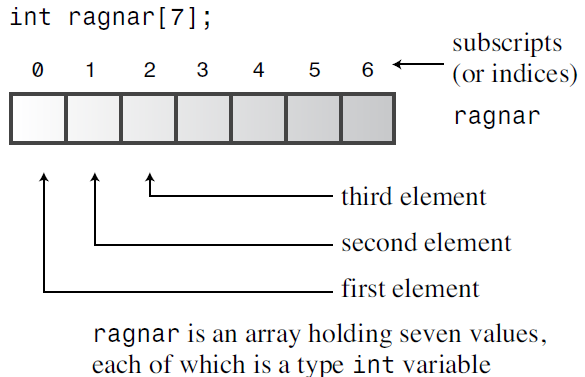
Declaring an array, assigning values to array elements,
and initializing an array:
arrayone.cpp
// arrayone.cpp -- small arrays of integers
#include <iostream>
int main()
{
using namespace std;
int yams[3]; // creates array with three elements
yams[0] = 7; // assign value to first element
yams[1] = 8;
yams[2] = 6;
int yamcosts[3] = {20, 30, 5}; // Initialization list !!!
// create, initialize array
// NOTE: If your C++ compiler or translator can't initialize
// this array, use static int yamcosts[3] instead of
// int yamcosts[3]
cout << "Total yams = ";
cout << yams[0] + yams[1] + yams[2] << endl;
cout << "The package with " << yams[1] << " yams costs ";
cout << yamcosts[1] << " cents per yam.\n";
int total = yams[0] * yamcosts[0] + yams[1] * yamcosts[1];
total = total + yams[2] * yamcosts[2];
cout << "The total yam expense is " << total << " cents.\n";
cout << "\nSize of yams array = " << sizeof yams;
cout << " bytes.\n";
cout << "Size of one element = " << sizeof yams[0];
cout << " bytes.\n";
return 0;
}
Array Initialization
You can use the initialization form only when defining the array. You cannot use it later, and you cannot assign one array wholesale to another:
int cards[4] = {3, 6, 8, 10}; // okay
int hand[4]; // okay
hand[4] = {5, 6, 7, 9}; // not allowed
hand = cards; // not allowed
// If you partially initialize an array,
// the compiler sets the remaining elements to zero.
float hotelTips[5] = {5.0, 2.5};
// If you leave the square brackets ([]) empty
// when you initialize an array, the C++ compiler
// counts the elements for you.
short things[] = {1, 5, 3, 8};
Often, letting the compiler count the number of elements is poor practice because its count can be different from what you think it should be. You could, for instance, accidently omit an initial value from the list. However, this approach can be a safe one for initializing a character array to a string, as you’ll soon see. And if your main concern is that the program, not you, knows how large an array is, you can do something like this:
C++11 Array Initialization
// 1. You can drop the = sign when initializing an array:
double earnings[4] {1.2e4, 1.6e4, 1.1e4, 1.7e4}; // okay with C++11
// 2. You can use empty braces to set all the elements to 0:
unsigned int counts[10] = {}; // all elements set to 0
float balances[100] {}; // all elements set to 0
// 3. List-initialization protects against narrowing (As in Chapter 3):
long plifs[] = {25, 92, 3.0}; // not allowed
char slifs[4] {'h', 'i', 1122011, '\0'}; // not allowed
char tlifs[4] {'h', 'i', 112, '\0'}; // allowed
vector - STL alternative for arrays
array template class - C++11 alternative for arrays
Strings
Series of characters stored in consecutive bytes of memory.
C-style strings
C-style strings have a special feature:The last character of every string is the null
character, written \0.
char dog[8] = { 'b', 'e', 'a', 'u', 'x', ' ', 'I', 'I'}; // not a string!
char cat[8] = {'f', 'a', 't', 'e', 's', 's', 'a', '\0'}; // a string!
char bird[11] = "Mr. Cheeps"; // the \0 is understood
char fish[] = "Bubbles"; // let the compiler count
But "S" is not a character constant; it represents the string consisting of
two characters, the S and the \0 characters. Even worse, "S" actually
represents the memory address at which the string is stored. So a statement
like the following attempts to assign a memory address to shirt_size.
Concatenating String Literals
C++ enables
you to concatenate string literals—that is, to combine two quoted strings into one.
\0 character from the first string is replaced by the first character of the
second string. The following output statements are equivalent to each other:
cout << "I'd give my right arm to be" " a great violinist.\n";
cout << "I'd give my right arm to be a great violinist.\n";
cout << "I'd give my right ar"
"m to be a great violinist.\n";
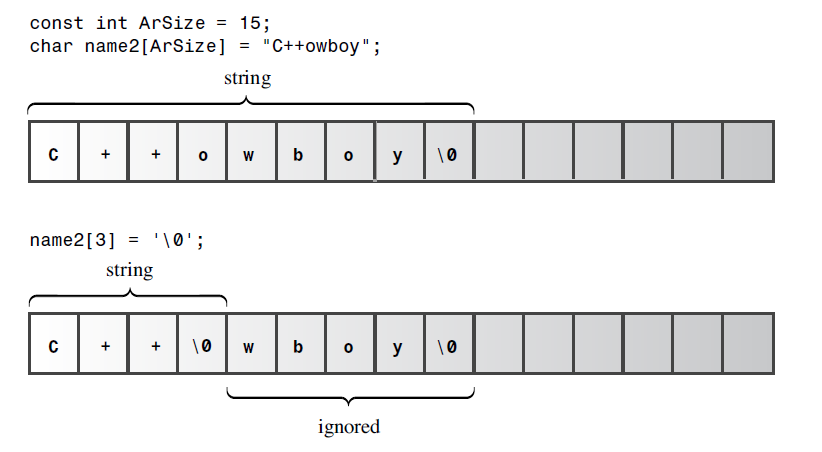
Strings in an Array: strings.cpp
// strings.cpp -- storing strings in an array
#include <iostream>
#include <cstring> // for the strlen() function
int main()
{
using namespace std;
const int Size = 15;
char name1[Size]; // empty array
char name2[Size] = "C++owboy"; // initialized array
// NOTE: some implementations may require the static keyword
// to initialize the array name2
cout << "Howdy! I'm " << name2;
cout << "! What's your name?\n";
cin >> name1;
cout << "Well, " << name1 << ", your name has ";
cout << strlen(name1) << " letters and is stored\n";
cout << "in an array of " << sizeof(name1) << " bytes.\n";
cout << "Your initial is " << name1[0] << ".\n";
name2[3] = '\0'; // set to null character
cout << "Here are the first 3 characters of my name: ";
cout << name2 << endl;
return 0;
}
/*
Here is a sample run of the program in Listing 4.2:
Howdy! I'm C++owboy! What's your name?
Basicman
Well, Basicman, your name has 8 letters and is stored
in an array of 15 bytes.
Your initial is B.
Here are the first 3 characters of my name: C++
*/
Problem 1: instr1.cpp, reading string input via cin
// instr1.cpp -- reading more than one string
#include <iostream>
int main()
{
using namespace std;
const int ArSize = 20;
char name[ArSize];
char dessert[ArSize];
cout << "Enter your name:\n";
cin >> name;
cout << "Enter your favorite dessert:\n";
cin >> dessert;
cout << "I have some delicious " << dessert;
cout << " for you, " << name << ".\n";
return 0;
}
/*
Enter your name:
Alistair Dreeb
Enter your favorite dessert:
I have some delicious Dreeb for you, Alistair.
*/
Solution 1: instr2.cpp, Line-Oriented Input with getline()
// instr2.cpp -- reading more than one word with getline
#include <iostream>
int main()
{
using namespace std;
const int ArSize = 20;
char name[ArSize];
char dessert[ArSize];
cout << "Enter your name:\n";
cin.getline(name, ArSize); // reads through newline
cout << "Enter your favorite dessert:\n";
cin.getline(dessert, ArSize);
cout << "I have some delicious " << dessert;
cout << " for you, " << name << ".\n";
return 0;
}
/*
Here is some sample output for Listing 4.4:
Enter your name:
Dirk Hammernose
Enter your favorite dessert:
Radish Torte
I have some delicious Radish Torte for you, Dirk Hammernose.
*/
Solution 2: instr3.cpp, Line-Oriented Input with get()
// instr3.cpp -- reading more than one word with get() & get()
#include <iostream>
int main()
{
using namespace std;
const int ArSize = 20;
char name[ArSize];
char dessert[ArSize];
cout << "Enter your name:\n";
cin.get(name, ArSize).get(); // read string, newline
cout << "Enter your favorite dessert:\n";
cin.get(dessert, ArSize).get();
cout << "I have some delicious " << dessert;
cout << " for you, " << name << ".\n";
return 0;
}
/*
Enter your name:
Mai Parfait
Enter your favorite dessert:
Chocolate Mousse
I have some delicious Chocolate Mousse for you, Mai Parfait.
*/
numstr.cpp, Mixing String and Numeric Input
// numstr.cpp -- following number input with line input
#include <iostream>
int main()
{
using namespace std;
cout << "What year was your house built?\n";
int year;
cin >> year;
cout << "What is its street address?\n";
char address[80];
cin.getline(address, 80);
cout << "Year built: " << year << endl;
cout << "Address: " << address << endl;
cout << "Done!\n";
return 0;
}
/*
Running the program in Listing 4.6 would look something like this:
What year was your house built?
1966
What is its street address?
Year built: 1966
Address
Done!
*/
In short:
cin.getline(dessert, ArSize);
cin.getline(name1, ArSize).getline(name2, ArSize); // overloading
cin.get(name, ArSize);
cin.get(dessert, Arsize); // a problem ()
cin.get(name, ArSize); // read first line
cin.get(); // read newline
cin.get(dessert, Arsize); // read second line
cin.get(name, ArSize).get(); // concatenate member functions
// get() (but not getline()) reads an empty
// line, it sets something called the failbit. The implications of
// this act are that further input is blocked, but you can restore
// input with the following command:
cin.clear();
// You can also use
cin.get(); // or cin.get(ch);
(cin >> year).get(); // or (cin >> year).get(ch);
string Class
To use the string class, a program has to include the string header file.
You should learn from this example that, in many ways, you can use a string object in the same manner as a character array:
- You can initialize a string object to a C-style string.
- You can use cin to store keyboard input in a string object.
- You can use cout to display a string object.
- You can use array notation to access individual characters stored in a string object.
strtype1.cpp, differences between string objects and character arrays.
// strtype1.cpp -- using the C++ string class
#include <iostream>
#include <string> // make string class available
int main()
{
using namespace std;
char charr1[20]; // create an empty array
char charr2[20] = "jaguar"; // create an initialized array
string str1; // create an empty string object
string str2 = "panther"; // create an initialized string
cout << "Enter a kind of feline: ";
cin >> charr1;
cout << "Enter another kind of feline: ";
cin >> str1; // use cin for input
cout << "Here are some felines:\n";
cout << charr1 << " " << charr2 << " "
<< str1 << " " << str2 // use cout for output
<< endl;
cout << "The third letter in " << charr2 << " is "
<< charr2[2] << endl;
cout << "The third letter in " << str2 << " is "
<< str2[2] << endl; // use array notation
return 0;
}
/*
Here is a sample run of the program in Listing 4.7:
Enter a kind of feline: ocelot
Enter another kind of feline: tiger
Here are some felines:
ocelot jaguar tiger panther
The third letter in jaguar is g
The third letter in panther is n
*/
C++11 string initialization
char first_date[] = {"Le Chapon Dodu"};
char second_date[] {"The Elegant Plate"};
string third_date = {"The Bread Bowl"};
string fourth_date {"Hank's Fine Eats"};
Assignment, Concatenation, and Appending
String class make some operations simpler. you can’t simply assign one array to nother. But you can assign one string object to another:
char charr1[20]; // create an empty array
char charr2[20] = "jaguar"; // create an initialized array
string str1; // create an empty string object
string str2 = "panther"; // create an initialized string
charr1 = charr2; // INVALID, no array assignment
str1 = str2; // VALID, object assignment ok
string str3;
str3 = str1 + str2; // assign str3 the joined strings
str1 += str2; // add str2 to the end of str1
strtype2.cpp, assigning, adding, and appending strings.
// strtype2.cpp –- assigning, adding, and appending
#include <iostream>
#include <string> // make string class available
int main()
{
using namespace std;
string s1 = "penguin";
string s2, s3;
cout << "You can assign one string object to another: s2 = s1\n";
s2 = s1;
cout << "s1: " << s1 << ", s2: " << s2 << endl;
cout << "You can assign a C-style string to a string object.\n";
cout << "s2 = \"buzzard\"\n";
s2 = "buzzard";
cout << "s2: " << s2 << endl;
cout << "You can concatenate strings: s3 = s1 + s2\n";
s3 = s1 + s2;
cout << "s3: " << s3 << endl;
cout << "You can append strings.\n";
s1 += s2;
cout << "s1 += s2 yields s1 = " << s1 << endl;
s2 += " for a day";
cout << "s2 += \" for a day\" yields s2 = " << s2 << endl;
return 0;
}
/*
You can assign one string object to another: s2 = s1
s1: penguin, s2: penguin
You can assign a C-style string to a string object.
s2 = "buzzard"
s2: buzzard
You can concatenate strings: s3 = s1 + s2
s3: penguinbuzzard
You can append strings.
s1 += s2 yields s1 = penguinbuzzard
s2 += " for a day" yields s2 = buzzard for a day
*/
More string Class operations
You can use the strcpy() function to copy a string to a character array,
and you can use the strcat() function to append a string to a character array:
strcpy(charr1, charr2); // copy charr2 to charr1
strcat(charr1, charr2); // append contents of charr2 to char1
strtype3.cpp, compares techniques used with string objects with techniques used with character arrays.
// strtype3.cpp -- more string class features
#include <iostream>
#include <string> // make string class available
#include <cstring> // C-style string library
int main()
{
using namespace std;
char charr1[20];
char charr2[20] = "jaguar";
string str1;
string str2 = "panther";
// assignment for string objects and character arrays
str1 = str2; // copy str2 to str1
strcpy(charr1, charr2); // copy charr2 to charr1
// appending for string objects and character arrays
str1 += " paste"; // add paste to end of str1
strcat(charr1, " juice"); // add juice to end of charr1
// finding the length of a string object and a C-style string
int len1 = str1.size(); // obtain length of str1
int len2 = strlen(charr1); // obtain length of charr1
cout << "The string " << str1 << " contains "
<< len1 << " characters.\n";
cout << "The string " << charr1 << " contains "
<< len2 << " characters.\n";
return 0;
}
/*
Here is the output:
The string panther paste contains 13 characters.
The string jaguar juice contains 12 characters.
*/
More string Class I/O
strtype4.cpp, reading a line at a time instead of a word at time uses a different syntax (class and not class).
// strtype4.cpp -- line input
#include <iostream>
#include <string> // make string class available
#include <cstring> // C-style string library
int main()
{
using namespace std;
char charr[20];
string str;
cout << "Length of string in charr before input: "
<< strlen(charr) << endl;
cout << "Length of string in str before input: "
<< str.size() << endl;
cout << "Enter a line of text:\n";
cin.getline(charr, 20); // indicate maximum length
cout << "You entered: " << charr << endl;
cout << "Enter another line of text:\n";
getline(cin, str); // cin now an argument; no length specifier
cout << "You entered: " << str << endl;
cout << "Length of string in charr after input: "
<< strlen(charr) << endl;
cout << "Length of string in str after input: "
<< str.size() << endl;
return 0;
}
/*
Here’s a sample run of the program in Listing 4.10:
Length of string in charr before input: 27
Length of string in str before input: 0
Enter a line of text:
peanut butter
You entered: peanut butter
Enter another line of text:
blueberry jam
You entered: blueberry jam
Length of string in charr after input: 13
Length of string in str after input: 13
*/
Other Forms of string Literals
C++ adds: wchar_t in addition to char
C++11 adds: char16_t, char32_t + raw string (R prefix) + support UTF-8 (u8 prefix)
Use literals with L, u, and U prefixes:
wchar_t title[] = L"Chief Astrogator"; // w_char string
char16_t name[] = u"Felonia Ripova"; // char_16 string
char32_t car[] = U"Humber Super Snipe"; // char_32 string
Raw string
cout << R"(Jim "King" Tutt uses "\n" instead of endl.)" << '\n';
This would display the following: Jim "King" Tutt uses \n instead of endl.
The standard string literal equivalent would be this:
cout << "Jim \"King\" Tutt uses \" \\n\" instead of endl." << '\n';
Raw string syntax allows you to place additional characters between the
opening - the statement: cout << R"+*("(Who wouldn't?)", she whispered.)+*" << endl;
would display the following: "(Who wouldn't?)", she whispered.
Structures
array can store only one type of data
structure can store different types of data at the same time
#include <string>
struct inflatable_string // structure definition
{
std::string name;
float volume;
double price;
};
struct inflatable // structure declaration with 'inflatible' identifier/tag
{
char name[20];
float volume;
double price;
};
inflatable hat; // hat is a structure variable of type inflatable
inflatable woopie_cushion; // type inflatable variable
inflatable mainframe; // type inflatable variable
struct inflatable goose; // keyword struct required in C
inflatable vincent; // keyword struct not required in C++
Given that hat is type inflatable, you use the membership operator (.)
to access individual members. For example, hat.volume refers to the volume
member of the structure, and hat.price refers to the price member.
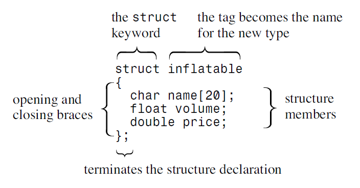
structur.cpp, example use of structure.
// structur.cpp -- a simple structure
#include <iostream>
struct inflatable // structure declaration
{
char name[20];
float volume;
double price;
};
int main()
{
using namespace std;
inflatable guest =
{
"Glorious Gloria", // name value
1.88, // volume value
29.99 // price value
}; // guest is a structure variable of type inflatable
// It's initialized to the indicated values
inflatable pal =
{
"Audacious Arthur",
3.12,
32.99
}; // pal is a second variable of type inflatable
// NOTE: some implementations require using
// static inflatable guest =
cout << "Expand your guest list with " << guest.name;
cout << " and " << pal.name << "!\n";
// pal.name is the name member of the pal variable
cout << "You can have both for $";
cout << guest.price + pal.price << "!\n";
return 0;
}
/*
One important matter related to the program in Listing 4.11 is where to place the structure
declaration.There are two choices for structur.cpp.You could place the declaration
inside the main() function, just after the opening brace.The second choice, and the one
made here, is to place it outside and preceding main().When a declaration occurs outside
any function, it’s called an external declaration. For this program, there is no practical difference
between the two choices. But for programs consisting of two or more functions, the
difference can be crucial.The external declaration can be used by all the functions following
it, whereas the internal declaration can be used only by the function in which the
declaration is found.
*/
structures can be declared outside any function, which is called external declaration
C++11 Initialization
inflatable duck {"Daphne", 0.12, 9.98}; // can omit the = in C++11
inflatable mayor {}; // individual members being set to 0
Narrowing is not allowed.
Other structure properties
memberwise assignment - you can use the assignment operator (=) to assign one
structure to another of the same type.
assgn_st.cpp, example use of memberwise assignment.
// assgn_st.cpp -- assigning structures
#include <iostream>
struct inflatable
{
char name[20];
float volume;
double price;
};
int main()
{
using namespace std;
inflatable bouquet =
{
"sunflowers",
0.20,
12.49
};
inflatable choice;
cout << "bouquet: " << bouquet.name << " for $";
cout << bouquet.price << endl;
choice = bouquet; // assign one structure to another
cout << "choice: " << choice.name << " for $";
cout << choice.price << endl;
return 0;
}
Arrays of Structures
inflatable gifts[100]; // array of 100 inflatable structures
...
cin >> gifts[0].volume; // use volume member of first struct
cout << gifts[99].price << endl; // display price member of last struct
inflatable guests[2] = // initializing an array of structs
{
{"Bambi", 0.5, 21.99}, // first structure in array
{"Godzilla", 2000, 565.99} // next structure in array
};
arrstruct.cpp, array of structures.
// arrstruc.cpp -- an array of structures
#include <iostream>
struct inflatable
{
char name[20];
float volume;
double price;
};
int main()
{
using namespace std;
inflatable guests[2] = // initializing an array of structs
{
{"Bambi", 0.5, 21.99}, // first structure in array
{"Godzilla", 2000, 565.99} // next structure in array
};
cout << "The guests " << guests[0].name << " and " << guests[1].name
<< "\nhave a combined volume of "
<< guests[0].volume + guests[1].volume << " cubic feet.\n";
return 0;
}
/*
Here is the output of the program in Listing 4.13:
The guests Bambi and Godzilla
have a combined volume of 2000.5 cubic feet.
*/
Bit Fields in Structures
C++, like C, enables you to specify structure members that occupy a particular number of bits
struct torgle_register
{
u`nsigned int SN : 4; // 4 bits for SN value
unsigned int : 4; // 4 bits unused
bool goodIn : 1; // valid input (1 bit)
b`ool goodTorgle : 1; // successful torgling
};
torgle_register tr = { 14, true, false };
...
if (tr.goodIn)
Unions
A union is a data format that can hold different data types but only one type at a time
union one4all
{
int int_val;
long long_val;
double double_val;
};
one4all pail;
pail.int_val = 15; // store an int
cout << pail.int_val;
pail.double_val = 1.38; // store a double, int value is lost
cout << pail.double_val;
anonymous union - has no name; in essence, its members become
variables that share the same address.
struct widget
{
char brand[20];
int type;
union // anonymous union
{
long id_num; // type 1 widgets
char id_char[20]; // other widgets
};
};
...
widget prize;
...
if (prize.type == 1)
cin >> prize.id_num;
else
cin >> prize.id_char;
Enumerations
enum facility provides an alternative to const for creating symbolic constants
- It makes spectrum the name of a new type; spectrum is termed an enumeration, much as a struct variable is called a structure.
- It establishes red, orange, yellow, and so on, as symbolic constants for the integer values 0–7.These constants are called enumerators.
spectrum band; // band a variable of type spectrum
band = blue; // valid, blue is an enumerator
band = 2000; // invalid, 2000 not an enumerator
band = orange; // valid
++band; // not valid, ++ discussed in Chapter 5
band = orange + red; // not valid, but a little tricky
int color = blue; // valid, spectrum type promoted to int
band = 3; // invalid, int not converted to spectrum
color = 3 + red; // valid, red converted to int
band = spectrum(3); // typecast 3 to type spectrum
band = spectrum(40003); // undefined
Setting Enumerator Values
enum bits{one = 1, two = 2, four = 4, eight = 8};
enum bigstep{first, second = 100, third};
enum {zero, null = 0, one, numero_uno = 1};
Range of enumerations
enum bits{one = 1, two = 2, four = 4, eight = 8};
bits myflag;
// In this case, the following is valid:
myflag = bits(6); // valid, because 6 is in bits range
Here 6 is not one of the enumerations, but it lies in the range the
enumerations define. The range is defined as follows. First, to find
the upper limit, you take the largest enumerator value.Then you find
the smallest power of two greater than this largest value and subtract one;
the result is the upper end of the range (For example, the largest bigstep
value, as previously defined, is 101. The smallest power of two greater
than this is 128, so the upper end of the range is 127.)
Pointers and the Free Store
address operator, represented by & to a variable to get its location;
if home is a variable, &home is its address
The implicit address operator returns the address of the invoking object (that is, the
value of the this pointer). That’s fine for our purposes, and we won’t discuss this member
function further.
address.cpp
// address.cpp -- using the & operator to find addresses
#include <iostream>
int main()
{
using namespace std;
int donuts = 6;
double cups = 4.5;
cout << "donuts value = " << donuts;
cout << " and donuts address = " << &donuts << endl;
// NOTE: you may need to use unsigned (&donuts)
// and unsigned (&cups)
cout << "cups value = " << cups;
cout << " and cups address = " << &cups << endl;
return 0;
}
/*
Here is the output from the program in Listing 4.14 on one system:
donuts value = 6 and donuts address = 0x0065fd40
cups value = 4.5 and cups address = 0x0065fd44
*/
Pointers and the C++ Philosophy
Object-oriented programming differs from traditional procedural programming in that OOP emphasizes making decisions during runtime instead of during compile time. Runtime means while a program is running, and compile time means when the compiler is putting a program together. A runtime decision is like, when on vacation, choosing what sights to see depending on the weather and your mood at the moment, whereas a compile-time decision is more like adhering to a preset schedule, regardless of the conditions. Runtime decisions provide the flexibility to adjust to current circumstances. For example, consider allocating memory for an array. The traditional way is to declare an array. To declare an array in C++, you have to commit yourself to a particular array size. Thus, the array size is set when the program is compiled; it is a compile-time decision. Perhaps you think an array of 20 elements is sufficient 80% of the time but that occasionally the program will need to handle 200 elements. To be safe, you use an array with 200 elements. This results in your program wasting memory most of the time it’s used. OOP tries to make a program more flexible by delaying such decisions until runtime. That way, after the program is running, you can tell it you need only 20 elements one time or that you need 205 elements another time. In short, with OOP you would like to make the array size a runtime decision. To make this approach possible, the language has to allow you to create an array—or the equivalent— while the program runs. The C++ method, as you soon see, involves using the keyword new to request the correct amount of memory and using pointers to keep track of where the newly allocated memory is found. Making runtime decisions is not unique to OOP. But C++ makes writing the code a bit more straightforward than does C.
A special type of variable the pointer — holds the address of a value.
Thus, the name of the pointer represents the location
Applying the * operator, called the indirect value or the dereferencing operator,
yields the value at the location.
pointer.cpp
// pointer.cpp -- our first pointer variable
#include <iostream>
int main()
{
using namespace std;
int updates = 6; // declare a variable
int *p_updates; // declare pointer to an int
p_updates = &updates; // assign address of int to pointer
// express values two ways
cout << "Values: updates = " << updates;
cout << ", *p_updates = " << *p_updates << endl;
// express address two ways
cout << "Addresses: &updates = " << &updates;
cout << ", p_updates = " << p_updates << endl;
// use pointer to change value
*p_updates = *p_updates + 1;
cout << "Now updates = " << updates << endl;
return 0;
}
/*
Here is the output from the program in Listing 4.15:
Values: updates = 6, *p_updates = 6
Addresses: &updates = 0x0065fd48, p_updates = 0x0065fd48
Now updates = 7
*/
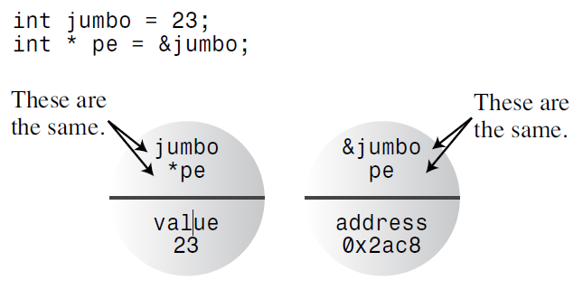
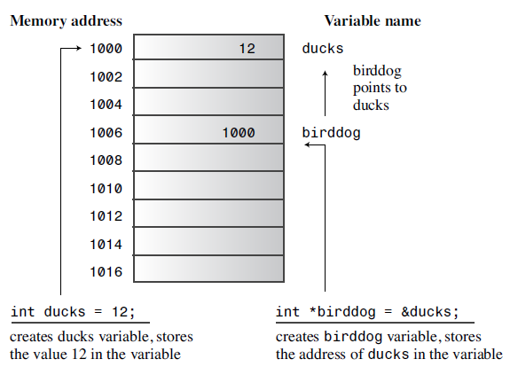
In C++, the combination int * is a compound type, pointer-to-int.
int * p_updates;
// the following declaration creates one pointer (p1) and one ordinary int (p2):
int* p1, p2;
double * tax_ptr; // tax_ptr points to type double
char * str; // str points to type char
init_ptr.cpp, initialize a pointer to an address.
// init_ptr.cpp -- initialize a pointer
#include <iostream>
int main()
{
using namespace std;
int higgens = 5;
int *pt = &higgens;
cout << "Value of higgens = " << higgens
<< "; Address of higgens = " << &higgens << endl;
cout << "Value of *pt = " << *pt
<< "; Value of pt = " << pt << endl;
return 0;
}
/*
Here is some sample output from the program in Listing 4.16:
Value of higgens = 5; Address of higgens = 0012FED4
Value of *pt = 5; Value of pt = 0012FED4
*/
Pointer Danger
long * fellow; // create a pointer-to-long
*fellow = 223323; // place a value in never-never land
// Pointer Golden Rule: Always initialize a pointer to a definite and
// appropriate address before you apply the dereferencing operator (*) to it.
int * pt;
pt = 0xB8000000; // type mismatch
int * pt;
pt = (int *) 0xB8000000; // types now match
Allocating Memory with new
In C, you can allocate memory with the library function malloc()
// typeName * pointer_name = new typeName;
int * pn = new int;
// for comparison
int higgens;
int * pt = &higgens;
We say that pn points to a data object
use_new.cpp, use new.
// use_new.cpp -- using the new operator
#include <iostream>
int main()
{
using namespace std;
int nights = 1001;
int *pt = new int; // allocate space for an int
*pt = 1001; // store a value there
cout << "nights value = ";
cout << nights << ": location " << &nights << endl;
cout << "int ";
cout << "value = " << *pt << ": location = " << pt << endl;
double *pd = new double; // allocate space for a double
*pd = 10000001.0; // store a double there
cout << "double ";
cout << "value = " << *pd << ": location = " << pd << endl;
cout << "location of pointer pd: " << &pd << endl;
cout << "size of pt = " << sizeof(pt);
cout << ": size of *pt = " << sizeof(*pt) << endl;
cout << "size of pd = " << sizeof pd;
cout << ": size of *pd = " << sizeof(*pd) << endl;
return 0;
}
/*
Here is the output from the program in Listing 4.17:
nights value = 1001: location 0028F7F8
int value = 1001: location = 00033A98
double value = 1e+007: location = 000339B8
location of pointer pd: 0028F7FC
size of pt = 4: size of *pt = 4
size of pd = 4: size of *pd = 8
*/
Out of Memory?
It’s possible that a computer might not have sufficient memory available to satisfy a new request. When that is the case, new normally responds by throwing an exception, an errorhandling technique discussed in Chapter 15, “Friends, Exceptions, and More.” In older implementations new returns the value 0. In C++, a pointer with the value 0 is called the null pointer. C++ guarantees that the null pointer never points to valid data, so it is often used to indicate failure for operators or functions that otherwise return usable pointers. The if statement, discussed in Chapter 6, helps you deal with this possibility. For now, the important point is that C++ provides the tools to detect and respond to allocation failures.
Freeing Memory with delete
This removes the memory to which ps points; it doesn’t remove the pointer ps itself.
Memory that you return, or free, can then be reused by other parts of the program
int * ps = new int; // allocate memory with new
. . . // use the memory
delete ps; // free memory with delete when done
int * ps = new int; // ok
delete ps; // ok
delete ps; // not ok now
int jugs = 5; // ok
int * pi = &jugs; // ok
delete pi; // not allowed, memory not allocated by new
// Ordinarily, you won’t create two pointers to the same block of memory because that
// raises the possibility that you will mistakenly try to delete the same block twice.
int * ps = new int; // allocate memory
int * pq = ps; // set second pointer to same block
delete pq; // delete with second pointer
Using new to Create Dynamic Arrays
//type_name * pointer_name = new type_name [num_elements];
int * psome = new int [10]; // get a block of 10 ints
delete [] psome; // free a dynamic array
int * pt = new int;
short * ps = new short [500];
delete [] pt; // effect is undefined, don't do it
delete ps; // effect is undefined, don't do it
- Don’t use delete to free memory that new didn’t allocate.
- Don’t use delete to free the same block of memory twice in succession.
- Use delete [] if you used new [] to allocate an array.
- Use delete (no brackets) if you used new to allocate a single entity.
- It’s safe to apply delete to the null pointer (nothing happens).
arraynew.cpp, use dynamic array
// arraynew.cpp -- using the new operator for arrays
#include <iostream>
int main()
{
using namespace std;
double *p3 = new double[3]; // space for 3 doubles
p3[0] = 0.2; // treat p3 like an array name
p3[1] = 0.5;
p3[2] = 0.8;
cout << "p3[1] is " << p3[1] << ".\n";
p3 = p3 + 1; // increment the pointer
cout << "Now p3[0] is " << p3[0] << " and ";
cout << "p3[1] is " << p3[1] << ".\n";
p3 = p3 - 1; // point back to beginning
delete[] p3; // free the memory
return 0;
}
/*
Here is the output from the program in Listing 4.18:
p3[1] is 0.5.
Now p3[0] is 0.5 and p3[1] is 0.8.
As you can see, arraynew.cpp uses the pointer p3 as if it were the name of an array,
with p3[0] as the first element, and so on.The fundamental difference between an array
name and a pointer appears in the following line:
p3 = p3 + 1; // okay for pointers, wrong for array names
*/
Pointers, Arrays, and Pointer Arithmetic
addpntrs.cpp, pointer addition
// addpntrs.cpp -- pointer addition
#include <iostream>
int main()
{
using namespace std;
double wages[3] = {10000.0, 20000.0, 30000.0};
short stacks[3] = {3, 2, 1};
// Here are two ways to get the address of an array
double *pw = wages; // name of an array = address
short *ps = &stacks[0]; // or use address operator
// with array element
cout << "pw = " << pw << ", *pw = " << *pw << endl;
pw = pw + 1;
cout << "add 1 to the pw pointer:\n";
cout << "pw = " << pw << ", *pw = " << *pw << "\n\n";
cout << "ps = " << ps << ", *ps = " << *ps << endl;
ps = ps + 1;
cout << "add 1 to the ps pointer:\n";
cout << "ps = " << ps << ", *ps = " << *ps << "\n\n";
cout << "access two elements with array notation\n";
cout << "stacks[0] = " << stacks[0]
<< ", stacks[1] = " << stacks[1] << endl;
cout << "access two elements with pointer notation\n";
cout << "*stacks = " << *stacks
<< ", *(stacks + 1) = " << *(stacks + 1) << endl;
cout << sizeof(wages) << " = size of wages array\n";
cout << sizeof(pw) << " = size of pw pointer\n";
return 0;
}
/*
Here is the output from the program in Listing 4.19:
pw = 0x28ccf0, *pw = 10000
add 1 to the pw pointer:
pw = 0x28ccf8, *pw = 20000
ps = 0x28ccea, *ps = 3
add 1 to the ps pointer:
ps = 0x28ccec, *ps = 2
access two elements with array notation
stacks[0] = 3, stacks[1] = 2
access two elements with pointer notation
*stacks = 3, *(stacks + 1) = 2
24 = size of wages array
4 = size of pw pointer
In most contexts, C++ interprets the name of an array as the address of its first element.
Thus, the following statement makes pw a pointer to type double and then initializes pw
to wages, which is the address of the first element of the wages array:
double * pw = wages;
For wages, as with any array, we have the following equality:
wages = &wages[0] = address of first element of array
Just to show that this is no jive, the program explicitly uses the address operator in the
expression &stacks[0] to initialize the ps pointer to the first element of the stacks array.
*/
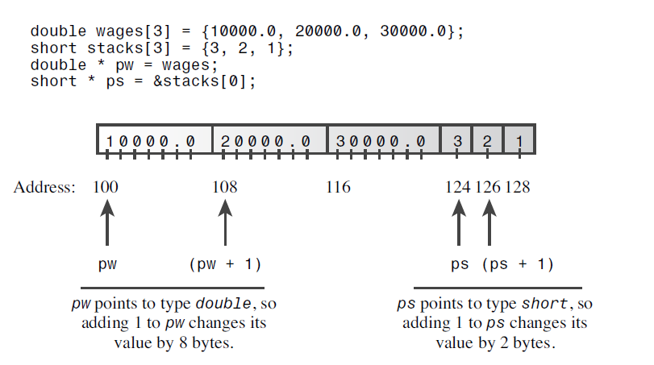
The Address of an Array
Taking the address of an array is another case in which the name of an array is not interpreted as its address. But wait, isn’t the name of an array interpreted as the address of the array? Not quite—the name of the array is interpreted as the address of the first element of an array, whereas applying the address operator yields the address of the whole array: `short tell[10]; // tell an array of 20 bytes` `cout << tell << endl; // displays &tell[0]` `cout << &tell << endl; // displays address of whole array` Numerically, these two addresses are the same, but conceptually `&tell[0]`, and hence tell, is the address of a 2-byte block of memory, whereas `&tell` is the address of a 20- byte block of memory. So the expression tell + 1 adds 2 to the address value, whereas `&tell + 1` adds 20 to the address value. Another way of expressing this is to say that tell is type pointer-to-short, or `short *`, and `&tell` is type pointer-to-array-of-20-shorts, or short [*](20). Now you might be wondering about the genesis of that last type description. First, here is how you could declare and initialize a pointer of that type: `short (*pas)[20] = &tell; // pas points to array of 20 shorts` If you omit the parentheses, precedence rules would first associate [20] with pas, making pas an array of 20 pointers-to-short, so the parentheses are necessary. Next, if you wish to describe the type of a variable, you can use the declaration of that variable as a guide and remove the variable name. Thus, the type of pas is `short (*)[20]`. Also note that because pas is set to `&tell`, *pas is equivalent to tell, so `(*pas)[0]` would be the first element of the `tell` array.pointer Summary
Declaring Pointers
To declare a pointer to a particular type, use this form:
Here are some examples:
Here pn and pc are pointers, and double and char are the C++ notations for the types pointer-to-double and pointer-to-char.
Assigning Values to Pointers
You should assign a memory address to a pointer.You can apply the & operator to a variable name to get an address of named memory, and the new operator returns the address of unnamed memory.
Here are some examples:
double * pn; // pn can point to a double value
double * pa; // so can pa
char * pc; // pc can point to a char value
double bubble = 3.2;
pn = &bubble; // assign address of bubble to pn
pc = new char; // assign address of newly allocated char memory to pc
pa = new double[30]; // assign address of 1st element of array of 30 double to pa
Dereferencing Pointers
Dereferencing a pointer means referring to the pointed-to value.
You apply the dereferencing, or indirect value, operator (*) to a
pointer to dereference it. Thus, if pn is a pointer to bubble,
as in the preceding example, then *pn is the pointed-to value, or 3.2,
in this case.
Here are some examples:
cout << *pn; // print the value of bubble
*pc = 'S'; // place 'S' into the memory location whose address is pc
Array notation is a second way to dereference a pointer; for instance, pn[0]
is the same as *pn. You should never dereference a pointer that has not been
initialized to a proper address.
Distinguishing Between a Pointer and the Pointed-to Value
Remember, if pt is a pointer-to-int, *pt is not a pointer-to-int; instead, *pt
is the complete equivalent to a type int variable. It is pt that is the pointer.
Here are some examples:
int * pt = new int; // assigns an address to the pointer pt
*pt = 5; // stores the value 5 at that address
Array Names
In most contexts, C++ treats the name of an array as equivalent to the address of the first element of an array.
One exception is when you use the name of an array with the sizeof operator. In that case, sizeof returns the size of the entire array, in bytes.
Pointer Arithmetic
C++ allows you to add an integer to a pointer.The result of adding one equals the original address value plus a value equal to the number of bytes in the pointed-to object. You can also subtract an integer from a pointer to take the difference between two pointers. The last operation, which yields an integer, is meaningful only if the two pointers point into the same array (pointing to one position past the end is allowed, too); it then yields the separation between the two elements.
Here are some examples:
int tacos[10] = {5,2,8,4,1,2,2,4,6,8};
int * pt = tacos; // suppose pf and tacos are the address 3000
pt = pt + 1; // now pt is 3004 if a int is 4 bytes
int *pe = &tacos[9]; // pe is 3036 if an int is 4 bytes
pe = pe - 1; // now pe is 3032, the address of tacos[8]
int diff = pe - pt; // diff is 7, the separation between
// tacos[8] and tacos[1]
Dynamic Binding and Static Binding for Arrays
You can use an array declaration to create an array with static binding—that is, an array whose size is set during the compilation process:
You use the new [] operator to create an array with dynamic binding (a dynamic array) that is, an array that is allocated and whose size can be set during runtime. You free the memory with delete [] when you are done:
int size;
cin >> size;
int * pz = new int [size]; // dynamic binding, size set at run time
...
delete [] pz; // free memory when finished
Structure pointers
If the data object is a structure initialized with new, you can use the
pointer dereferencing operator (->) to access structure members
BOP *stBOP = new BOP[5];
strcpy(stBOP[0].fullname, "Wimp Macho");
strcpy(stBOP[1].fullname, "Wimp Macho");
bop *stBOP = new bop;
strcpy(stBOP->fullname, "Wimp Macho");
The . operator works instead of the -> operator because you are accessing
the members of the bop struct using an array of structs (stBOP),
not a pointer to a struct.
When you use the array notation stBOP[0], it refers to the first element of
the array, which is an object of the bop struct. Therefore, you can use
the . operator to access its members directly.
Use the . operator to access members of a struct or class directly, and
use the -> operator to access members through a pointer to a struct or class.
Pointers and Strings
With cout and with most C++ expressions, the name of an array of char, a pointer-tochar, and a quoted string constant are all interpreted as the address of the first character of a string.
The strcpy(var_dest, var_copyFrom) function copies a string from one location to another.
The strncpy(var_dest, var_copyFrom, int_sizeof_var_copyFrom) function copies
a string from one location to another with the new size of it.
The strlen() function returns the length of a string, not counting the null character
When using these functions, you include the cstring or the string.h header file.
ptrstr.cpp
// ptrstr.cpp -- using pointers to strings
#include <iostream>
#include <cstring> // declare strlen(), strcpy()
int main()
{
using namespace std;
char animal[20] = "bear"; // animal holds bear
const char *bird = "wren"; // bird holds address of string
char *ps; // uninitialized
cout << animal << " and "; // display bear
cout << bird << "\n"; // display wren
// cout << ps << "\n"; //may display garbage, may cause a crash
cout << "Enter a kind of animal: ";
cin >> animal; // ok if input < 20 chars
// cin >> ps; Too horrible a blunder to try; ps doesn't
// point to allocated space
ps = animal; // set ps to point to string
cout << ps << "!\n"; // ok, same as using animal
cout << "Before using strcpy():\n";
cout << animal << " at " << (int *)animal << endl;
cout << ps << " at " << (int *)ps << endl;
ps = new char[strlen(animal) + 1]; // get new storage
strcpy(ps, animal); // copy string to new storage
cout << "After using strcpy():\n";
cout << animal << " at " << (int *)animal << endl;
cout << ps << " at " << (int *)ps << endl;
delete[] ps;
return 0;
}
/*
Here is a sample run of the program in Listing 4.20:
bear and wren
Enter a kind of animal: fox
fox!
Before using strcpy():
fox at 0x0065fd30
fox at 0x0065fd30
After using strcpy():
fox at 0x0065fd30
fox at 0x004301c8
*/
const char * bird = "wren"; // bird holds address of string
// you can use the pointer bird just as you would use the string "wren", as in this example:
cout << "A concerned " << bird << " speaks\n";
char food[20] = "carrots"; // initialization
strcpy(food, "flan"); // otherwise
ps = animal; // set ps to point to string
...
cout << animal << " at " << (int *) animal << endl;
cout << ps << " at " << (int *) ps << endl;
// It produces the following output:
// fox at 0x0065fd30
// fox at 0x0065fd30
Using new to Create Dynamic Structures
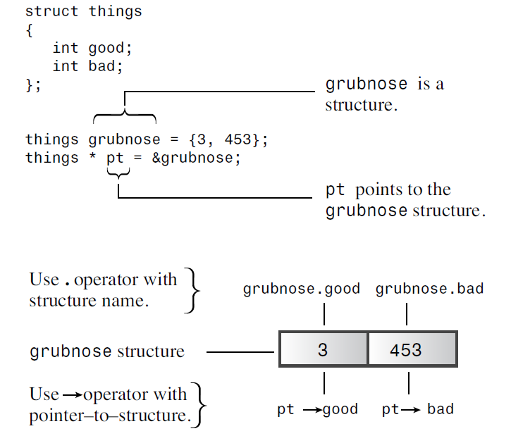
newstrct.cpp
// newstrct.cpp -- using new with a structure
#include <iostream>
struct inflatable // structure definition
{
char name[20];
float volume;
double price;
};
int main()
{
using namespace std;
inflatable *ps = new inflatable; // allot memory for structure
cout << "Enter name of inflatable item: ";
cin.get(ps->name, 20); // method 1 for member access
cout << "Enter volume in cubic feet: ";
cin >> (*ps).volume; // method 2 for member access
cout << "Enter price: $";
cin >> ps->price;
cout << "Name: " << (*ps).name << endl; // method 2
cout << "Volume: " << ps->volume << " cubic feet\n"; // method 1
cout << "Price: $" << ps->price << endl; // method 1
delete ps; // free memory used by structure
return 0;
}
/*
Here is a sample run of the program in Listing 4.21:
Enter name of inflatable item: Fabulous Frodo
Enter volume in cubic feet: 1.4
Enter price: $27.99
Name: Fabulous Frodo
Volume: 1.4 cubic feet
Price: $27.99
*/
Using new and delete
delete.cpp
// delete.cpp -- using the delete operator
#include <iostream>
#include <cstring> // or string.h
using namespace std;
char *getname(void); // function prototype
int main()
{
char *name; // create pointer but no storage
name = getname(); // assign address of string to name
cout << name << " at " << (int *)name << "\n";
delete[] name; // memory freed
name = getname(); // reuse freed memory
cout << name << " at " << (int *)name << "\n";
delete[] name; // memory freed again
return 0;
}
char *getname() // return pointer to new string
{
char temp[80]; // temporary storage
cout << "Enter last name: ";
cin >> temp;
char *pn = new char[strlen(temp) + 1];
strcpy(pn, temp); // copy string into smaller space
return pn; // temp lost when function ends
}
/*
Here is a sample run of the program in Listing 4.22:
Enter last name: Fredeldumpkin
Fredeldumpkin at 0x004326b8
Enter last name: Pook
Pook at 0x004301c8
*/
Automatic Storage, Static Storage, and Dynamic Storage
Ordinary variables defined inside a function use automatic storage and are
called automatic variables.
Automatic variables typically are stored on a stack.
Static storage is storage that exists throughout the execution of an entire program. There are two ways to make a variable static.
The new and delete operators provide a more flexible approach than automatic
and static variables.They manage a pool of memory, which C++ refers to as
the free store or heap.
Combinations of Types
mixtypes.cpp
// mixtypes.cpp -- some type combinations
#include <iostream>
struct antarctica_years_end
{
int year;
/* some really interesting data, etc. */
};
int main()
{
antarctica_years_end s01, s02, s03;
s01.year = 1998;
antarctica_years_end *pa = &s02;
pa->year = 1999;
antarctica_years_end trio[3]; // array of 3 structures
trio[0].year = 2003;
std::cout << trio->year << std::endl;
const antarctica_years_end *arp[3] = {&s01, &s02, &s03};
std::cout << arp[1]->year << std::endl;
const antarctica_years_end **ppa = arp;
auto ppb = arp; // C++11 automatic type deduction
// or else use const antarctica_years_end ** ppb = arp;
std::cout << (*ppa)->year << std::endl;
std::cout << (*(ppb + 1))->year << std::endl;
return 0;
}
/*
Here’s the output:
2003
1999
1998
1999
*/
Array Alternatives - vector
vector class does use new and delete to manage memory, but it does so automatically.
#include <vector>
...
using namespace std;
vector<int> vi; // create a zero-size array of int
int n;
cin >> n;
vector<double> vd(n); // create an array of n doubles
We say that vi is an object of type vector
C++11 array Template Class
Comparing Arrays, Vector Objects, and Array Objects
choices.cpp
// choices.cpp -- array variations
#include <iostream>
#include <vector> // STL C++98
#include <array> // C++11
int main()
{
using namespace std;
// C, original C++
double a1[4] = {1.2, 2.4, 3.6, 4.8};
// C++98 STL
vector<double> a2(4); // create vector with 4 elements
// no simple way to initialize in C98
a2[0] = 1.0 / 3.0;
a2[1] = 1.0 / 5.0;
a2[2] = 1.0 / 7.0;
a2[3] = 1.0 / 9.0;
// C++11 -- create and initialize array object
array<double, 4> a3 = {3.14, 2.72, 1.62, 1.41};
array<double, 4> a4;
a4 = a3; // valid for array objects of same size
// use array notation
cout << "a1[2]: " << a1[2] << " at " << &a1[2] << endl;
cout << "a2[2]: " << a2[2] << " at " << &a2[2] << endl;
cout << "a3[2]: " << a3[2] << " at " << &a3[2] << endl;
cout << "a4[2]: " << a4[2] << " at " << &a4[2] << endl;
// misdeed
a1[-2] = 20.2;
cout << "a1[-2]: " << a1[-2] << " at " << &a1[-2] << endl;
cout << "a3[2]: " << a3[2] << " at " << &a3[2] << endl;
cout << "a4[2]: " << a4[2] << " at " << &a4[2] << endl;
return 0;
}
/*
Here’s some sample output:
a1[2]: 3.6 at 0x28cce8
a2[2]: 0.142857 at 0xca0328
a3[2]: 1.62 at 0x28ccc8
a4[2]: 1.62 at 0x28cca8
a1[-2]: 20.2 at 0x28ccc8
a3[2]: 20.2 at 0x28ccc8
a4[2]: 1.62 at 0x28cca8
*/
Pointers and arrays are closely connected. If ar is an array name, then the expression
ar[i]is interpreted as *(ar + i), with the array name interpreted as the address
of the first element of the array. Thus, the array name plays the same role as a pointer.
Assign safety
The difference between using bracket notation and the at() member function is
that if you use at(), an invalid index is caught during runtime and the program,
by default, aborts.
Chapter 5: Loops and Relational Expressions
List of what you will learn
- The for loop
- Expressions and statements
- The increment and decrement operators: ++ and --
- Combination assignment operators
- Compound statements (blocks)
- The comma operator
- Relational operators: >, >=, ==, <=, <, and !=
- The while loop
- The typedef facility
- The do while loop
- The get() character input method
- The end-of-file condition
- Nested loops and two-dimensional arrays
Loops, Expressions and Statements
You can’t assign a for loop to a variable. In the following example, the for loop is not an expression, so it has no value and you can’t assign it:
int fx = for (i = 0; i< 4; i++)
cout >> i; // not possible
for (expression; expression; expression)
statement
formore.cpp - factorials in cpp
// formore.cpp -- Factorials in cpp
#include <iostream>
const int ArSize = 16; // example of external declaration
int main()
{
long long factorials[ArSize];
factorials[1] = factorials[0] = 1LL;
for (int i = 2; i < ArSize; i++)
factorials[i] = i * factorials[i - 1];
for (int i = 0; i < ArSize; i++)
std::cout << i << "! = " << factorials[i] << std::endl;
return 0;
}
forstr1.cpp - (string) letters in reverse order
Consider this statement:
The expression 4 + x++ is not a full expression, so C++ does not guarantee
that x will be incremented immediately after the subexpression 4 + x++ is evaluated.
Here the full expression is the entire assignment statement, and the semicolon marks
the sequence point, so all that C++ guarantees is that x will have been incremented
twice by the time the program moves to the following statement. C++ does not specify
whether x is incremented after each subexpression is evaluated or only after all
the expressions have been evaluated, which is why you should avoid statements
of this kind.
Prefix & Postfix
postfix version works by first stashing a copy of the value, incrementing the value, and then returning the stashed copy.Thus, for classes, the prefix version is a bit more efficient than the postfix version.
In short, for built-in types, it most likely makes no difference which form you use. For user-defined types having user-defined increment and decrement operators, the prefix form is more efficient.
The right-to-left association rule for prefix operators implies that *++pt
means first apply ++ to pt (because the ++ is to the right of the *)
and then apply * to the new value of pt:
double x = *++pt; // increment pointer, take the value; i.e., arr[2], or 23.4
++*pt; // increment the pointed to value; i.e., change 23.4 to 24.4
(*pt)++; // increment pointed-to value
x = *pt++; // dereference original location, then increment pointer
Incrementing and decrementing pointers follow pointer arithmetic rules. Thus, if pt points to the first member of an array, ++pt changes pt so that it points to the second member.
Assignment Operators
+= Assigns L + R to L
-= Assigns L - R to L
*= Assigns L * R to L
/= Assigns L / R to L
%= Assigns L % R to L
Relational Operators
<< Is less than
<= Is less than or equal to
== Is equal to
> Is greater than
>= Is greater than or equal to
!= Is not equal to
Compound Statements, or Blocks, Syntax Tricks
block.cpp - Example of local code block
// block.cpp -- use a block statement
#include <iostream>
int main()
{
using namespace std;
cout << "The Amazing Accounto will sum and average ";
cout << "five numbers for you.\n";
cout << "Please enter five values:\n";
double number;
double sum = 0.0;
for (int i = 1; i <= 5; i++)
{ // block starts here
cout << "Value " << i << ": ";
cin >> number;
sum += number;
} // block ends here
cout << "Five exquisite choices indeed! ";
cout << "They sum to " << sum << endl;
cout << "and average to " << sum / 5 << ".\n";
cout << "The Amazing Accounto bids you adieu!\n";
return 0;
}
++j, --i // two expressions count as one for syntax purposes
int i, j; // comma is a separator here, not an operator
forstr2.cpp - Example of comma separator trick
// forstr2.cpp -- reversing an array
#include <iostream>
#include <string>
int main()
{
using namespace std;
cout << "Enter a word: ";
string word;
cin >> word;
// physically modify string object
char temp;
int i, j;
for (j = 0, i = word.size() - 1; j < i; --i, ++j)
{ // start block
temp = word[i];
word[i] = word[j];
word[j] = temp;
} // end block
cout << word << "\nDone\n";
return 0;
}
The relational operators have a lower precedence than the arithmetic operators.That
means this expression:
x + 3 > y - 2 // Expression 1
corresponds to this:
(x + 3) > (y - 2) // Expression 2
and not to the following:
x + (3 > y) - 2 // Expression 3
compstr1.cpp - Example comparison c-string in search for word
// compstr1.cpp -- comparing strings using arrays
#include <iostream>
#include <cstring> // prototype for strcmp()
int main()
{
using namespace std;
char word[5] = "?ate";
for (char ch = 'a'; strcmp(word, "mate"); ch++)
{
cout << word << endl;
word[0] = ch;
}
cout << "After loop ends, word is " << word << endl;
return 0;
}
compstr2.cpp - Example comparison string class in search for word
// compstr2.cpp -- comparing strings using arrays
#include <iostream>
#include <string> // string class
int main()
{
using namespace std;
string word = "?ate";
for (char ch = 'a'; word != "mate"; ch++)
{
cout << word << endl;
word[0] = ch;
}
cout << "After loop ends, word is " << word << endl;
return 0;
}
When use other loop forms
while.cpp - while for verticalized and ASCIIized string class input
// while.cpp -- introducing the while loop
#include <iostream>
const int ArSize = 20;
int main()
{
using namespace std;
char name[ArSize];
cout << "Your first name, please: ";
cin >> name;
cout << "Here is your name, verticalized and ASCIIized:\n";
int i = 0; // start at beginning of string
while (name[i] != '\0') // process to end of string
{
cout << name[i] << ": " << int(name[i]) << endl;
i++; // don’t forget this step
}
return 0;
}
You can rewrite the while line this way:
because when name[i] is an ordinary character, its value is the character code,
which is nonzero, or true. But when name[i] is the null character,
its character-code value is 0, or false.This notation is more concise
(and more commonly used)
Time-Delay Loop
ctime header file (time.h on less current implementations) provides solution:
- First, it defines a symbolic constant, CLOCKS_PER_SEC, that equals the number of system time units per second. (So dividing the system time by this value yields seconds)
- Or you can multiply seconds by CLOCKS_PER_SEC to get time in the system units.
- ctime establishes clock_t as an alias for the clock() return type. (See the sidebar “Type Aliases,” later in this chapter.) This means you can declare a variable as type clock_t, and the compiler converts it to long or unsigned int or whatever is the proper type for your system.
waiting.cpp - using clock() in a time-delay loop
// waiting.cpp -- using clock() in a time-delay loop
#include <iostream>
#include <ctime> // describes clock() function, clock_t type
int main()
{
using namespace std;
cout << "Enter the delay time, in seconds: ";
float secs;
cin >> secs;
clock_t delay = secs * CLOCKS_PER_SEC; // convert to clock ticks
cout << "starting\a\n";
clock_t start = clock();
while (clock() - start < delay) // wait until time elapses
; // note the semicolon
cout << "done \a\n";
return 0;
}
Type Aliases
C++ has two ways to establish a new name as an alias for a type. One is to use the preprocessor: The preprocessor then replaces all occurrences of BYTE with char when you compile a program, thus making `BYTE` an alias for `char`. The second method is to use the C++ (and C) keyword `typedef` to create an alias. For example, to make byte an alias for `char`, you use this: In other words, if you want `aliasName` to be an alias for a particular type, you declare `aliasName` as if it were a variable of that type and then prefix the declaration with the `typedef` keyword. For example, to make `byte_pointer` an alias for pointer-to-char, you could declare `byte_pointer` as a pointer-to-char and then stick `typedef` in front: You could try something similar with #define, but that wouldn’t work if you declared a list of variables. For example, consider the following The `typedef` approach doesn’t have that problem. Its ability to handle more complex type aliases makes using `typedef` a better choice than #define—and sometimes it is the only choice. Notice that `typedef` doesn’t create a new type. It just creates a new name for an old type. If you make `word` an alias for `int`, `cout` treats a type `word` value as the `int` it really is.dowhile.cpp - for user input in loop (instead strange for loops)
The Range-Based for Loop (C++11)
double prices[5] = {4.99, 10.99, 6.87, 7.99, 8.49};
for (double x : prices)
cout << x << std::endl; // Here x initially represents the first member of the prices array
To modify array values, you need a different syntax for the loop variable:
It can be used with initialization lists
Loops and Text Input
textin1.cpp - reading chars with a while loop, enter # to quit - cin() PROBLEMS
// textin1.cpp -- reading chars with a while loop
#include <iostream>
int main()
{
using namespace std;
char ch;
int count = 0; // use basic input
cout << "Enter characters; enter # to quit:\n";
cin >> ch; // get a character
while (ch != '#') // test the character
{
cout << ch; // echo the character
++count; // count the character
cin >> ch; // get the next character
}
cout << endl
<< count << " characters read\n";
return 0;
}
/*
Here’s a sample run of the program in Listing 5.16:
Enter characters; enter # to quit:
see ken run#really fast
seekenrun
9 characters read
- textin1.cpp uses an entry-condition loop, the program correctly skips the entire
loop in that case.And because the variable count was previously set to 0, count has the
correct value.
- When reading type char values, just as when reading other basic types,
cin skips over spaces and newline characters.The spaces in the input are not echoed,
so they are not counted.
- The input to cin is buffered.That means the characters you type don’t get sent to
the program until you press Enter
*/
textin2.cpp - reading chars with a while loop, enter # to quit - cin.get(char) SOLUTION
// textin2.cpp -- using cin.get(char)
#include <iostream>
int main()
{
using namespace std;
char ch;
int count = 0;
cout << "Enter characters; enter # to quit:\n";
cin.get(ch); // use the cin.get(ch) function
while (ch != '#')
{
cout << ch;
++count;
cin.get(ch); // use it again
}
cout << endl
<< count << " characters read\n";
return 0;
}
/*
Enter characters; enter # to quit:
Did you use a #2 pencil?
Did you use a
14 characters read
- program echoes and counts every character, including the spaces. Input is still
buffered, so it is still possible to type more input than what eventually reaches the program.
- cin.get() passes ch, not &ch. In C, code like this won’t work. In C++ it can work, provided
that the function declares the argument as a reference.
- argument passing in C++ works just as it does in C. For cin.get(ch), however, it doesn’t.
*/
End-of-File Condition and Read data from keyboard
The program to take input from the fishtale file instead of from the
keyboard. The < symbol is the redirection operator for both Unix
and the Windows Command Prompt mode.
When cin detects the EOF, it sets two bits (the eofbit and the failbit) to 1.
You can use a member function named eof() to see whether the eofbit has been set;
the call cin.eof() returns the bool value true if the EOF has been detected and false otherwise
Some systems do not support simulated EOF from the keyboard. Other systems support it imperfectly. If you have been using cin.get() to freeze the screen until you can read it, that won’t work here because detecting the EOF turns off further attempts to read input.
textin3.cpp - reading chars till EOF (keyboard break)
// textin3.cpp -- reading chars to end of file
#include <iostream>
int main()
{
using namespace std;
char ch;
int count = 0;
cin.get(ch); // attempt to read a char
while (cin.fail() == false) // test for EOF
{
cout << ch; // echo character
++count;
cin.get(ch); // attempt to read another char
}
cout << endl
<< count << " characters read\n";
return 0;
}
/*
Here is sample output from the program in Listing 5.18:
// Windows
The green bird sings in the winter.<ENTER>
The green bird sings in the winter.
Yes, but the crow flies in the dawn.<ENTER>
Yes, but the crow flies in the dawn.
<CTRL>+<C>
73 characters read
// Unix
$ textin3 < stuff
I am a Unix file. I am proud
to be a Unix file.
48 characters read
$
*/
The following is the essential design of a loop intended to read text a character at a time until EOF:
cin.get(ch); // attempt to read a char
while (cin.fail() == false) // test for EOF
{
... // do stuff
cin.get(ch); // attempt to read another char
}
// you can use instead:
while (!cin.fail()) // while input has not failed (`!` - 'not true' operator)
// This is a bit more general than using !cin.fail() or !cin.eof() because it detects
// other possible causes of failure, such as disk failure
while (cin) // while input is successful
cin.get(ch) can condense loop above:
Here, cin.get(char) is called once in the test condition instead of twice—once
before the loop and once at the end of the loop.
The cin.get() member function with no arguments returns the next character from
the input.That is, you use it in this way: ch = cin.get();
(Recall that cin.get(ch) returns an object, not the character read.)
Similarly, you can use the cout.put(ch)
textin4.cpp - incorporates the cin.get() and codense code
// textin4.cpp -- reading chars with cin.get()
#include <iostream>
int main(void)
{
using namespace std;
int ch; // should be int, not char
int count = 0;
while ((ch = cin.get()) != EOF) // test for end-of-file
{
cout.put(char(ch));
++count;
}
cout << endl
<< count << " characters read\n";
return 0;
}
/*
Here’s a sample run of the program in Listing 5.19:
The sullen mackerel sulks in the shadowy shallows.<ENTER>
The sullen mackerel sulks in the shadowy shallows.
Yes, but the blue bird of happiness harbors secrets.<ENTER>
Yes, but the blue bird of happiness harbors secrets.
<CTRL>+<Z><ENTER>
104 characters read
Let’s analyze the loop condition:
while ((ch = cin.get()) != EOF)
The parentheses that enclose the subexpression ch = cin.get() cause the program to
evaluate that expression first.To do the evaluation, the program first has to call the
cin.get() function. Next, it assigns the function return value to ch. Because the value of
an assignment statement is the value of the left operand, the whole subexpression reduces
to the value of ch. If this value is EOF, the loop terminates; otherwise, it continues.The
test condition needs all the parentheses. Suppose you leave some parentheses out:
while (ch = cin.get() != EOF)
The != operator has higher precedence than =, so first the program compares
cin.get()’s return value to EOF.A comparison produces a false or true result; that
bool value is converted to 0 or 1, and that’s the value that gets assigned to ch.
Using cin.get(ch) (with an argument) for input, on the other hand, doesn’t create
any type problems. Remember that the cin.get(char) function doesn’t assign a special
value to ch at the EOF. In fact, it doesn’t assign anything to ch in that case. ch is never
called on to hold a non-char value.Table 5.3 summarizes the differences between
cin.get(char) and cin.get().
*/
| Property | cin.get(ch) |
ch=cin.get() |
|---|---|---|
| Method for conveying input character | Assign to argument ch | Use function return value to assign to ch |
| Function return value for character input | A class istream object (true after bool conversion) |
Code for character as type int value |
| Function return value at EOF | A class istream object (false after bool conversion) |
EOF |
Nested Loops and Two-Dimensional Arrays
Initialize
int maxtemps[4][5] = // 2-D array
{
{96, 100, 87, 101, 105}, // values for maxtemps[0]
{96, 98, 91, 107, 104}, // values for maxtemps[1]
{97, 101, 93, 108, 107}, // values for maxtemps[2]
{98, 103, 95, 109, 108} // values for maxtemps[3]
};
nested.cpp - nested loops and 2-D array
// nested.cpp -- nested loops and 2-D array
#include <iostream>
const int Cities = 5;
const int Years = 4;
int main()
{
using namespace std;
const char *cities[Cities] = // array of pointers
{ // to 5 strings
"Gribble City",
"Gribbletown",
"New Gribble",
"San Gribble",
"Gribble Vista"};
int maxtemps[Years][Cities] = // 2-D array
{
{96, 100, 87, 101, 105}, // values for maxtemps[0]
{96, 98, 91, 107, 104}, // values for maxtemps[1]
{97, 101, 93, 108, 107}, // values for maxtemps[2]
{98, 103, 95, 109, 108} // values for maxtemps[3]
};
cout << "Maximum temperatures for 2008 - 2011\n\n";
for (int city = 0; city < Cities; ++city)
{
cout << cities[city] << ":\t";
for (int year = 0; year < Years; ++year)
cout << maxtemps[year][city] << "\t";
cout << endl;
}
// cin.get();
return 0;
}
Chapter 6: Branching Statements and Logical Operators
List of what you will learn
Statements and logical operators
if.cpp - (count spaces in while) simple use of if statement
// if.cpp -- using the if statement
#include <iostream>
int
main()
{
using std::cin; // using declarations
using std::cout;
char ch;
int spaces = 0;
int total = 0;
cin.get(ch);
while (ch != '.') // quit at end of sentence
{
if (ch == ' ') // check if ch is a space
++spaces;
++total; // done every time
cin.get(ch);
}
cout << spaces << " spaces, " << total;
cout << " characters total in sentence\n";
return 0;
}
/*
Here’s some sample output from the program in Listing 6.1:
The balloonist was an airhead
with lofty goals.
6 spaces, 46 characters total in sentence
*/
ifelse.cpp - (simplest cipher from keyboard) simple use of if else statement
// ifelse.cpp -- using the if else statement
#include <iostream>
int main()
{
char ch;
std::cout << "Type, and I shall repeat.\n";
std::cin.get(ch);
while (ch != '.')
{
if (ch == '\n')
std::cout << ch; // done if newline
else
std::cout << ++ch; // done otherwise (try also with (ch+1) )
std::cin.get(ch);
}
// try ch + 1 instead of ++ch for interesting effect
std::cout << "\nPlease excuse the slight confusion.\n";
// std::cin.get();
// std::cin.get();
return 0;
}
/*
Here’s some sample output from the program in Listing 6.2:
Type, and I shall repeat.
An ineffable joy suffused me as I beheld
Bo!jofggbcmf!kpz!tvggvtfe!nf!bt!J!cfifme
the wonders of modern computing.
uif!xpoefst!pg!npefso!dpnqvujoh
Please excuse the slight confusion.
*/
ifelseif.cpp - simple use of if elseif else statement for guess game
// ifelseif.cpp -- using if else if else
#include <iostream>
const int Fave = 27;
int main()
{
using namespace std;
int n;
cout << "Enter a number in the range 1-100 to find ";
cout << "my favorite number: ";
do
{
cin >> n;
if (n < Fave)
cout << "Too low -- guess again: ";
else if (n > Fave)
cout << "Too high -- guess again: ";
else
cout << Fave << " is right!\n";
} while (n != Fave);
return 0;
}
/*
Here’s some sample output from the program in Listing 6.3:
Enter a number in the range 1-100 to find my favorite number: 50
Too high -- guess again: 25
Too low -- guess again: 37
Too high -- guess again: 31
Too high -- guess again: 28
Too high -- guess again: 27
27 is right!
*/
Conditional Operators and Bug Prevention
Many programmers reverse the more intuitive expression variable == value to
value == variable in order to catch errors where the equality is mistyped as
an assignment operator. For example, entering the conditional as follows is
valid and will work properly: if (3 == myNumber)
However, if you happen to mistype as follows, the compiler will generate an
error message because it believes you are attempting to assign a value to a
literal (3 always equals 3 and can’t be assigned another value):
if (3 = myNumber)
Suppose you made a similar mistake, using the former notation:
if (myNumber = 3)
The compiler would simply assign the value 3 to myNumber, and the block within
the if would run—a very common error, and a difficult error to find.
(However, many compilers will issue a warning, which you would be wise to heed.)
As a general rule, writing code that allows the compiler to find errors is much
easier than repairing the causes of mysterious faulty results.
Logical expressions
|| - Logical OR Operator is true, when one or both of two conditions satisfy a requirement.
&& - Logical AND Operator is true only if both of the original expressions are true.
! - Logical NOT Operator negates, or reverses the truth value of, the expression that follows it.
logical OR and logical AND operators have a lower precedence than relational operators.
This means that an expression such as this: x > 5 && x < 10 is interpreted this way:
(x > 5) && (x < 10)
The logical AND operator has a higher precedence than the logical OR, Thus this
expression: age > 30 && age < 45 || weight > 300, means the following:
(age > 30 && age < 45) || weight > 300
C++ guarantees that when a program evaluates a logical expression, it evaluates it from left to right and stops evaluation as soon as it knows what the answer is.
or.cpp - simple use of the logical OR operator
#include <iostream>
int main()
{
using namespace std;
cout << "This program may reformat your hard disk\n"
"and destroy all your data.\n"
"Do you wish to continue? <y/n> ";
char ch;
cin >> ch;
if (ch == 'y' || ch == 'Y') // y or Y
cout << "You were warned!\a\a\n";
else if (ch == 'n' || ch == 'N') // n or N
cout << "A wise choice ... bye\n";
else
cout << "That wasn't a y or n! Apparently you "
"can't follow\ninstructions, so "
"I'll trash your disk anyway.\a\a\a\n";
return 0;
}
/*
This program may reformat your hard disk
and destroy all your data.
Do you wish to continue? <y/n> N
A wise choice ... bye
*/
and.cpp - simple use of the logical AND operator
// and.cpp -- using the logical AND operator
#include <iostream>
const int ArSize = 6;
int main()
{
using namespace std;
float naaq[ArSize];
cout << "Enter the NAAQs (New Age Awareness Quotients) "
<< "of\nyour neighbors. Program terminates "
<< "when you make\n"
<< ArSize << " entries "
<< "or enter a negative value.\n";
int i = 0;
float temp;
cout << "First value: ";
cin >> temp;
while (i < ArSize && temp >= 0) // 2 quitting criteria
{
naaq[i] = temp;
++i;
if (i < ArSize) // room left in the array,
{
cout << "Next value: ";
cin >> temp; // so get next value
}
}
if (i == 0)
cout << "No data--bye\n";
else
{
cout << "Enter your NAAQ: ";
float you;
cin >> you;
int count = 0;
for (int j = 0; j < i; j++)
if (naaq[j] > you)
++count;
cout << count;
cout << " of your neighbors have greater awareness of\n"
<< "the New Age than you do.\n";
}
return 0;
}
/*
Sample runs:
One terminates after six entries:
Enter the NAAQs (New Age Awareness Quotients) of
your neighbors. Program terminates when you make
6 entries or enter a negative value.
First value: 28
Next value: 72
Next value: 15
Next value: 6
Next value: 130
Next value: 145
Enter your NAAQ: 50
3 of your neighbors have greater awareness of
the New Age than you do.
The second run terminates after a negative value is entered:
Enter the NAAQs (New Age Awareness Quotients) of
your neighbors. Program terminates when you make
6 entries or enter a negative value.
First value: 123
Next value: 119
Next value: 4
Next value: 89
Next value: -1
Enter your NAAQ: 123.031
0 of your neighbors have greater awareness of
the New Age than you do.
*/
more_and.cpp - range using AND operator
// more_and.cpp -- using the logical AND operator
#include <iostream>
const char *qualify[4] = // an array of pointers
{ // to strings
"10,000-meter race.\n",
"mud tug-of-war.\n",
"masters canoe jousting.\n",
"pie-throwing festival.\n"};
int main()
{
using namespace std;
int age;
cout << "Enter your age in years: ";
cin >> age;
int index;
if (age > 17 && age < 35)
index = 0;
else if (age >= 35 && age < 50)
index = 1;
else if (age >= 50 && age < 65)
index = 2;
else
index = 3;
cout << "You qualify for the " << qualify[index];
return 0;
}
/*
Enter your age in years: 87
You qualify for the pie-throwing festival
*/
not.cpp - simple use of NOT operator
// not.cpp -- using the not operator
#include <iostream>
#include <climits>
bool is_int(double);
int main()
{
using namespace std;
double num;
cout << "Yo, dude! Enter an integer value: ";
cin >> num;
while (!is_int(num)) // continue while num is not int-able
{
cout << "Out of range -- please try again: ";
cin >> num;
}
int val = int(num); // type cast
cout << "You've entered the integer " << val << "\nBye\n";
return 0;
}
bool is_int(double x)
{
if (x <= INT_MAX && x >= INT_MIN) // use climits values
return true;
else
return false;
}
/*
Yo, dude! Enter an integer value: 6234128679
Out of range -- please try again: -8000222333
Out of range -- please try again: 99999
You've entered the integer 99999
Bye
*/
Range Tests
Note that each part of a range test should use the AND operator to join
two complete relational expressions:
if (age > 17 && age < 35) // OK
Don’t borrow from mathematics and use the following notation:
if (17 < age < 35) // Don't do this!
If you make this mistake, the compiler won’t catch it as an error because
it is still valid C++ syntax. The < operator associates from left to right,
so the previous expression means the following:
if ( (17 < age) < 35)
But 17 < age is either true, or 1, or else false, or 0. In either case,
the expression 17 < age is less than 35, so the entire test is always true!
cctype library of Character Functions
simplify such tasks as determining whether a character is an uppercase letter or a digit or punctuation
Using these functions is more convenient than using the AND and OR operators.
For example, here’s how you might use AND and OR to test whether a character
ch is an alphabetic character:
Is equivalent to:
In program cctypes.cpp below
isalpha(), tests for alphabetic characters;
isdigits(), tests for digit characters, such as 3;
isspace(), tests for whitespace characters, such as newlines, spaces, and tabs;
ispunct(), tests for punctuation characters
cctypes.cpp - demonstrates some functions of the ctype.h library
// cctypes.cpp -- using the ctype.h library
#include <iostream>
#include <cctype> // prototypes for character functions
int main()
{
using namespace std;
cout << "Enter text for analysis, and type @"
" to terminate input.\n";
char ch;
int whitespace = 0;
int digits = 0;
int chars = 0;
int punct = 0;
int others = 0;
cin.get(ch); // get first character
while (ch != '@') // test for sentinel
{
if (isalpha(ch)) // is it an alphabetic character?
chars++;
else if (isspace(ch)) // is it a whitespace character?
whitespace++;
else if (isdigit(ch)) // is it a digit?
digits++;
else if (ispunct(ch)) // is it punctuation?
punct++;
else
others++;
cin.get(ch); // get next character
}
cout << chars << " letters, "
<< whitespace << " whitespace, "
<< digits << " digits, "
<< punct << " punctuations, "
<< others << " others.\n";
return 0;
}
/*
Enter text for analysis, and type @ to terminate input.
AdrenalVision International producer Adrienne Vismonger
announced production of their new 3-D film, a remake of
"My Dinner with Andre," scheduled for 2013. "Wait until
you see the the new scene with an enraged Collossipede!"@
177 letters, 33 whitespace, 5 digits, 9 punctuations, 0 others.
*/
Function Name
isalnum()- returns true if the argument is alphanumeric (that is, a letter or a digit).isalpha()- returns true if the argument is alphabetic.isblank()- returns true if the argument is a space or a horizontal tab.iscntrl()- returns true if the argument is a control character.isdigit()- returns true if the argument is a decimal digit (0–9).isgraph()- returns true if the argument is any printing character other than a space.islower()- returns true if the argument is a lowercase letter.isprint()- returns true if the argument is any printing character, including a space.ispunct()- returns true if the argument is a punctuation character.isspace()- returns true if the argument is a standard whitespace character (that is, a space, formfeed, newline, carriage return, horizontal tab, vertical tab).isupper()- returns true if the argument is an uppercase letter.isxdigit()- returns true if the argument is a hexadecimal digit character (that is, 0–9, a–f, or A–F).tolower()- If the argument is an uppercase character, tolower() returns the lowercase version of that character; otherwise, it returns the argument unaltered.toupper()- If the argument is a lowercase character, toupper() returns the uppercase version of that character; otherwise, it returns the argument unaltered.
The ?: Operator
expression1 ? expression2 : expression3
If expression1 is true, then the value of the whole conditional expression
is the value of expression2. Otherwise, the value of the whole expression
is the value of expression3.
5 > 3 ? 10 : 12 // 5 > 3 is true, so expression value is 10
3 == 9 ? 25 : 18 // 3 == 9 is false, so expression value is 18
condit.cpp - example of ?: use
// condit.cpp -- using the conditional operator
#include <iostream>
int main()
{
using namespace std;
int a, b;
cout << "Enter two integers: ";
cin >> a >> b;
cout << "The larger of " << a << " and " << b;
int c = a > b ? a : b; // c = a if a > b, else c = b
cout << " is " << c << endl;
return 0;
}
/*
Enter two integers: 123 213
The larger of 123 and 213 is 213
*/
The switch Statement
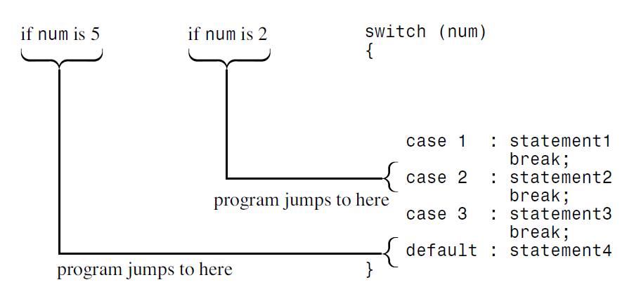
switch.cpp - menu program, example of switch use
// switch.cpp -- using the switch statement
#include <iostream>
using namespace std;
void showmenu(); // function prototypes
void report();
void comfort();
int main()
{
showmenu();
int choice;
cin >> choice;
while (choice != 5)
{
switch (choice)
{
case 1:
cout << "\a\n";
break;
case 2:
report();
break;
case 3:
cout << "The boss was in all day.\n";
break;
case 4:
comfort();
break;
default:
cout << "That's not a choice.\n";
}
showmenu();
cin >> choice;
}
cout << "Bye!\n";
return 0;
}
void showmenu()
{
cout << "Please enter 1, 2, 3, 4, or 5:\n"
"1) alarm 2) report\n"
"3) alibi 4) comfort\n"
"5) quit\n";
}
void report()
{
cout << "It's been an excellent week for business.\n"
"Sales are up 120%. Expenses are down 35%.\n";
}
void comfort()
{
cout << "Your employees think you are the finest CEO\n"
"in the industry. The board of directors think\n"
"you are the finest CEO in the industry.\n";
}
/*
Sample run of the executive menu program:
Please enter 1, 2, 3, 4, or 5:
1) alarm 2) report
3) alibi 4) comfort
5) quit
4
Your employees think you are the finest CEO
in the industry. The board of directors think
you are the finest CEO in the industry.
Please enter 1, 2, 3, 4, or 5:
1) alarm 2) report
3) alibi 4) comfort
5) quit
2
It's been an excellent week for business.
Sales are up 120%. Expenses are down 35%.
Please enter 1, 2, 3, 4, or 5:
1) alarm 2) report
3) alibi 4) comfort
5) quit
6
That's not a choice.
Please enter 1, 2, 3, 4, or 5:
1) alarm 2) report
3) alibi 4) comfort
5) quit
5
Bye!
For example, suppose you rewrote it using characters instead of integers as menu choices and switch labels. In that
case, you could use both an uppercase and a lowercase label for the same statements:
char choice;
cin >> choice;
while (choice != 'Q' && choice != 'q')
{
switch(choice)
{
case 'a':
case 'A': cout << "\a\n";
break;
case 'r':
case 'R': report();
break;
case 'l':
case 'L': cout << "The boss was in all day.\n";
break;
case 'c':
case 'C': comfort();
break;
default : cout << "That's not a choice.\n";
}
showmenu();
cin >> choice;
}
*/
enum.cpp - menu program with enum labels
// enum.cpp -- using enum
#include <iostream>
// create named constants for 0 - 6
enum {red, orange, yellow, green, blue, violet, indigo};
int main()
{
using namespace std;
cout << "Enter color code (0-6): ";
int code;
cin >> code;
while (code >= red && code <= indigo)
{
switch (code)
{
case red : cout << "Her lips were red.\n"; break;
case orange : cout << "Her hair was orange.\n"; break;
case yellow : cout << "Her shoes were yellow.\n"; break;
case green : cout << "Her nails were green.\n"; break;
case blue : cout << "Her sweatsuit was blue.\n"; break;
case violet : cout << "Her eyes were violet.\n"; break;
case indigo : cout << "Her mood was indigo.\n"; break;
}
cout << "Enter color code (0-6): ";
cin >> code;
}
cout << "Bye\n";
return 0;
}
/*
Here’s sample output from the program:
Enter color code (0-6): 3
Her nails were green.
Enter color code (0-6): 5
Her eyes were violet.
Enter color code (0-6): 2
Her shoes were yellow.
Enter color code (0-6): 8
Bye
*/
The break and continue Statements
break statement causes program execution to pass to the next statement
following the switch or the loop
continue statement is used in loops and causes a program to skip the
rest of the body of the loop
jump.cpp - using continue and break
#include <iostream>
const int ArSize = 80;
int main()
{
using namespace std;
char line[ArSize];
int spaces = 0;
cout << "Enter a line of text:\n";
cin.get(line, ArSize);
cout << "Complete line:\n"
<< line << endl;
cout << "Line through first period:\n";
for (int i = 0; line[i] != '\0'; i++)
{
cout << line[i]; // display character
if (line[i] == '.') // quit if it's a period
break;
if (line[i] != ' ') // skip rest of loop
continue;
spaces++;
}
cout << "\n"
<< spaces << " spaces\n";
cout << "Done.\n";
return 0;
}
/*
Enter a line of text:
Let's do lunch today. You can pay!
Complete line:
Let's do lunch today. You can pay!
Line through first period:
Let's do lunch today.
3 spaces
Done.
*/
cinfish.cpp - to terminate input before filling the array example
// cinfish.cpp -- non-numeric input terminates loop
#include <iostream>
const int Max = 5;
int main()
{
using namespace std;
// get data
double fish[Max];
cout << "Please enter the weights of your fish.\n";
cout << "You may enter up to " << Max
<< " fish <q to terminate>.\n";
cout << "fish #1: ";
int i = 0;
while (i < Max && cin >> fish[i])
{
if (++i < Max)
cout << "fish #" << i + 1 << ": ";
}
// calculate average
double total = 0.0;
for (int j = 0; j < i; j++)
total += fish[j];
// report results
if (i == 0)
cout << "No fish\n";
else
cout << total / i << " = average weight of "
<< i << " fish\n";
cout << "Done.\n";
return 0;
}
/*
Please enter the weights of your fish.
You may enter up to 5 fish <q to terminate>.
fish #1: 30
fish #2: 35
fish #3: 25
fish #4: 40
fish #5: q
32.5 = average weight of 4 fish
Done.
As mentioned earlier, some execution environments require additional code to keep the window
open so that you can see the output. In this example, because the input 'q' turns off
further input, the treatment is more elaborate:
if (!cin) // input terminated by non-numeric response
{
cin.clear(); // reset input
cin.get(); // read q
}
cin.get(); // read end of line after last input
cin.get(); // wait for user to press <Enter>
*/
cingolf.cpp - to terminate input before filling the array example and reset cin to accept new input.
// cingolf.cpp -- non-numeric input skipped
#include <iostream>
const int Max = 5;
int main()
{
using namespace std;
// get data
int golf[Max];
cout << "Please enter your golf scores.\n";
cout << "You must enter " << Max << " rounds.\n";
int i;
for (i = 0; i < Max; i++)
{
cout << "round #" << i + 1 << ": ";
while (!(cin >> golf[i]))
{
cin.clear(); // reset input
while (cin.get() != '\n')
continue; // get rid of bad input
cout << "Please enter a number: ";
}
}
// calculate average
double total = 0.0;
for (i = 0; i < Max; i++)
total += golf[i];
// report results
cout << total / Max << " = average score "
<< Max << " rounds\n";
return 0;
}
/*
Please enter your golf scores.
You must enter 5 rounds.
round #1: 88
round #2: 87
round #3: must i?
Please enter a number: 103
round #4: 94
round #5: 86
91.6 = average score 5 rounds
*/
File Input/Output
Write to file
You have to declare your own ofstream object, choosing a name for it and
associating it with a file.
Declaration:
Association with file (open() method requires a C-style string as its argument):
outFile.open("fish.txt"); // outFile used to write to the fish.txt file
char filename[50];
cin >> filename; // user specifies a name
fout.open(filename); // fout used to read specified file
Use created object (after you’ve declared an ofstream object and associated it with a file, you use it exactly as you would use cout):
double wt = 125.8;
outFile << wt; // write a number to fish.txt
char line[81] = "Objects are closer than they appear.";
fout << line << endl; // write a line of text
Main steps for using file output:
- Include the fstream header file.
- Create an ofstream object.
- Associate the ofstream object with a file.
- Use the ofstream object in the same manner you would use cout.
outfile.cpp - write data to file.
// outfile.cpp -- writing to a file
#include <iostream>
#include <fstream> // for file I/O
int main()
{
using namespace std;
char automobile[50];
int year;
double a_price;
double d_price;
ofstream outFile; // create object for output
outFile.open("carinfo.txt"); // associate with a file
cout << "Enter the make and model of automobile: ";
cin.getline(automobile, 50);
cout << "Enter the model year: ";
cin >> year;
cout << "Enter the original asking price: ";
cin >> a_price;
d_price = 0.913 * a_price;
// display information on screen with cout
cout << fixed;
cout.precision(2);
cout.setf(ios_base::showpoint);
cout << "Make and model: " << automobile << endl;
cout << "Year: " << year << endl;
cout << "Was asking $" << a_price << endl;
cout << "Now asking $" << d_price << endl;
// now do exact same things using outFile instead of cout
outFile << fixed;
outFile.precision(2);
outFile.setf(ios_base::showpoint);
outFile << "Make and model: " << automobile << endl;
outFile << "Year: " << year << endl;
outFile << "Was asking $" << a_price << endl;
outFile << "Now asking $" << d_price << endl;
outFile.close(); // done with file
return 0;
}
/*
Sample run of this program:
Enter the make and model of automobile: Flitz Perky
Enter the model year: 2009
Enter the original asking price: 13500
Make and model: Flitz Perky
Year: 2009
Was asking $13500.00
Now asking $12325.50
Notice that the close() method doesn’t require a filename.That’s because outFile
has already been associated with a particular file.
If you forget to close a file, the program will close it automatically
if the program terminates normally.
outFile can not only use << operator, but it can use the various formatting methods, such as setf() and
precision()
*/
Read from file
You have to declare your own ifstream object, choosing a name for it and
associating it with a file
Declaration:
Association with file (open() method requires a C-style string as its argument):
inFile.open("bowling.txt"); // inFile used to read bowling.txt file
char filename[50];
cin >> filename; // user specifies a name
fin.open(filename); // fin used to read specified file
Use created object:
double wt;
inFile >> wt; // read a number from bowling.txt
char line[81];
fin.getline(line, 81); // read a line of text
Check for nonexisting file (is_open() method)
For program below - write datsumafile.txt, that should be local,
or .\programs\datsumafile.txt if compiled in $PATH$
sumafile.cpp - reading double data from file.
// sumafile.cpp -- functions with an array argument
#include <iostream>
#include <fstream> // file I/O support
#include <cstdlib> // support for exit()
const int SIZE = 60;
int main()
{
using namespace std;
char filename[SIZE];
ifstream inFile; // object for handling file input
cout << "Enter name of data file: ";
cin.getline(filename, SIZE);
inFile.open(filename); // associate inFile with a file
if (!inFile.is_open()) // failed to open file
{
cout << "Could not open the file " << filename << endl;
cout << "Program terminating.\n";
exit(EXIT_FAILURE);
}
double value;
double sum = 0.0;
int count = 0; // number of items read
inFile >> value; // get first value
while (inFile.good()) // while input good and not at EOF
{
++count; // one more item read
sum += value; // calculate running total
inFile >> value; // get next value
}
if (inFile.eof())
cout << "End of file reached.\n";
else if (inFile.fail())
cout << "Input terminated by data mismatch.\n";
else
cout << "Input terminated for unknown reason.\n";
if (count == 0)
cout << "No data processed.\n";
else
{
cout << "Items read: " << count << endl;
cout << "Sum: " << sum << endl;
cout << "Average: " << sum / count << endl;
}
inFile.close(); // finished with the file
return 0;
}
/*
Here’s a sample run of the program in Listing 6.16:
Enter name of data file: scores.txt
End of file reached.
Items read: 12
Sum: 204.5
Average: 17.0417
*/
// standard file-reading loop design
inFile >> value; // get first value
while (inFile.good()) // while input good and not at EOF
{
// loop body goes here
inFile >> value; // get next value
}
inFile, when placed in a context in which a bool value is expected,
evaluates to inFile.good() — that is, to true or false, thus you
can make above code more concise:
// abbreviated file-reading loop design
// omit pre-loop input
while (inFile >> value) // read and test for success
{
// loop body goes here
// omit end-of-loop input
}
Chapter 7: C++’s Programming Modules
List of what you will learn
- Function basics
- Function prototypes
- Passing function arguments by value
- Designing functions to process arrays
- Using const pointer parameters
- Designing functions to process text strings
- Designing functions to process structures
- Designing functions to process objects of the string class
- Functions that call themselves (recursion)
- Pointers to functions
Functions
You can group functions into two categories: those that don’t have return values and those that do.
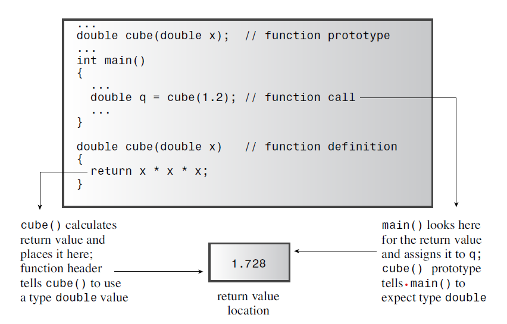
Prototyping
Prototype describes the function interface to the compiler.That is, it tells the compiler what type of return value, if any, the function has, and it tells the compiler the number and type of function arguments.
A function prototype is a statement, so it must have a terminating semicolon. The simplest way to get a prototype is to copy the function header from the function definition and add a semicolon.
protos.cpp - Example of using prototypes and function calls.
// protos.cpp -- using prototypes and function calls
#include <iostream>
void cheers(int); // prototype: no return value
double cube(double x); // prototype: returns a double
int main()
{
using namespace std;
cheers(5); // function call
cout << "Give me a number: ";
double side;
cin >> side;
double volume = cube(side); // function call
cout << "A " << side << "-foot cube has a volume of ";
cout << volume << " cubic feet.\n";
cheers(cube(2)); // prototype protection at work
return 0;
}
void cheers(int n)
{
using namespace std;
for (int i = 0; i < n; i++)
cout << "Cheers! ";
cout << endl;
}
double cube(double x)
{
return x * x * x;
}
/*
Cheers! Cheers! Cheers! Cheers! Cheers!
Give me a number: 5
A 5-foot cube has a volume of 125 cubic feet.
Cheers! Cheers! Cheers! Cheers! Cheers! Cheers! Cheers! Cheers!
Note that main() calls the type void function cheers() by using the function name
and arguments followed by a semicolon: cheers(5);.This is an example of a function call
statement.
*/
C++ Versus ANSI C Prototyping, ellypsis (...)
ANSI C borrowed prototyping from C++, but the two languages do have some differences. The most important is that ANSI C, to preserve compatibility with classic C, made prototyping optional, whereas C++ makes prototyping mandatory. For example, consider the following function declaration: In C++, leaving the parentheses empty is the same as using the keyword void within the parentheses. It means the function has no arguments. In ANSI C, leaving the parentheses empty means that you are declining to state what the arguments are. That is, it means you’re forgoing prototyping the argument list. The C++ equivalent for not identifying the argument list is to use an ellipsis: Normally this use of an ellipsis is needed only for interfacing with C functions having a variable number of arguments, such as printf().They greatly reduce the chances of program errors. In particular, prototypes ensure the following:
- The compiler correctly handles the function return value.
- The compiler checks that you use the correct number of function arguments.
- The compiler checks that you use the correct type of arguments. If you don’t, it converts the arguments to the correct type, if possible.
Prototyping takes place during compile time and is termed static type checking. Static type checking, as you’ve
just seen, catches many errors that are much more difficult to catch during runtime.
Passing function arguments
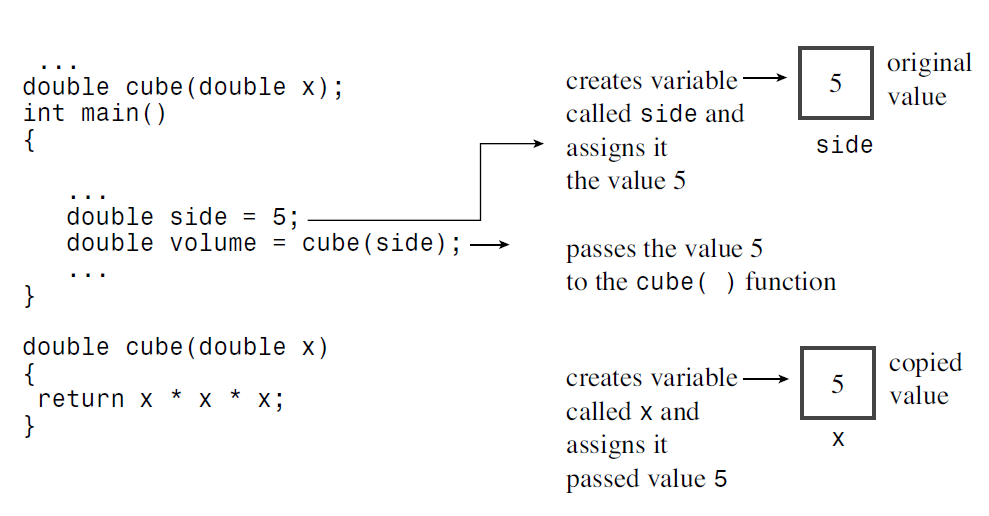
A variable that’s used to receive passed values is called a formal argument or formal parameter.
The value passed to the function is called the actual argument or actual parameter.
Variables, including parameters, declared within a function are private to the function. When a function is called, the computer allocates the memory needed for these variables. When the function terminates, the computer frees the memory that was used for those variables.
Prototype examples with many arguments:
void fifi(float a, float b) // declare each variable separately
void fufu(float a, b) // NOT acceptable
void n_chars(char c, int n); // prototype, style 1
void n_chars(char, int); // prototype, style 2
twoarg.cpp - a function with 2 arguments.
#include <iostream>
using namespace std;
void n_chars(char, int);
int main()
{
int times;
char ch;
cout << "Enter a character: ";
cin >> ch;
while (ch != 'q') // q to quit
{
cout << "Enter an integer: ";
cin >> times;
n_chars(ch, times); // function with two arguments
cout << "\nEnter another character or press the"
" q-key to quit: ";
cin >> ch;
}
cout << "The value of times is " << times << ".\n";
cout << "Bye\n";
return 0;
}
void n_chars(char c, int n) // displays c n times
{
while (n-- > 0) // continue until n reaches 0
cout << c;
}
/*
Enter a character: W
Enter an integer: 50
WWWWWWWWWWWWWWWWWWWWWWWWWWWWWWWWWWWWWWWWWWWWWWWWWW
Enter another character or press the q-key to quit: a
Enter an integer: 20
aaaaaaaaaaaaaaaaaaaa
Enter another character or press the q-key to quit: q
The value of times is 20.
Bye
*/
lotto.cpp - calculate probability of winning.
#include <iostream>
// Note: some implementations require double instead of long double
long double probability(unsigned numbers, unsigned picks);
int main()
{
using namespace std;
double total, choices;
cout << "Enter the total number of choices on the game card and\n"
"the number of picks allowed:\n";
while ((cin >> total >> choices) && choices <= total)
{
cout << "You have one chance in ";
cout << probability(total, choices); // compute the odds
cout << " of winning.\n";
cout << "Next two numbers (q to quit): ";
}
cout << "bye\n";
return 0;
}
// the following function calculates the probability of picking picks
// numbers correctly from numbers choices
long double probability(unsigned numbers, unsigned picks)
{
long double result = 1.0; // here come some local variables
long double n;
unsigned p;
for (n = numbers, p = picks; p > 0; n--, p--)
result = result * n / p;
return result;
}
/*
Enter the total number of choices on the game card and
the number of picks allowed:
49 6
You have one chance in 1.39838e+007 of winning.
Next two numbers (q to quit): 51 6
You have one chance in 1.80095e+007 of winning.
Next two numbers (q to quit): 38 6
You have one chance in 2.76068e+006 of winning.
Next two numbers (q to quit): q
bye
*/
Functions and Arrays
arr is not really an array; it’s a pointer!
The good news is that you can write the rest of the function just as if arr were an array.
The design decision to use array addresses as arguments saves the time and memory needed to copy an entire array.
arrfun1.cpp - functions with an array argument.
// arrfun1.cpp -- functions with an array argument
#include <iostream>
const int ArSize = 8;
int sum_arr(int arr[], int n); // prototype
int main()
{
using namespace std;
int cookies[ArSize] = {1, 2, 4, 8, 16, 32, 64, 128};
// some systems require preceding int with static to
// enable array initialization
int sum = sum_arr(cookies, ArSize);
cout << "Total cookies eaten: " << sum << "\n";
return 0;
}
// return the sum of an integer array
int sum_arr(int arr[], int n)
{
int total = 0;
for (int i = 0; i < n; i++)
total = total + arr[i];
return total;
}
/*
Total cookies eaten: 255
*/
arrfun2.cpp - functions with an array argument.
// arrfun2.cpp -- functions with an array argument
#include <iostream>
const int ArSize = 8;
int sum_arr(int arr[], int n);
// use std:: instead of using directive
int main()
{
int cookies[ArSize] = {1, 2, 4, 8, 16, 32, 64, 128};
// some systems require preceding int with static to
// enable array initialization
std::cout << cookies << " = array address, ";
// some systems require a type cast: unsigned (cookies)
std::cout << sizeof cookies << " = sizeof cookies\n";
int sum = sum_arr(cookies, ArSize);
std::cout << "Total cookies eaten: " << sum << std::endl;
sum = sum_arr(cookies, 3); // a lie
std::cout << "First three eaters ate " << sum << " cookies.\n";
sum = sum_arr(cookies + 4, 4); // another lie
std::cout << "Last four eaters ate " << sum << " cookies.\n";
return 0;
}
// return the sum of an integer array
int sum_arr(int arr[], int n)
{
int total = 0;
std::cout << arr << " = arr, ";
// some systems require a type cast: unsigned (arr)
std::cout << sizeof arr << " = sizeof arr\n";
for (int i = 0; i < n; i++)
total = total + arr[i];
return total;
}
/*
003EF9FC = array address, 32 = sizeof cookies
003EF9FC = arr, 4 = sizeof arr
Total cookies eaten: 255
003EF9FC = arr, 4 = sizeof arr
First three eaters ate 7 cookies.
003EFA0C = arr, 4 = sizeof arr
Last four eaters ate 240 cookies.
*/
arrfun3.cpp - functions with an array argument.
// arrfun3.cpp -- array functions and const
#include <iostream>
const int Max = 5;
// function prototypes
int fill_array(double ar[], int limit);
void show_array(const double ar[], int n); // don't change data
void revalue(double r, double ar[], int n);
int main()
{
using namespace std;
double properties[Max];
int size = fill_array(properties, Max);
show_array(properties, size);
if (size > 0)
{
cout << "Enter revaluation factor: ";
double factor;
while (!(cin >> factor)) // bad input
{
cin.clear();
while (cin.get() != '\n')
continue;
cout << "Bad input; Please enter a number: ";
}
revalue(factor, properties, size);
show_array(properties, size);
}
cout << "Done.\n";
cin.get();
cin.get();
return 0;
}
int fill_array(double ar[], int limit)
{
using namespace std;
double temp;
int i;
for (i = 0; i < limit; i++)
{
cout << "Enter value #" << (i + 1) << ": ";
cin >> temp;
if (!cin) // bad input
{
cin.clear();
while (cin.get() != '\n')
continue;
cout << "Bad input; input process terminated.\n";
break;
}
else if (temp < 0) // signal to terminate
break;
ar[i] = temp;
}
return i;
}
// the following function can use, but not alter,
// the array whose address is ar
void show_array(const double ar[], int n)
{
using namespace std;
for (int i = 0; i < n; i++)
{
cout << "Property #" << (i + 1) << ": $";
cout << ar[i] << endl;
}
}
// multiplies each element of ar[] by r
void revalue(double r, double ar[], int n)
{
for (int i = 0; i < n; i++)
ar[i] *= r;
}
/*
Enter value #1: 100000
Enter value #2: 80000
Enter value #3: 222000
Enter value #4: 240000
Enter value #5: 118000
Property #1: $100000
Property #2: $80000
Property #3: $222000
Property #4: $240000
Property #5: $118000
Enter revaluation factor: 0.8
Property #1: $80000
Property #2: $64000
Property #3: $177600
Property #4: $192000
Property #5: $94400
Done.
Enter value #1: 200000
Enter value #2: 84000
Enter value #3: 160000
Enter value #4: -2
Property #1: $200000
Property #2: $84000
Property #3: $160000
Enter reevaluation factor: 1.20
Property #1: $240000
Property #2: $100800
Property #3: $192000
Done.
*/
arrfun4.cpp - functions with an array range.
// arrfun4.cpp -- functions with an array range
#include <iostream>
const int ArSize = 8;
int sum_arr(const int *begin, const int *end);
int main()
{
using namespace std;
int cookies[ArSize] = {1, 2, 4, 8, 16, 32, 64, 128};
// some systems require preceding int with static to
// enable array initialization
int sum = sum_arr(cookies, cookies + ArSize);
cout << "Total cookies eaten: " << sum << endl;
sum = sum_arr(cookies, cookies + 3); // first 3 elements
cout << "First three eaters ate " << sum << " cookies.\n";
sum = sum_arr(cookies + 4, cookies + 8); // last 4 elements
cout << "Last four eaters ate " << sum << " cookies.\n";
return 0;
}
// return the sum of an integer array
int sum_arr(const int *begin, const int *end)
{
const int *pt;
int total = 0;
for (pt = begin; pt != end; pt++)
total = total + *pt;
return total;
}
/*
Total cookies eaten: 255
First three eaters ate 7 cookies.
Last four eaters ate 240 cookies.
*/
C++ interprets an array name as the address of its first element:
This suggests that the correct function header should be this:
int sum_arr(int * arr, int n) // arr = array name, n = size
arr[i] == *(ar + i) // values in two notations
&arr[i] == ar + i // addresses in two notations
// You can also lie about where the array starts when calling:
sum = sum_arr(cookies + 4, 4);
sum = sum_arr(cookies, cookies + 3); // first 3 elements - array ranges
// Protecting array with const to keep a function from accidentally altering the contents of
an array argument,
void show_array(const double ar[], int n);
Remember that adding one to a pointer, including an array name, actually adds a value equal to the size, in bytes, of the type to which the pointer points
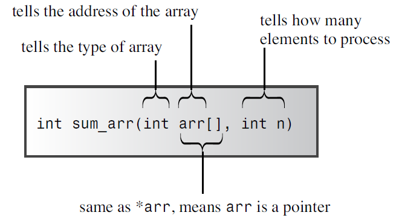
Pointers and const
Pointers of variables can't be addressed to const values.
int age = 39;
const int * pt = &age;
*pt += 1; // INVALID because pt points to a const int
cin >> *pt; // INVALID for the same reason
*pt = 20; // INVALID because pt points to a const int
age = 20; // VALID because age is not declared to be const
const float g_earth = 9.80;
const float * pe = &g_earth; // VALID
const float g_moon = 1.63;
float * pm = &g_moon; // INVALID
Using const When You Can
There are two strong reasons to declare pointer arguments as pointers to constant data: - It protects you against programming errors that inadvertently alter data. - Using `const` allows a function to process both `const` and non-`const` actual arguments, whereas a function that omits `const` in the prototype can accept only non-`const` data.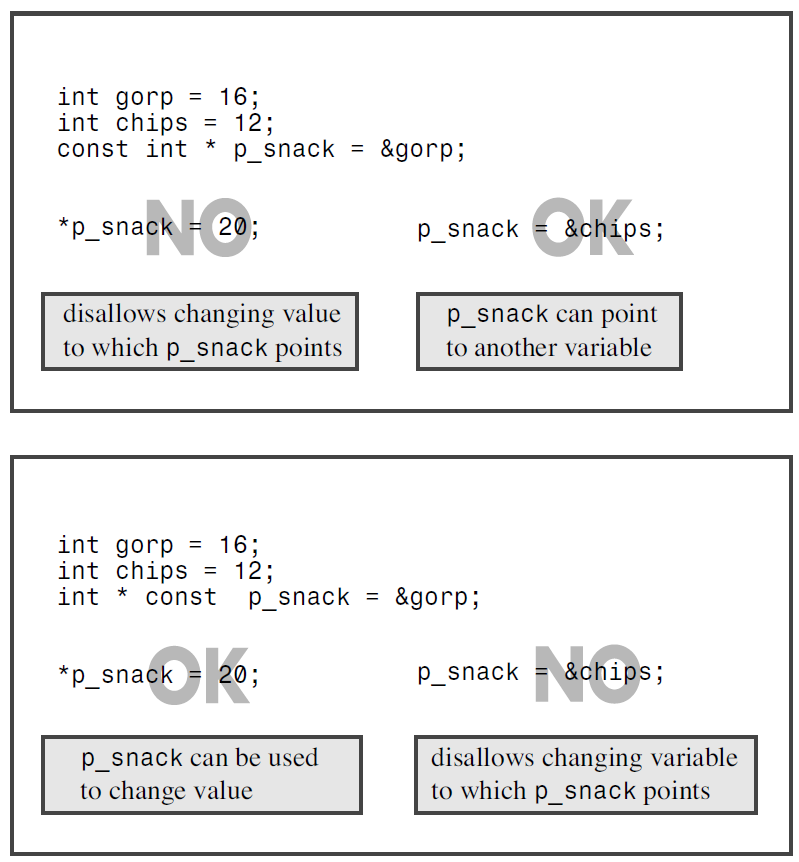
Functions and Two-Dimensional Arrays
int data[3][4] = {{1,2,3,4}, {9,8,7,6}, {2,4,6,8}};
int total = sum(data, 3);
// data is pointer-to-array-of-four-int,
// so an appropriate prototype would be this:
int sum(int (*ar2)[4], int size);
// The simplest way is to use brackets twice, as in ar2[r][c].
total += ar2[r][c];
// But it is possible, if ungainly, to use the * operator twice
ar2[r][c] == *(*(ar2 + r) + c) // same thing
// To understand this, you can work out the
// meaning of the subexpressions from the inside out:
ar2 // pointer to first row of an array of 4 int
ar2 + r // pointer to row r (an array of 4 int)
*(ar2 + r) // row r (an array of 4 int, hence the name of an array,
// thus a pointer to the first int in the row, i.e., ar2[r]
*(ar2 +r) + c // pointer int number c in row r, i.e., ar2[r] + c
*(*(ar2 + r) + c // value of int number c in row r, i.e. ar2[r][c]
Functions and C-Style Strings
You have three choices for representing a string:
- An array of char
- A quoted string constant (also called a string literal)
- A pointer-to-char set to the address of a string
char ghost[15] = "galloping";
char * str = "galumphing";
int n1 = strlen(ghost); // ghost is &ghost[0]
int n2 = strlen(str); // pointer to char
int n3 = strlen("gamboling"); // address of string
strgfun.cpp - functions with a string argument.
#include <iostream>
unsigned int c_in_str(const char *str, char ch);
int main()
{
using namespace std;
char mmm[15] = "minimum"; // string in an array
// some systems require preceding char with static to
// enable array initialization
char *wail = "ululate"; // wail points to string
unsigned int ms = c_in_str(mmm, 'm');
unsigned int us = c_in_str(wail, 'u');
cout << ms << " m characters in " << mmm << endl;
cout << us << " u characters in " << wail << endl;
return 0;
}
// this function counts the number of ch characters
// in the string str
unsigned int c_in_str(const char *str, char ch)
{
unsigned int count = 0;
while (*str) // quit when *str is '\0'
{
if (*str == ch)
count++;
str++; // move pointer to next char
}
return count;
}
/*
3 m characters in minimum
2 u characters in ululate
*/
strgback.cpp - a function that returns a pointer to char.
#include <iostream>
char *buildstr(char c, int n); // prototype
int main()
{
using namespace std;
int times;
char ch;
cout << "Enter a character: ";
cin >> ch;
cout << "Enter an integer: ";
cin >> times;
char *ps = buildstr(ch, times);
cout << ps << endl;
delete[] ps; // free memory
ps = buildstr('+', 20); // reuse pointer
cout << ps << "-DONE-" << ps << endl;
delete[] ps; // free memory
return 0;
}
// builds string made of n c characters
char *buildstr(char c, int n)
{
char *pstr = new char[n + 1];
pstr[n] = '\0'; // terminate string
while (n-- > 0)
pstr[n] = c; // fill rest of string
return pstr;
}
/*
Enter a character: V
Enter an integer: 46
VVVVVVVVVVVVVVVVVVVVVVVVVVVVVVVVVVVVVVVVVVVVVV
++++++++++++++++++++-DONE-++++++++++++++++++++
*/
Functions and Structures
Defining the structure is simple:
struct travel_time
{
int hours;
int mins;
};
// Next, consider the prototype for a sum() function that
// returns the sum of two such structures
travel_time sum(travel_time t1, travel_time t2);
travel.cpp - using structures with functions.
#include <iostream>
struct travel_time
{
int hours;
int mins;
};
const int Mins_per_hr = 60;
travel_time sum(travel_time t1, travel_time t2);
void show_time(travel_time t);
int main()
{
using namespace std;
travel_time day1 = {5, 45}; // 5 hrs, 45 min
travel_time day2 = {4, 55}; // 4 hrs, 55 min
travel_time trip = sum(day1, day2);
cout << "Two-day total: ";
show_time(trip);
travel_time day3 = {4, 32};
cout << "Three-day total: ";
show_time(sum(trip, day3));
return 0;
}
travel_time sum(travel_time t1, travel_time t2)
{
travel_time total;
total.mins = (t1.mins + t2.mins) % Mins_per_hr;
total.hours = t1.hours + t2.hours +
(t1.mins + t2.mins) / Mins_per_hr;
return total;
}
void show_time(travel_time t)
{
using namespace std;
cout << t.hours << " hours, "
<< t.mins << " minutes\n";
}
/*
Two-day total: 10 hours, 40 minutes
Three-day total: 15 hours, 12 minutes
*/
strctfun.cpp - functions with a structure argument.
#include <iostream>
#include <cmath>
// structure declarations
struct polar
{
double distance; // distance from origin
double angle; // direction from origin
};
struct rect
{
double x; // horizontal distance from origin
double y; // vertical distance from origin
};
// prototypes
polar rect_to_polar(rect xypos);
void show_polar(polar dapos);
int main()
{
using namespace std;
rect rplace;
polar pplace;
cout << "Enter the x and y values: ";
while (cin >> rplace.x >> rplace.y) // slick use of cin
{
pplace = rect_to_polar(rplace);
show_polar(pplace);
cout << "Next two numbers (q to quit): ";
}
cout << "Done.\n";
return 0;
}
// convert rectangular to polar coordinates
polar rect_to_polar(rect xypos)
{
using namespace std;
polar answer;
answer.distance =
sqrt(xypos.x * xypos.x + xypos.y * xypos.y);
answer.angle = atan2(xypos.y, xypos.x);
return answer; // returns a polar structure
}
// show polar coordinates, converting angle to degrees
void show_polar(polar dapos)
{
using namespace std;
const double Rad_to_deg = 57.29577951;
cout << "distance = " << dapos.distance;
cout << ", angle = " << dapos.angle * Rad_to_deg;
cout << " degrees\n";
}
/*
Enter the x and y values: 30 40
distance = 50, angle = 53.1301 degrees
Next two numbers (q to quit): -100 100
distance = 141.421, angle = 135 degrees
Next two numbers (q to quit): q
*/
Passing Structure Addresses
Suppose you want to save time and space by passing the address of a structure instead of passing the entire structure.
You need to make three changes:
- When calling the function, pass it the address of the structure (
&pplace) rather than the structure itself (pplace). - Declare the formal parameter to be a pointer-to-polar—that is, type polar
*. Because the function shouldn’t modify the structure, use theconstmodifier. - Because the formal parameter is a pointer instead of a structure, use the indirect membership operator (
->) rather than the membership operator (dot).
strctptr.cpp - functions with a structure argument.
#include <iostream>
#include <cmath>
// structure templates
struct polar
{
double distance; // distance from origin
double angle; // direction from origin
};
struct rect
{
double x; // horizontal distance from origin
double y; // vertical distance from origin
};
// prototypes
void rect_to_polar(const rect *pxy, polar *pda);
void show_polar(const polar *pda);
int main()
{
using namespace std;
rect rplace;
polar pplace;
cout << "Enter the x and y values: ";
while (cin >> rplace.x >> rplace.y)
{
rect_to_polar(&rplace, &pplace); // pass addresses
show_polar(&pplace); // pass address
cout << "Next two numbers (q to quit): ";
}
cout << "Done.\n";
return 0;
}
// show polar coordinates, converting angle to degrees
void show_polar(const polar *pda)
{
using namespace std;
const double Rad_to_deg = 57.29577951;
cout << "distance = " << pda->distance;
cout << ", angle = " << pda->angle * Rad_to_deg;
cout << " degrees\n";
}
// convert rectangular to polar coordinates
void rect_to_polar(const rect *pxy, polar *pda)
{
using namespace std;
pda->distance =
sqrt(pxy->x * pxy->x + pxy->y * pxy->y);
pda->angle = atan2(pxy->y, pxy->x);
}
Functions and string Class Objects
string class object is more closely related to a structure than to an array.
- you can assign a structure to another structure and an object to another object
- You can pass a structure as a complete entity to a function, and you can pass an object as a complete entity.
- you can declare a one-dimensional array of
stringobjects instead of a two-dimensional array ofchar.
topfive.cpp - handling an array of string objects.
#include <iostream>
#include <string>
using namespace std;
const int SIZE = 5;
void display(const string sa[], int n);
int main()
{
string list[SIZE]; // an array holding 5 string object
cout << "Enter your " << SIZE << " favorite astronomical sights:\n";
for (int i = 0; i < SIZE; i++)
{
cout << i + 1 << ": ";
getline(cin, list[i]);
}
cout << "Your list:\n";
display(list, SIZE);
return 0;
}
void display(const string sa[], int n)
{
for (int i = 0; i < n; i++)
cout << i + 1 << ": " << sa[i] << endl;
}
/*
Enter your 5 favorite astronomical sights:
1: Orion Nebula
2: M13
3: Saturn
4: Jupiter
5: Moon
Your list:
1: Orion Nebula
2: M13
3: Saturn
4: Jupiter
5: Moon
*/
Functions and array Objects
Declared array object
std::array<double, 4> expenses;
show(expenses); // function display the contents
show(&expenses); // if we want a function that modifies object
// Prototypes
void show(std::array<double, 4> da); // da an object
void fill(std::array<double, 4> * pa); // pa a pointer to an object
arrobj.cpp - functions with a structure argument.
// arrobj.cpp -- functions with array objects (C++11)
#include <iostream>
#include <array>
#include <string>
// constant data
const int Seasons = 4;
const std::array<std::string, Seasons> Snames =
{"Spring", "Summer", "Fall", "Winter"};
// function to modify array object
void fill(std::array<double, Seasons> *pa);
// function that uses array object without modifying it
void show(std::array<double, Seasons> da);
int main()
{
std::array<double, Seasons> expenses;
fill(&expenses);
show(expenses);
return 0;
}
void fill(std::array<double, Seasons> *pa)
{
using namespace std;
for (int i = 0; i < Seasons; i++)
{
cout << "Enter " << Snames[i] << " expenses: ";
cin >> (*pa)[i];
}
}
void show(std::array<double, Seasons> da)
{
using namespace std;
double total = 0.0;
cout << "\nEXPENSES\n";
for (int i = 0; i < Seasons; i++)
{
cout << Snames[i] << ": $" << da[i] << endl;
total += da[i];
}
cout << "Total Expenses: $" << total << endl;
}
/*
Enter Spring expenses: 212
Enter Summer expenses: 256
Enter Fall expenses: 208
Enter Winter expenses: 244
EXPENSES
Spring: $212
Summer: $256
Fall: $208
Winter: $244
Total: $920
*/
Recursion
C++ function can call itself. This ability is termed recursion
Recursive function example
// Single Recursive Call
void recurs(argumentlist)
{
statements1
if (test)
recurs(arguments)
statements2
}
recur.cpp - using recursion (single).
#include <iostream>
void countdown(int n);
int main()
{
countdown(4); // call the recursive function
return 0;
}
void countdown(int n)
{
using namespace std;
cout << "Counting down ... " << n << endl;
if (n > 0)
countdown(n - 1); // function calls itself
cout << n << ": Kaboom!\n";
}
/*
Counting down ... 4 ‹level 1; adding levels of recursion
Counting down ... 3 ‹level 2
Counting down ... 2 ‹level 3
Counting down ... 1 ‹level 4
Counting down ... 0 ‹level 5; final recursive call
0: Kaboom! ‹level 5; beginning to back out
1: Kaboom! ‹level 4
2: Kaboom! ‹level 3
3: Kaboom! ‹level 2
4: Kaboom! ‹level 1
cout << "Counting down ... " << n << " (n at " << &n << ")" << endl;
...
cout << n << ": Kaboom!"; << " (n at " << &n << ")" << endl;
Doing so produces output like the following:
Counting down ... 4 (n at 0012FE0C)
Counting down ... 3 (n at 0012FD34)
Counting down ... 2 (n at 0012FC5C)
Counting down ... 1 (n at 0012FB84)
Counting down ... 0 (n at 0012FAAC)
0: Kaboom! (n at 0012FAAC)
1: Kaboom! (n at 0012FB84)
2: Kaboom! (n at 0012FC5C)
3: Kaboom! (n at 0012FD34)
4: Kaboom! (n at 0012FE0C)
*/
This recursive approach below is sometimes called the divide-and-conquer strategy.
ruler.cpp - using recursion to subdivide a ruler.
#include <iostream>
const int Len = 66;
const int Divs = 6;
void subdivide(char ar[], int low, int high, int level);
int main()
{
char ruler[Len];
int i;
for (i = 1; i < Len - 2; i++)
ruler[i] = ' ';
ruler[Len - 1] = '\0';
int max = Len - 2;
int min = 0;
ruler[min] = ruler[max] = '|';
std::cout << ruler << std::endl;
for (i = 1; i <= Divs; i++)
{
subdivide(ruler, min, max, i);
std::cout << ruler << std::endl;
for (int j = 1; j < Len - 2; j++)
ruler[j] = ' '; // reset to blank ruler
}
return 0;
}
void subdivide(char ar[], int low, int high, int level)
{
if (level == 0)
return;
int mid = (high + low) / 2;
ar[mid] = '|';
subdivide(ar, low, mid, level - 1);
subdivide(ar, mid, high, level - 1);
}
/*
| |
| | |
| | | | |
| | | | | | | | |
| | | | | | | | | | | | | | | | |
| | | | | | | | | | | | | | | | | | | | | | | | | | | | | | | | |
|||||||||||||||||||||||||||||||||||||||||||||||||||||||||||||||||
*/
Pointers to Functions
it’s possible to write a function that takes the address of another function as an argument. That enables the first function to find the second function and run it.
You need to be able to do the following:
- Obtain the address of a function.
- Declare a pointer to a function.
- Use a pointer to a function to invoke the function.
Obtaining the address of a function
It is simple. You just use the function name without trailing parentheses
process(think); // passes address of think() to process()
thought(think()); // passes return value of think() to thought()
Declaring a Pointer to a Function
Pointer to a function has to specify to what type of function the pointer point
double pam(int); // prototype of function to use
double (*pf)(int); // pf points to a function that takes
// one int argument and that
// returns type double
Tip
In general, to declare a pointer to a particular kind of function, you can first write a prototype for a regular function of the desired kind and then replace the function name with an expression in the form `(*pf)`. In this case, `pf` is a pointer to a function of that type.double (*pf)(int); // pf points to a function that returns double
double *pf(int); // pf() a function that returns a pointer-to-double
double pam(int);
double (*pf)(int);
pf = pam; // pf now points to the pam() function
double ned(double);
int ted(int);
double (*pf)(int);
pf = ned; // invalid -- mismatched signature
pf = ted; // invalid -- mismatched return types
// prototype:
void estimate(int lines, double (*pf)(int));
estimate(50, pam); // function call telling estimate() to use pam()
// Using a Pointer to Invoke a Function
double pam(int);
double (*pf)(int);
pf = pam; // pf now points to the pam() function
double x = pam(4); // call pam() using the function name
double y = (*pf)(5); // call pam() using the pointer pf
double y = pf(5); // also call pam() using the pointer pf
fun_ptr.cpp - pointers to functions.
#include <iostream>
double betsy(int);
double pam(int);
// second argument is pointer to a type double function that
// takes a type int argument
void estimate(int lines, double (*pf)(int));
int main()
{
using namespace std;
int code;
cout << "How many lines of code do you need? ";
cin >> code;
cout << "Here's Betsy's estimate:\n";
estimate(code, betsy);
cout << "Here's Pam's estimate:\n";
estimate(code, pam);
return 0;
}
double betsy(int lns)
{
return 0.05 * lns;
}
double pam(int lns)
{
return 0.03 * lns + 0.0004 * lns * lns;
}
void estimate(int lines, double (*pf)(int))
{
using namespace std;
cout << lines << " lines will take ";
cout << (*pf)(lines) << " hour(s)\n";
}
/*
How many lines of code do you need? 30
Here's Betsy's estimate:
30 lines will take 1.5 hour(s)
Here's Pam's estimate:
30 lines will take 1.26 hour(s)
*/
const double * f1(const double ar[], int n);
const double * f2(const double [], int);
const double * f3(const double *, int);
The signatures might look different, but they are the same.
const double * (*p1)(const double *, int);
//This can be combined with initialization:
const double * (*p1)(const double *, int) = f1;
auto p2 = f2; // C++11 automatic type deduction
*pd[3] // an array of 3 pointers
(*pd)[3] // a pointer to an array of 3 elements
**&pa == *pa == pa[0]
arfupt.cpp - an array of function pointers.
#include <iostream>
// various notations, same signatures
const double *f1(const double ar[], int n);
const double *f2(const double[], int);
const double *f3(const double *, int);
int main()
{
using namespace std;
double av[3] = {1112.3, 1542.6, 2227.9};
// pointer to a function
const double *(*p1)(const double *, int) = f1;
auto p2 = f2; // C++11 automatic type deduction
// pre-C++11 can use the following code instead
// const double *(*p2)(const double *, int) = f2;
cout << "Using pointers to functions:\n";
cout << " Address Value\n";
cout << (*p1)(av, 3) << ": " << *(*p1)(av, 3) << endl;
cout << p2(av, 3) << ": " << *p2(av, 3) << endl;
// pa an array of pointers
// auto doesn't work with list initialization
const double *(*pa[3])(const double *, int) = {f1, f2, f3};
// but it does work for initializing to a single value
// pb a pointer to first element of pa
auto pb = pa;
// pre-C++11 can use the following code instead
// const double *(**pb)(const double *, int) = pa;
cout << "\nUsing an array of pointers to functions:\n";
cout << " Address Value\n";
for (int i = 0; i < 3; i++)
cout << pa[i](av, 3) << ": " << *pa[i](av, 3) << endl;
cout << "\nUsing a pointer to a pointer to a function:\n";
cout << " Address Value\n";
for (int i = 0; i < 3; i++)
cout << pb[i](av, 3) << ": " << *pb[i](av, 3) << endl;
// what about a pointer to an array of function pointers
cout << "\nUsing pointers to an array of pointers:\n";
cout << " Address Value\n";
// easy way to declare pc
auto pc = &pa;
// pre-C++11 can use the following code instead
// const double *(*(*pc)[3])(const double *, int) = &pa;
cout << (*pc)[0](av, 3) << ": " << *(*pc)[0](av, 3) << endl;
// hard way to declare pd
const double *(*(*pd)[3])(const double *, int) = &pa;
// store return value in pdb
const double *pdb = (*pd)[1](av, 3);
cout << pdb << ": " << *pdb << endl;
// alternative notation
cout << (*(*pd)[2])(av, 3) << ": " << *(*(*pd)[2])(av, 3) << endl;
// cin.get();
return 0;
}
// some rather dull functions
const double *f1(const double *ar, int n)
{
return ar;
}
const double *f2(const double ar[], int n)
{
return ar + 1;
}
const double *f3(const double ar[], int n)
{
return ar + 2;
}
/*
Using pointers to functions:
Address Value
002AF9E0: 1112.3
002AF9E8: 1542.6
Using an array of pointers to functions:
Address Value
002AF9E0: 1112.3
002AF9E8: 1542.6
002AF9F0: 2227.9
Using a pointer to a pointer to a function:
Address Value
002AF9E0: 1112.3
002AF9E8: 1542.6
002AF9F0: 2227.9
Using pointers to an array of pointers:
Address Value
002AF9E0: 1112.3
002AF9E8: 1542.6
002AF9F0: 2227.9
*/
Appreciating auto
One of the goals of C++11 is to make C++ easier to use, letting the programmer concentrate more on design and less on details. Listing 7.19 surely illustrates this point: The automatic type deduction feature reflects a philosophical shift in the role of the compiler. In C++98, the compiler uses its knowledge to tell you when you are wrong. In C++11, at least with this feature, it uses its knowledge to help you get the right declaration. There is a potential drawback. Automatic type deduction ensures that the type of the variable matches the type of the initializer, but it still is possible that you might provide the wrong type of initializer: This declaration would make pc match the type of *pa, and that would result in a compiletime error when Listing 7.19 later uses pc, assuming that it is of the same type as &pa.Simplifying with typedef
typedef double real; // makes real another name for double
// you can do this to make p_fun an alias for the function pointer type
typedef const double *(*p_fun)(const double *, int); // p_fun now a type name
p_fun p1 = f1; // p1 points to the f1() function
p_fun pa[3] = {f1,f2,f3}; // pa an array of 3 function pointers
p_fun (*pd)[3] = &pa; // pd points to an array of 3 function pointers
Chapter 8: Adventures in Functions
List of what you will learn
Inline functions
Inline keyword tells the compiler to consider function for inlining. If the function is small and called frequently, inlining it can lead to
performance improvements because the overhead of a function call is avoided.
Inlining - mean that the code of the function is inserted at the point where the function is called, instead of performing a regular function call.
This can potentially improve performance by avoiding the overhead of a function call, but it might increase the size of the binary file because the
function's code could be inserted in multiple places
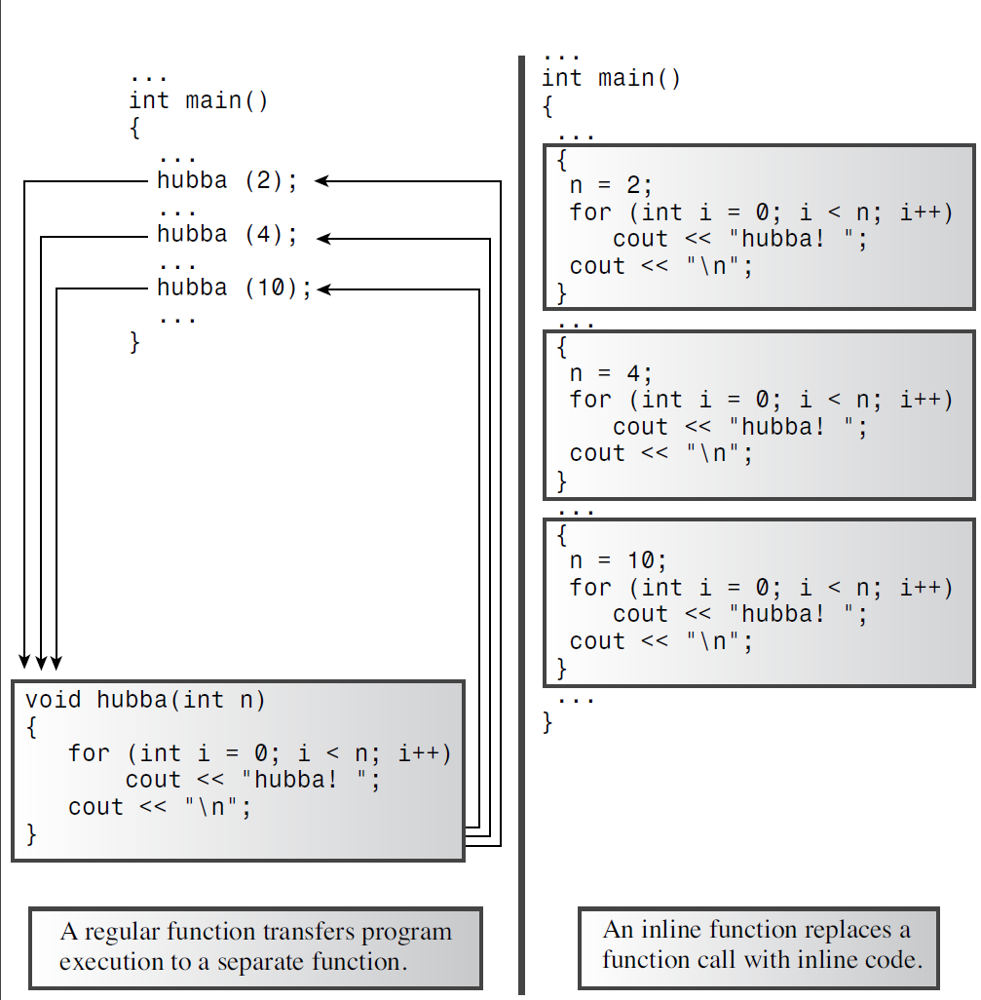
inline.cpp - using an inline function.
#include <iostream>
// an inline function definition
inline double square(double x) { return x * x; }
int main()
{
using namespace std;
double a, b;
double c = 13.0;
a = square(5.0);
b = square(4.5 + 7.5); // can pass expressions
cout << "a = " << a << ", b = " << b << "\n";
cout << "c = " << c;
cout << ", c squared = " << square(c++) << "\n";
cout << "Now c = " << c << "\n";
return 0;
}
/*
a = 25, b = 144
c = 13, c squared = 169
Now c = 14
*/
Inline Versus Macros
Reference Variables
reference is a name that acts as an alias, or an alternative name, for a previously defined variable. For
example, if you make twain a reference to the clemens variable, you can use twain and clemens interchangeably
to represent that variable.
Unlike po0inters you can’t declare the reference and then assign it a value later the way you can with a pointer:
firstref.cpp - defining and using a reference.
#include <iostream>
int main()
{
using namespace std;
int rats = 101;
int &rodents = rats; // rodents is a reference
cout << "rats = " << rats;
cout << ", rodents = " << rodents << endl;
rodents++;
cout << "rats = " << rats;
cout << ", rodents = " << rodents << endl;
// some implementations require type casting the following
// addresses to type unsigned
cout << "rats address = " << &rats;
cout << ", rodents address = " << &rodents << endl;
return 0;
}
secref.cpp - defining and using a reference.
#include <iostream>
int main()
{
using namespace std;
int rats = 101;
int &rodents = rats; // rodents is a reference
cout << "rats = " << rats;
cout << ", rodents = " << rodents << endl;
cout << "rats address = " << &rats;
cout << ", rodents address = " << &rodents << endl;
int bunnies = 50;
rodents = bunnies; // can we change the reference?
cout << "bunnies = " << bunnies;
cout << ", rats = " << rats;
cout << ", rodents = " << rodents << endl;
cout << "bunnies address = " << &bunnies;
cout << ", rodents address = " << &rodents << endl;
return 0;
}
/*
rats = 101, rodents = 101
rats address = 0x0065fd44, rodents address = 0x0065fd44
bunnies = 50, rats = 50, rodents = 50
bunnies address = 0x0065fd48, rodents address = 0x0065fd4
*/
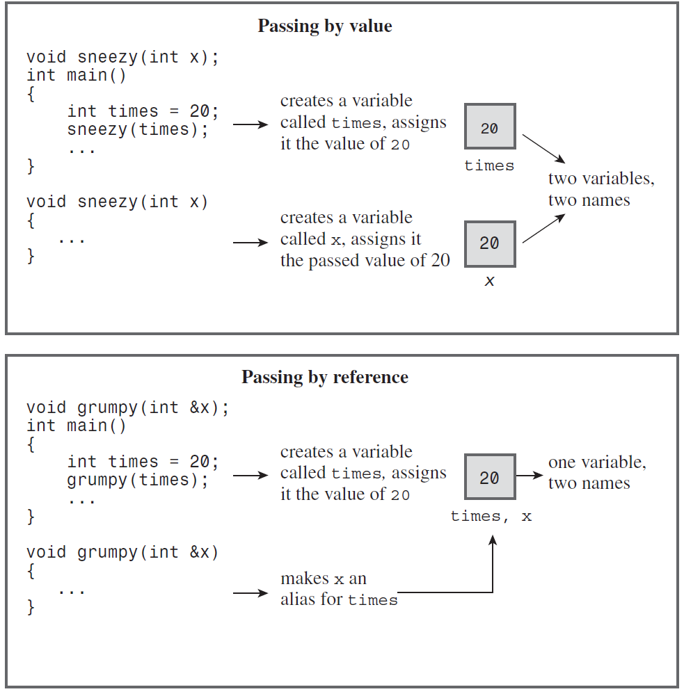
swaps.cpp - swapping with references and with pointers.
#include <iostream>
void swapr(int &a, int &b); // a, b are aliases for ints
void swapp(int *p, int *q); // p, q are addresses of ints
void swapv(int a, int b); // a, b are new variables
int main()
{
using namespace std;
int wallet1 = 300;
int wallet2 = 350;
cout << "wallet1 = $" << wallet1;
cout << " wallet2 = $" << wallet2 << endl;
cout << "Using references to swap contents:\n";
swapr(wallet1, wallet2); // pass variables
cout << "wallet1 = $" << wallet1;
cout << " wallet2 = $" << wallet2 << endl;
cout << "Using pointers to swap contents again:\n";
swapp(&wallet1, &wallet2); // pass addresses of variables
cout << "wallet1 = $" << wallet1;
cout << " wallet2 = $" << wallet2 << endl;
cout << "Trying to use passing by value:\n";
swapv(wallet1, wallet2); // pass values of variables
cout << "wallet1 = $" << wallet1;
cout << " wallet2 = $" << wallet2 << endl;
return 0;
}
void swapr(int &a, int &b) // use references
{
int temp;
temp = a; // use a, b for values of variables
a = b;
b = temp;
}
void swapp(int *p, int *q) // use pointers
{
int temp;
temp = *p; // use *p, *q for values of variables
*p = *q;
*q = temp;
}
void swapv(int a, int b) // try using values
{
int temp;
temp = a; // use a, b for values of variables
a = b;
b = temp;
}
/*
wallet1 = $300 wallet2 = $350 << original values
Using references to swap contents:
wallet1 = $350 wallet2 = $300 << values swapped
Using pointers to swap contents again:
wallet1 = $300 wallet2 = $350 << values swapped again
Trying to use passing by value:
wallet1 = $300 wallet2 = $350 << swap failed
*/
cubes.cpp - regular and reference arguments.
// cubes.cpp -- regular and reference arguments
#include <iostream>
double cube(double a);
double refcube(double &ra);
int main()
{
using namespace std;
double x = 3.0;
cout << cube(x);
cout << " = cube of " << x << endl;
cout << refcube(x);
cout << " = cube of " << x << endl;
return 0;
}
double cube(double a)
{
a *= a * a;
return a;
}
double refcube(double &ra)
{
ra *= ra * ra;
return ra;
}
/*
27 = cube of 3
27 = cube of 27
*/
Temporary Variables, Reference Arguments, and const
First, when is a temporary variable created? Provided that the reference parameter is a const, the compiler generates a temporary variable in two kinds of situations:
- When the actual argument is the correct type but isn’t an lvalue
- When the actual argument is of the wrong type, but it’s of a type that can be converted to the correct type
An argument that’s an lvalue is a data object that can be referenced
by address. For example, a variable, an array element, a structure member, a reference, and
a dereferenced pointer are lvalues.
Non-lvalues include literal constants (aside from quoted strings,
which are represented by their addresses) and expressions with multiple terms.
Regular variable can be further characterized as being a
modifiable lvalue and the const variable as a non-modifiable lvalue.
double refcube(const double &ra)
{
return ra * ra * ra;
}
double side = 3.0;
double * pd = &side;
double & rd = side;
long edge = 5L;
double lens[4] = { 2.0, 5.0, 10.0, 12.0};
double c1 = refcube(side); // ra is side
double c2 = refcube(lens[2]); // ra is lens[2]
double c3 = refcube(rd); // ra is rd is side
double c4 = refcube(*pd); // ra is *pd is side
double c5 = refcube(edge); // ra is temporary variable
double c6 = refcube(7.0); // ra is temporary variable
double c7 = refcube(side + 10.0); // ra is temporary variable
Note
Use `const` When You Can
C++11 introduces a second kind of reference, called an rvalue reference, that can refer to an rvalue. It’s declared using &&:
double && rref = std::sqrt(36.00); // not allowed for double &
double j = 15.0;
double && jref = 2.0* j + 18.5; // not allowed for double &
std::cout << rref << '\n'; // display 6.0
std::cout << jref << '\n'; // display 48.5;
The rvalue reference was introduced mainly to help library designers provide more
efficient implementations of certain operations. Chapter 18,“Visiting will the New C++
Standard,” discusses how rvalue references are used to implement an approach called move
semantics.The original reference type (the one declared using a single &) is now called an
lvalue reference.
Using References with a Structure
References work wonderfully with structures and classes
References were introduced primarily for use with these types, not for use with the
basic built-in types.
Suppose we have the following definition of a structure:
Then a function using a reference to this type could be prototyped as follows:
If the intent is that the function doesn’t alter the structure, use const:
strc_ref.cpp - using structure references.
#include <iostream>
#include <string>
struct free_throws
{
std::string name;
int made;
int attempts;
float percent;
};
void display(const free_throws &ft);
void set_pc(free_throws &ft);
free_throws &accumulate(free_throws &target, const free_throws &source);
int main()
{
// partial initializations – remaining members set to 0
free_throws one = {"Ifelsa Branch", 13, 14};
free_throws two = {"Andor Knott", 10, 16};
free_throws three = {"Minnie Max", 7, 9};
free_throws four = {"Whily Looper", 5, 9};
free_throws five = {"Long Long", 6, 14};
free_throws team = {"Throwgoods", 0, 0};
// no initialization
free_throws dup;
set_pc(one);
display(one);
accumulate(team, one);
display(team);
// use return value as argument
display(accumulate(team, two));
accumulate(accumulate(team, three), four);
display(team);
// use return value in assignment
dup = accumulate(team, five);
std::cout << "Displaying team:\n";
display(team);
std::cout << "Displaying dup after assignment:\n";
display(dup);
set_pc(four);
// ill-advised assignment
accumulate(dup, five) = four;
std::cout << "Displaying dup after ill-advised assignment:\n";
display(dup);
return 0;
}
void display(const free_throws &ft)
{
using std::cout;
cout << "Name: " << ft.name << '\n';
cout << " Made: " << ft.made << '\t';
cout << "Attempts: " << ft.attempts << '\t';
cout << "Percent: " << ft.percent << '\n';
}
void set_pc(free_throws &ft)
{
if (ft.attempts != 0)
ft.percent = 100.0f * float(ft.made) / float(ft.attempts);
else
ft.percent = 0;
}
free_throws &accumulate(free_throws &target, const free_throws &source)
{
target.attempts += source.attempts;
target.made += source.made;
set_pc(target);
return target;
}
/*
Name: Ifelsa Branch
Made: 13 Attempts: 14 Percent: 92.8571
Name: Throwgoods
Made: 13 Attempts: 14 Percent: 92.8571
Name: Throwgoods
Made: 23 Attempts: 30 Percent: 76.6667
Name: Throwgoods
Made: 35 Attempts: 48 Percent: 72.9167
Displaying team:
Name: Throwgoods
Made: 41 Attempts: 62 Percent: 66.129
Displaying dup after assignment:
Name: Throwgoods
Made: 41 Attempts: 62 Percent: 66.129
Displaying dup after ill-advised assignment:
Name: Whily Looper
Made: 5 Attempts: 9 Percent: 55.5556
*/
A function that returns a reference is actually an alias for the referred-to variable.
Being Careful About What a Return Reference Refers To
const free_throws & clone2(free_throws & ft)
{
free_throws newguy; // first step to big error
newguy = ft; // copy info
return newguy; // return reference to copy
}
This has the unfortunate effect of returning a reference to a temporary variable (newguy) that passes from existence as soon as the function terminates.
Here’s how you could do something similar with a reference:
const free_throws & clone(free_throws & ft)
{
free_throws * pt;
*pt = ft; // copy info
return *pt; // return reference to copy
}
Using References with a Class Object
The general idea is to create a function that adds a given string to each end of another string. Listing 8.7 (strquote) provides three functions that are intended to do this. However, one of the designs is so flawed that it may cause the program to crash or even not compile.
strquote.cpp - different designs.
// strquote.cpp -- different designs
#include <iostream>
#include <string>
using namespace std;
string version1(const string &s1, const string &s2);
const string &version2(string &s1, const string &s2); // has side effect
const string &version3(string &s1, const string &s2); // bad design
int main()
{
string input;
string copy;
string result;
cout << "Enter a string: ";
getline(cin, input);
copy = input;
cout << "Your string as entered: " << input << endl;
result = version1(input, "***");
cout << "Your string enhanced: " << result << endl;
cout << "Your original string: " << input << endl;
result = version2(input, "###");
cout << "Your string enhanced: " << result << endl;
cout << "Your original string: " << input << endl;
cout << "Resetting original string.\n";
input = copy;
result = version3(input, "@@@");
cout << "Your string enhanced: " << result << endl;
cout << "Your original string: " << input << endl;
return 0;
}
string version1(const string &s1, const string &s2)
{
string temp;
temp = s2 + s1 + s2;
return temp;
}
const string &version2(string &s1, const string &s2) // has side effect
{
s1 = s2 + s1 + s2;
// safe to return reference passed to function
return s1;
}
const string &version3(string &s1, const string &s2) // bad design
{
string temp;
temp = s2 + s1 + s2;
// unsafe to return reference to local variable
return temp;
}
/*
Enter a string: It’s not my fault.
Your string as entered: It's not my fault.
Your string enhanced: ***It's not my fault.***
Your original string: It's not my fault.
Your string enhanced: ###It's not my fault.###
Your original string: ###It's not my fault.###
Resetting original string.
*/
Passing a C-Style String Argument to a string Object Reference Parameter
Another Object Lesson: Objects, Inheritance, and References
The language feature that makes it possible to pass
features from one class to another is called inheritance.
Eg.: objects of the ofstream type can use ostream methods, allowing file input/output to use the
same forms as console input/output.
filefunc.cpp - function with ostream & parameter.
#include <iostream>
#include <fstream>
#include <cstdlib>
using namespace std;
void file_it(ostream &os, double fo, const double fe[], int n);
const int LIMIT = 5;
int main()
{
ofstream fout;
const char *fn = "ep-data.txt";
fout.open(fn);
if (!fout.is_open())
{
cout << "Can't open " << fn << ". Bye.\n";
exit(EXIT_FAILURE);
}
double objective;
cout << "Enter the focal length of your "
"telescope objective in mm: ";
cin >> objective;
double eps[LIMIT];
cout << "Enter the focal lengths, in mm, of " << LIMIT
<< " eyepieces:\n";
for (int i = 0; i < LIMIT; i++)
{
cout << "Eyepiece #" << i + 1 << ": ";
cin >> eps[i];
}
file_it(fout, objective, eps, LIMIT);
file_it(cout, objective, eps, LIMIT);
cout << "Done\n";
return 0;
}
void file_it(ostream &os, double fo, const double fe[], int n)
{
ios_base::fmtflags initial;
initial = os.setf(ios_base::fixed); // save initial formatting state
os.precision(0);
os << "Focal length of objective: " << fo << " mm\n";
os.setf(ios::showpoint);
os.precision(1);
os.width(12);
os << "f.l. eyepiece";
os.width(15);
os << "magnification" << endl;
for (int i = 0; i < n; i++)
{
os.width(12);
os << fe[i];
os.width(15);
os << int(fo / fe[i] + 0.5) << endl;
}
os.setf(initial); // restore initial formatting state
}
/*
Enter the focal length of your telescope objective in mm: 1800
Enter the focal lengths, in mm, of 5 eyepieces:
Eyepiece #1: 30
Eyepiece #2: 19
Eyepiece #3: 14
Eyepiece #4: 8.8w
Eyepiece #5: 7.5
Focal length of objective: 1800 mm
f.l. eyepiece magnification
30.0 60
19.0 95
14.0 129
8.8 205
7.5 240
Done
*/
When to Use Reference/Pointer/Value Arguments
There are two main reasons for using reference arguments:
- To allow you to alter a data object in the calling function
- To speed up a program by passing a reference instead of an entire data object
So when should you use a reference? Use a pointer? Pass by value? The following are some guidelines. A function uses passed data without modifying it:
- If the data object is small, such as a built-in data type or a small structure, pass it by value.
- If the data object is an array, use a pointer because that’s your only choice. Make the
pointer a pointer to
const. - If the data object is a good-sized structure, use a
constpointer or aconstreference to increase program efficiency.You save the time and space needed to copy a structure or a class design. Make the pointer or referenceconst. - If the data object is a class object, use a
constreference.The semantics of class
design often require using a reference, which is the main reason C++ added this feature.Thus, the standard way to pass class object arguments is by reference. A function modifies data in the calling function:
- If the data object is a built-in data type, use a pointer. If you spot code like
fixit(&x), wherexis anint, it’s pretty clear that this function intends to modifyx. - If the data object is an array, use your only choice: a pointer.
- If the data object is a structure, use a reference or a pointer.
- If the data object is a class object, use a reference.
Default Arguments
default argument is a value that’s used automatically if you omit the corresponding actual argument
from a function call.
You must use the function prototype. Because the compiler looks at the prototype to see how many
arguments a function uses, the function prototype also has to alert the program to the possibility
of default arguments. The method is to assign a value to the argument in the prototype.
For example, here’s the prototype fitting this description of left():
char * left(const char * str, int n = 1);
int harpo(int n, int m = 4, int j = 5); // VALID
int chico(int n, int m = 6, int j); // INVALID
int groucho(int k = 1, int m = 2, int n = 3); // VALID
beeps = harpo(2); // same as harpo(2,4,5)
beeps = harpo(1,8); // same as harpo(1,8,5)
beeps = harpo (8,7,6); // no default arguments used
beeps = harpo(3, ,8); // invalid, doesn't set m to 4
left.cpp - string function with a default argument.
#include <iostream>
const int ArSize = 80;
char *left(const char *str, int n = 1);
int main()
{
using namespace std;
char sample[ArSize];
cout << "Enter a string:\n";
cin.get(sample, ArSize);
char *ps = left(sample, 4);
cout << ps << endl;
delete[] ps; // free old string
ps = left(sample);
cout << ps << endl;
delete[] ps; // free new string
return 0;
}
// This function returns a pointer to a new string
// consisting of the first n characters in the str string.
char *left(const char *str, int n)
{
if (n < 0)
n = 0;
char *p = new char[n + 1];
int i;
for (i = 0; i < n && str[i]; i++)
p[i] = str[i]; // copy characters
while (i <= n)
p[i++] = '\0'; // set rest of string to '\0'
return p;
}
/*
Enter a string:
forthcoming
fort
f
*/
Function Overloading
Function polymorphism is a neat C++ addition to C’s capabilities. Whereas default arguments
let you call the same function by using varying numbers of arguments, function polymorphism,
also called function overloading, lets you use multiple functions sharing the same name.
You can use function overloading to design a family of functions that do essentially the same thing but using different argument lists.
void print(const char * str, int width); // #1
void print(double d, int width); // #2
void print(long l, int width); // #3
void print(int i, int width); // #4
void print(const char *str); // #5
print("Pancakes", 15); // use #1
print("Syrup"); // use #5
print(1999.0, 10); // use #2
print(1999, 12); // use #4
print(1999L, 15); // use #3
Overloading Reference Parameters
void sink(double & r1); // matches modifiable lvalue
void sank(const double & r2); // matches modifiable or const lvalue, rvalue
void sunk(double && r3); // matches rvalue
leftover.cpp - overloading the left() function.
#include <iostream>
unsigned long left(unsigned long num, unsigned ct);
char *left(const char *str, int n = 1);
int main()
{
using namespace std;
char *trip = "Hawaii!!"; // test value
unsigned long n = 12345678; // test value
int i;
char *temp;
for (i = 1; i < 10; i++)
{
cout << left(n, i) << endl;
temp = left(trip, i);
cout << temp << endl;
delete[] temp; // point to temporary storage
}
return 0;
}
// This function returns the first ct digits of the number num.
unsigned long left(unsigned long num, unsigned ct)
{
unsigned digits = 1;
unsigned long n = num;
if (ct == 0 || num == 0)
return 0; // return 0 if no digits
while (n /= 10)
digits++;
if (digits > ct)
{
ct = digits - ct;
while (ct--)
num /= 10;
return num; // return left ct digits
}
else // if ct >= number of digits
return num; // return the whole number
}
// This function returns a pointer to a new string
// consisting of the first n characters in the str string.
char *left(const char *str, int n)
{
if (n < 0)
n = 0;
char *p = new char[n + 1];
int i;
for (i = 0; i < n && str[i]; i++)
p[i] = str[i]; // copy characters
while (i <= n)
p[i++] = '\0'; // set rest of string to '\0'
return p;
}
/*
1
H
12
Ha
123
Haw
1234
Hawa
12345
Hawai
123456
Hawaii
1234567
Hawaii!
12345678
Hawaii!!
12345678
Hawaii!!
*/
You might find function overloading fascinating, but you shouldn’t overuse it. You should reserve function overloading for functions that perform basically the same task but with different forms of data.
char * left(const char * str, unsigned n); // two arguments
char * left(const char * str); // one argument
What Is Name Decoration?
Function Templates
A function template is a generic function description; that is, it defines a function in terms of a generic type for which a specific type, such as int or double, can be substituted. By passing a type as a parameter to a template, you cause the compiler to generate a function for that particular type.
Because templates let you program in terms of a generic type instead of a specific type, the process is sometimes termed generic programming.
Because types are represented by parameters, the template feature is sometimes referred to as parameterized types.
Function templates enable you to define a function in terms of some arbitrary type. For example, you can set up a swapping template like this:
template <typename AnyType>
void Swap(AnyType &a, AnyType &b)
{
AnyType temp;
temp = a;
a = b;
b = temp;
}
The first line specifies that you are setting up a template and that you’re naming the
arbitrary type AnyType.The keywords template and typename are obligatory, except that
you can use the keyword class instead of typename. Also you must use the angle brackets.
Tip
To let the compiler know that you need a particular form of swap function, you just use a function called Swap() in your program.
funtemp.cpp - using a function template.
#include <iostream>
// function template prototype
template <typename T> // or class T
void Swap(T &a, T &b);
int main()
{
using namespace std;
int i = 10;
int j = 20;
cout << "i, j = " << i << ", " << j << ".\n";
cout << "Using compiler-generated int swapper:\n";
Swap(i, j); // generates void Swap(int &, int &)
cout << "Now i, j = " << i << ", " << j << ".\n";
double x = 24.5;
double y = 81.7;
cout << "x, y = " << x << ", " << y << ".\n";
cout << "Using compiler-generated double swapper:\n";
Swap(x, y); // generates void Swap(double &, double &)
cout << "Now x, y = " << x << ", " << y << ".\n";
// cin.get();
return 0;
}
// function template definition
template <typename T> // or class T
void Swap(T &a, T &b)
{
T temp; // temp a variable of type T
temp = a;
a = b;
b = temp;
}
/*
i, j = 10, 20.
Using compiler-generated int swapper:
Now i, j = 20, 10.
x, y = 24.5, 81.7.
Using compiler-generated double swapper:
Now x, y = 81.7, 24.5.
The second Swap() function has two double arguments, so the compiler generates a
double version. That is, it replaces T with double.
*/
Overloaded Templates
You use templates when you need functions that apply the same algorithm to a variety of types. To handle this possibility, you can overload template definitions, just as you overload regular function definitions.
twotemps.cpp - using overloaded template functions.
#include <iostream>
template <typename T> // original template
void Swap(T &a, T &b);
template <typename T> // new template
void Swap(T *a, T *b, int n);
void Show(int a[]);
const int Lim = 8;
int main()
{
using namespace std;
int i = 10, j = 20;
cout << "i, j = " << i << ", " << j << ".\n";
cout << "Using compiler-generated int swapper:\n";
Swap(i, j); // matches original template
cout << "Now i, j = " << i << ", " << j << ".\n";
int d1[Lim] = {0, 7, 0, 4, 1, 7, 7, 6};
int d2[Lim] = {0, 7, 2, 0, 1, 9, 6, 9};
cout << "Original arrays:\n";
Show(d1);
Show(d2);
Swap(d1, d2, Lim); // matches new template
cout << "Swapped arrays:\n";
Show(d1);
Show(d2);
// cin.get();
return 0;
}
template <typename T>
void Swap(T &a, T &b)
{
T temp;
temp = a;
a = b;
b = temp;
}
template <typename T>
void Swap(T a[], T b[], int n)
{
T temp;
for (int i = 0; i < n; i++)
{
temp = a[i];
a[i] = b[i];
b[i] = temp;
}
}
void Show(int a[])
{
using namespace std;
cout << a[0] << a[1] << "/";
cout << a[2] << a[3] << "/";
for (int i = 4; i < Lim; i++)
cout << a[i];
cout << endl;
}
/*
i, j = 10, 20.
Using compiler-generated int swapper:
Now i, j = 20, 10.
Original arrays:
07/04/1776
07/20/1969
Swapped arrays:
07/20/1969
07/04/1776
*/
Template Limitations
Suppose you have a template function:
Often the code makes assumptions about what operations are possible for the type. For instance, the following statement assumes that assignment is defined, and this would not be true if type T is a built-in array type:
Similarly, the following assumes > is defined, which is not true if T is an ordinary structure:
Also the > operator is defined for array names, but because array names are addresses, it compares the addresses of the arrays, which may not be what you have in mind.And the following assumes the multiplication operator is defined for type T, which is not the case if T is an array, a pointer, or a structure:
In short, it’s easy to write a template function that cannot handle certain types
Explicit Specializations
You can supply a specialized function definition, called an explicit specialization, with the required code. If the compiler finds a specialized definition that exactly matches a function call, it uses that definition without looking for templates. The specialization mechanism has changed with the evolution of C++.We’ll look
Third-Generation Specialization (ISO/ANSI C++ Standard)
After some youthful experimentation with other approaches, the C++98 Standard settled on this approach:
- For a given function name, you can have a non template function, a template function, and an explicit specialization template function, along with overloaded versions of all of these.
- The prototype and definition for an explicit specialization should be preceded by
template <>and should mention the specialized type by name. - A specialization overrides the regular template, and a non template function overrides both
Here’s how prototypes for swapping type job structures would look for these three forms:
// non template function prototype
void Swap(job &, job &);
// template prototype
template <typename T>
void Swap(T &, T &);
// explicit specialization for the job type
template <> void Swap<job>(job &, job &);
twoswap.cpp - specialization overrides a template.
#include <iostream>
template <typename T>
void Swap(T &a, T &b);
struct job
{
char name[40];
double salary;
int floor;
};
// explicit specialization
template <>
void Swap<job>(job &j1, job &j2);
void Show(job &j);
int main()
{
using namespace std;
cout.precision(2);
cout.setf(ios::fixed, ios::floatfield);
int i = 10, j = 20;
cout << "i, j = " << i << ", " << j << ".\n";
cout << "Using compiler-generated int swapper:\n";
Swap(i, j); // generates void Swap(int &, int &)
cout << "Now i, j = " << i << ", " << j << ".\n";
job sue = {"Susan Yaffee", 73000.60, 7};
job sidney = {"Sidney Taffee", 78060.72, 9};
cout << "Before job swapping:\n";
Show(sue);
Show(sidney);
Swap(sue, sidney); // uses void Swap(job &, job &)
cout << "After job swapping:\n";
Show(sue);
Show(sidney);
// cin.get();
return 0;
}
template <typename T>
void Swap(T &a, T &b) // general version
{
T temp;
temp = a;
a = b;
b = temp;
}
// swaps just the salary and floor fields of a job structure
template <>
void Swap<job>(job &j1, job &j2) // specialization
{
double t1;
int t2;
t1 = j1.salary;
j1.salary = j2.salary;
j2.salary = t1;
t2 = j1.floor;
j1.floor = j2.floor;
j2.floor = t2;
}
void Show(job &j)
{
using namespace std;
cout << j.name << ": $" << j.salary
<< " on floor " << j.floor << endl;
}
/*
i, j = 10, 20.
Using compiler-generated int swapper:
Now i, j = 20, 10.
Before job swapping:
Susan Yaffee: $73000.60 on floor 7
Sidney Taffee: $78060.72 on floor 9
After job swapping:
Susan Yaffee: $78060.72 on floor 9
Sidney Taffee: $73000.60 on floor 7
*/
Instantiations and Specializations
To extend your understanding of templates, let’s investigate the terms instantiation and specialization.
Keep in mind that including a function template in your code does not in itself
generate a function definition. It’s merely a plan for generating a function definition.
template void Swap<int>(int, int); // explicit instantiation
template <> void Swap<int>(int &, int &); // explicit specialization
template <> void Swap(int &, int &); // explicit specialization
Caution It is an error to try to use both an explicit instantiation and an explicit specialization for the same type(s) in the same file, or, more generally, the same translation unit.
template <class T>
void Swap (T &, T &); // template prototype
template <> void Swap<job>(job &, job &); // explicit specialization for job
int main(void)
{
template void Swap<char>(char &, char &); // explicit instantiation for char
short a, b;
...
Swap(a,b); // implicit template instantiation for short
job n, m;
...
Swap(n, m); // use explicit specialization for job
char g, h;
...
Swap(g, h); // use explicit template instantiation for char
...
}
Which Function Version Does the Compiler Pick?
What with function overloading, function templates, and function template overloading, C++ needs, and has, a well-defined strategy for deciding which function definition to use for a function call, particularly when there are multiple arguments.The process is called overload resolution. Detailing the complete strategy would take a small chapter, so let’s take just a broad look at how the process works:
- Phase 1—Assemble a list of candidate functions.These are functions and template functions that have the same names as the called functions.
- Phase 2—From the candidate functions, assemble a list of viable functions.These
are functions with the correct number of arguments and for which there is an
implicit conversion sequence, which includes the case of an exact match for each
type of actual argument to the type of the corresponding formal argument. For
example, a function call with a type
floatargument could have that value converted to adoubleto match a typedoubleformal parameter, and a template could generate an instantiation for float. - Phase 3—Determine whether there is a best viable function. If so, you use that function. Otherwise, the function call is an error.
A Partial Ordering Rules Example
Let’s examine a complete program that uses the partial ordering rules for identifying which template definition to use.
If you remove Template B from the program, the compiler then uses Template A for
listing the contents of pd, so it lists the addresses instead of the values.
tempover.cpp - template overloading.
#include <iostream>
template <typename T> // template A
void ShowArray(T arr[], int n);
template <typename T> // template B
void ShowArray(T *arr[], int n);
struct debts
{
char name[50];
double amount;
};
int main()
{
using namespace std;
int things[6] = {13, 31, 103, 301, 310, 130};
struct debts mr_E[3] =
{
{"Ima Wolfe", 2400.0},
{"Ura Foxe", 1300.0},
{"Iby Stout", 1800.0}};
double *pd[3];
// set pointers to the amount members of the structures in mr_E
for (int i = 0; i < 3; i++)
pd[i] = &mr_E[i].amount;
cout << "Listing Mr. E's counts of things:\n";
// things is an array of int
ShowArray(things, 6); // uses template A
cout << "Listing Mr. E's debts:\n";
// pd is an array of pointers to double
ShowArray(pd, 3); // uses template B (more specialized)
return 0;
}
template <typename T>
void ShowArray(T arr[], int n)
{
using namespace std;
cout << "template A\n";
for (int i = 0; i < n; i++)
cout << arr[i] << ' ';
cout << endl;
}
template <typename T>
void ShowArray(T *arr[], int n)
{
using namespace std;
cout << "template B\n";
for (int i = 0; i < n; i++)
cout << *arr[i] << ' ';
cout << endl;
}
/*
Listing Mr. E's counts of things:
template A
13 31 103 301 310 130
Listing Mr. E's debts:
template B
2400 1300 1800
If you remove
*/
In some circumstances, you can lead the compiler to make the choice you want by suitably writing the function call. Consider Listing 8.15, which, by the way, eliminates the template prototype and places the template function definition at the top of the file
choicesTemplate.cpp - choosing a template.
#include <iostream>
template <class T> // or template <typename T>
T lesser(T a, T b) // #1
{
return a < b ? a : b;
}
int lesser(int a, int b) // #2
{
a = a < 0 ? -a : a;
b = b < 0 ? -b : b;
return a < b ? a : b;
}
int main()
{
using namespace std;
int m = 20;
int n = -30;
double x = 15.5;
double y = 25.9;
cout << lesser(m, n) << endl; // use #2
cout << lesser(x, y) << endl; // use #1 with double
cout << lesser<>(m, n) << endl; // use #1 with int
cout << lesser<int>(x, y) << endl; // use #1 with int
return 0;
}
/*
20
15.5
-30
15
*/
The decltype Keyword (C++11)
It can be used in this way:
int x;
decltype(x) y; // make y the same type as x
// The argument to decltype can be an expression, so in the ft() example, we could use
this code:
decltype(x + y) xpy; // make xpy the same type as x + y
xpy = x + y;
// Alternatively, we could combine these two statements into an initialization:
decltype(x + y) xpy = x + y;
//--------
// We can fix the ft() template this way:
template<class T1, class T2>
void ft(T1 x, T2 y)
{
...
decltype(x + y) xpy = x + y;
...
}
// Stage 1: If expression is an unparenthesized identifier (that is, no additional parentheses),
// then var is of the same type as the identifier, including qualifiers such as const:
double x = 5.5;
double y = 7.9;
double &rx = x;
const double * pd;
decltype(x) w; // w is type double
decltype(rx) u = y; // u is type double &
decltype(pd) v; // v is type const double *
// Stage 2: If expression is a function call, then var has the type of the function
return type:
long indeed(int);
decltype (indeed(3)) m; // m is type int
// Stage 3: If expression is an lvalue, then var is a reference to the expression type.
// This might seem to imply that earlier examples such as w should have been reference
// types, given that w is an lvalue. However, keep in mind that case was already captured in
// Stage 1. For this stage to apply, expression can’t be an unparenthesized identifier. So
// what can it be? One obvious possibility is a parenthesized identifier:
double xx = 4.4;
decltype ((xx)) r2 = xx; // r2 is double &
decltype(xx) w = xx; // w is double (Stage 1 match)
// Stage 4: If none of the preceding special cases apply, var is of the same type as
// expression:
int j = 3;
int &k = j
int &n = j;
decltype(j+6) i1; // i1 type int
decltype(100L) i2; // i2 type long
decltype(k+n) i3; // i3 type int;
Alternative Function Syntax (C++11 Trailing Return Type)
The decltype mechanism by itself leaves another related problem unsolved. Consider this incomplete template function:
C++11 allows a new syntax for declaring and defining functions. Here’s how it works using built-in types.The prototype
can be written with this alternative syntax:
This moves the return type to after the parameter declarations.The combination ->
double is called a trailing return type.
Chapter 9 Memory Models and Namespaces
List of what you will learn
Separate Compilation
Unix and Linux systems, for example, have make programs, which keep track of which files a program depends on and when they were last modified. If you run make, and it detects that you’ve changed one or more source files since the last compilation, make remembers the proper steps needed to reconstitute the program. Most integrated development environments (IDEs), including Embarcadero C++ Builder, Microsoft Visual C++,Apple Xcode, and Freescale CodeWarrior, provide similar facilities with their Project menus.
#include - Instead of placing the structure declarations
in each file, you can place them in a header file and then include that header file in each source code file.
You can divide the original program into three parts:
- A header file that contains the structure declarations and prototypes for functions that use those structures
- A source code file that contains the code for the structure-related functions
- A source code file that contains the code that calls the structure-related functions
Things commonly found in header files:
- Function prototypes
- Symbolic constants defined using
#defineorconst - Structure declarations
- Class declarations
- Template declarations
- Inline functions
It’s okay to put structure declarations in a header file because they don’t create variables;
"coordin.h" - if the filename is enclosed in double quotation marks, the compiler first looks at the current working
directory or at the source code directory
<coordin.h> - filename is enclosed in angle brackets, the C++ compiler looks at the part of the host system’s
file system that holds the standard header files
coordin.h - structure templates and function prototypes.
// coordin.h -- structure templates and function prototypes
// structure templates
#ifndef COORDIN_H_
#define COORDIN_H_
struct polar
{
double distance; // distance from origin
double angle; // direction from origin
};
struct rect
{
double x; // horizontal distance from origin
double y; // vertical distance from origin
};
// prototypes
polar rect_to_polar(rect xypos);
void show_polar(polar dapos);
#endif
Header File Management
You should include a header file just once in a file. That might seem to be an easy thing to remember, but it’s possible to include a header file several times without knowing you did so. For example, you might use a header file that includes another header file. There’s a standard C/C++ technique for avoiding multiple inclusions of header files. It’s based on the preprocessor `#ifndef` (for if not defined) directive. A code segment like the following means “process the statements between the `#ifndef` and #endif only if the name `COORDIN_H_` has not been defined previously by the preprocessor #define directive”: Normally, you use the #define statement to create symbolic constants, as in the following: But simply using `#define` with a name is enough to establish that a name is defined, as in the following: The technique that Listing 9.1 uses is to wrap the file contents in an #ifndef: The first time the compiler encounters the file, the name `COORDIN_H_` should be undefined. (I chose a name based on the include filename, with a few underscore characters tossed in to create a name that is unlikely to be defined elsewhere.) That being the case, the compiler looks at the material between the #ifndef and the `#endif`, which is what you want. In the process of looking at the material, the compiler reads the line defining `COORDIN_H_`. If it then encounters a second inclusion of `coordin.h` in the same file, the compiler notes that `COORDIN_H_` is defined and skips to the line following the `#endif`. Note that this method doesn’t keep the compiler from including a file twice. Instead, it makes the compiler ignore the contents of all but the first inclusion. Most of the standard C and C++ header files use this guarding scheme. Otherwise you might get the same structure defined twice in one file, and that will produce a compile error.Link it g++ .\Notes\C++PrimerPlus\programs\file1.cpp .\Notes\C++PrimerPlus\programs\file2.cpp
file1.cpp - example of a three-file program
// file1.cpp -- example of a three-file program
#include <iostream>
#include "coordin.h" // structure templates, function prototypes
using namespace std;
int main()
{
rect rplace;
polar pplace;
cout << "Enter the x and y values: ";
while (cin >> rplace.x >> rplace.y) // slick use of cin
{
pplace = rect_to_polar(rplace);
show_polar(pplace);
cout << "Next two numbers (q to quit): ";
}
cout << "Bye!\n";
return 0;
}
// g++ .\Notes\C++PrimerPlus\programs\file1.cpp .\Notes\C++PrimerPlus\programs\file2.cpp
/*
Enter the x and y values: 120 80
distance = 144.222, angle = 33.6901 degrees
Next two numbers (q to quit): 120 50
distance = 130, angle = 22.6199 degrees
Next two numbers (q to quit): q
*/
file2.cpp - contains functions called in file1.cpp
// file2.cpp -- contains functions called in file1.cpp
#include <iostream>
#include <cmath>
#include "coordin.h" // structure templates, function prototypes
// convert rectangular to polar coordinates
polar rect_to_polar(rect xypos)
{
using namespace std;
polar answer;
answer.distance =
sqrt(xypos.x * xypos.x + xypos.y * xypos.y);
answer.angle = atan2(xypos.y, xypos.x);
return answer; // returns a polar structure
}
// show polar coordinates, converting angle to degrees
void show_polar(polar dapos)
{
using namespace std;
const double Rad_to_deg = 57.29577951;
cout << "distance = " << dapos.distance;
cout << ", angle = " << dapos.angle * Rad_to_deg;
cout << " degrees\n";
}
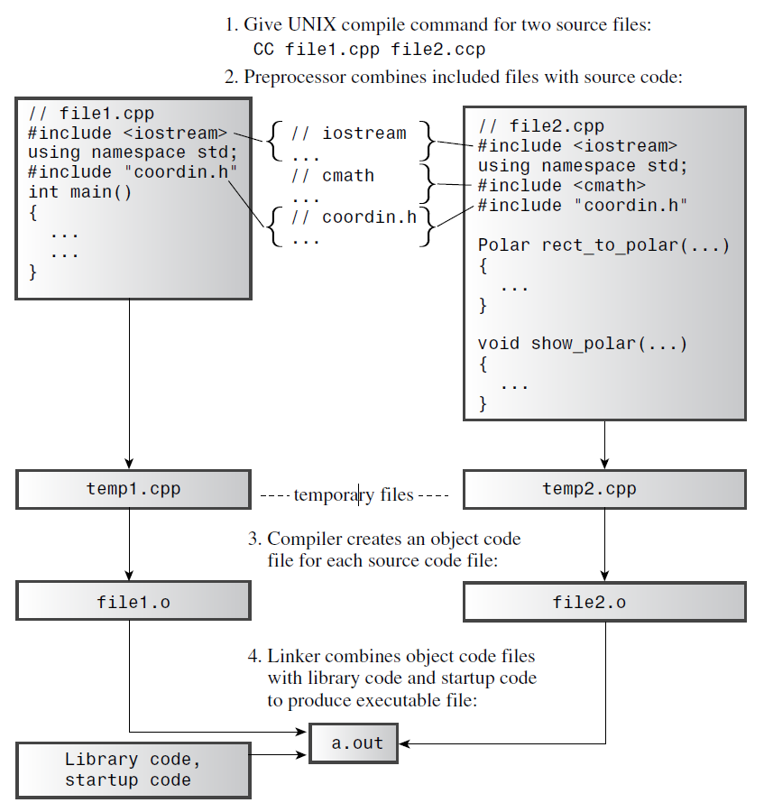
C++ Standard uses the term translation unit instead of file in order to preserve greater generality;
the file metaphor is not the only possible way to organize information for a computer. For
simplicity, this book will use the term file, but feel free to translate that to translation unit.
Multiple Library Linking
Storage Duration, Scope, and Linkage
memory. C++ uses three separate schemes (four under C++11) for storing data, and the schemes differ in how long they preserve data in memory:
- Automatic storage duration—Variables declared inside a function definition— including function parameters—have automatic storage duration.They are created when program execution enters the function or block in which they are defined, and the memory used for them is freed when execution leaves the function or block. C++ has two kinds of automatic storage duration variables.
- Static storage duration—Variables defined outside a function definition or else
by using the keyword
statichave static storage duration.They persist for the entire time a program is running. C++ has three kinds of static storage duration variables. - Thread storage duration (C++11)—These days multicore processors are common.
These are CPUs that can handle several execution tasks simultaneously.This
allows a program to split computations into separate threads that can be processed
concurrently.Variables declared with the
thread_localkeyword have storage that persists for as long as the containing thread lasts.This book does not venture into concurrent programming. - Dynamic storage duration—Memory allocated by the
newoperator persists until it is freed with thedeleteoperator or until the program ends, whichever comes first.This memory has dynamic storage duration and sometimes is termed the free store or the heap.
Scope and Linkage
Scope describes how widely visible a name is in a file (translation unit).
Linkage describes how a name can be shared in different units.
A name with external linkage can be shared across files, and a name with internal linkage can be shared by functions within a single file. Names of automatic variables have no linkage because they are not shared. A C++ variable can have one of several scopes.A variable that has local scope (also termed block scope) is known only within the block in which it is defined.
Automatic Storage Duration
Function parameters and variables declared inside a function have, by default, automatic storage duration.
They also have local scope and no linkage.That is, if you declare a variable called texas in main() and you declare
another variable with the same name in a function called oil(), you’ve created two independent variables, each known
only in the function in which it’s defined. Anything you do to the texas in oil() has no effect on the texas in main(),
and vice versa.
autoscp.cpp - illustrating scope of automatic variables
// autoscp.cpp -- illustrating scope of automatic variables
#include <iostream>
void oil(int x);
int main()
{
using namespace std;
int texas = 31;
int year = 2011;
cout << "In main(), texas = " << texas << ", &texas = ";
cout << &texas << endl;
cout << "In main(), year = " << year << ", &year = ";
cout << &year << endl;
oil(texas);
cout << "In main(), texas = " << texas << ", &texas = ";
cout << &texas << endl;
cout << "In main(), year = " << year << ", &year = ";
cout << &year << endl;
return 0;
}
void oil(int x)
{
using namespace std;
int texas = 5;
cout << "In oil(), texas = " << texas << ", &texas = ";
cout << &texas << endl;
cout << "In oil(), x = " << x << ", &x = ";
cout << &x << endl;
{ // start a block
int texas = 113;
cout << "In block, texas = " << texas;
cout << ", &texas = " << &texas << endl;
cout << "In block, x = " << x << ", &x = ";
cout << &x << endl;
} // end a block
cout << "Post-block texas = " << texas;
cout << ", &texas = " << &texas << endl;
}
In main(), texas = 31, &texas = 0012FED4
In main(), year = 2011, &year = 0012FEC8
In oil(), texas = 5, &texas = 0012FDE4
In oil(), x = 31, &x = 0012FDF4
In block, texas = 113, &texas = 0012FDD8
In block, x = 31, &x = 0012FDF4
Post-block texas = 5, &texas = 0012FDE4
In main(), texas = 31, &texas = 0012FED4
In main(), year = 2011, &year = 0012FEC8
Changes to auto in C++11
Automatic Variables and the Stack
The usual means is to set aside a section of memory and treat it as a stack for managing the flow and ebb of variables. It’s called a stack because new data is figuratively stacked atop old data (that is, at an adjacent location, not at the same location) and then removed from the stack when a program is finished with it.The default size of the stack depends on the implementation, but a compiler typically provides the option of changing the size.The program keeps track of the stack by using two pointers. One points to the base of the stack, where the memory set aside for the stack begins, and one points to the top of the stack, which is the next free memory location.When a function is called, its automatic variables are added to the stack, and the pointer to the top points to the next available free space following the variables
A stack is a LIFO (last-in, first-out) design, meaning the last variables added to the stack are the first to go.The design simplifies argument passing
Register Variables
C originally introduced the register keyword to suggest that the compiler use a CPU
register to store an automatic variable:
The idea was that this would allow faster access to the variable. Prior to C++11, C++ used the keyword in the same fashion, except that as hardware and compilers developed in sophistication, the hint was generalized to mean that the variable was heavily used and perhaps the compiler could provide some sort of special treatment.
With C++11, that hint is being deprecated, leaving register as just a way to
explicitly identify a variable as being automatic.
Static Duration Variables
storage duration variables with three kinds of linkage: external linkage (accessible across files), internal linkage (accessible to functions within a single file), and no linkage (accessible to just one function or to one block within a function). All three last for the duration of the program; they are less ephemeral than automatic variables. Because the number of static variables doesn’t change as the program runs, the program doesn’t need a special device such as a stack to manage them. Instead, the compiler allocates a fixed block of memory to hold all the static variables, and those variables stay present as long as the program executes. Also if you don’t explicitly initialize a static variable, the compiler sets it to 0. Static arrays and structures have all the bits of each element or member set to 0 by default.
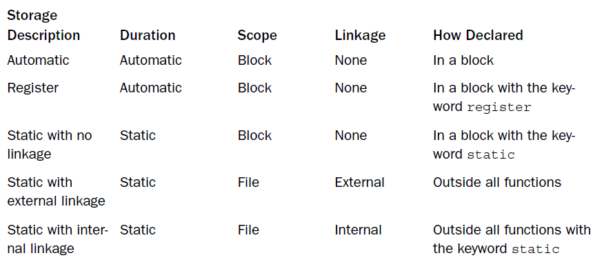
Initializing Static Variables
Static variables may be zero-initialized, they may undergo constant expression initialization, and they may undergo dynamic initialization.As you may have surmised, zero-initialization means setting the variable to the value zero
Zero-initialization and constant-expression initialization collectively are called static initialization.
This means the variable is initialized when the compiler processes the file (or
translation unit). Dynamic initialization means the variable is initialized later
#include <cmath>
int x; // zero-initialization
int y = 5; // constant-expression initialization
long z = 13 * 13; // constant-expression initialization
const double pi = 4.0 * atan(1.0); // dynamic initialization
C++11 introduces a new keyword, constexpr, to expand the options for creating constant
expressions; this is one of the new C++11 features that this book does not pursue
further
Static Duration, External Linkage
Variables with external linkage are often simply called external variables
You can use an external variable in any function that follows
the external variable’s definition in the file.Thus, external variables are also termed global
variables, in contrast to automatic variables, which are local variables.
The One Definition Rule
On the one hand, an external variable has to be declared in each file that uses the variable.
On the other hand, C++ has the “one definition rule” (also known as odr), which states
that there can be only one definition of a variable.
To satisfy these requirements, C++ has two kinds of variable declarations. One is the defining declaration or, simply,
a definition. The second is the referencing declaration or, simply, a declaration. It does not cause storage to be
allocated because it refers to an existing variable.
A referencing declaration uses the keyword extern and does not provide initialization. Otherwise, a declaration is a definition and causes storage to be allocated:
double up; // definition, up is 0
extern int blem; // blem defined elsewhere
extern char gr = 'z'; // definition because initialized
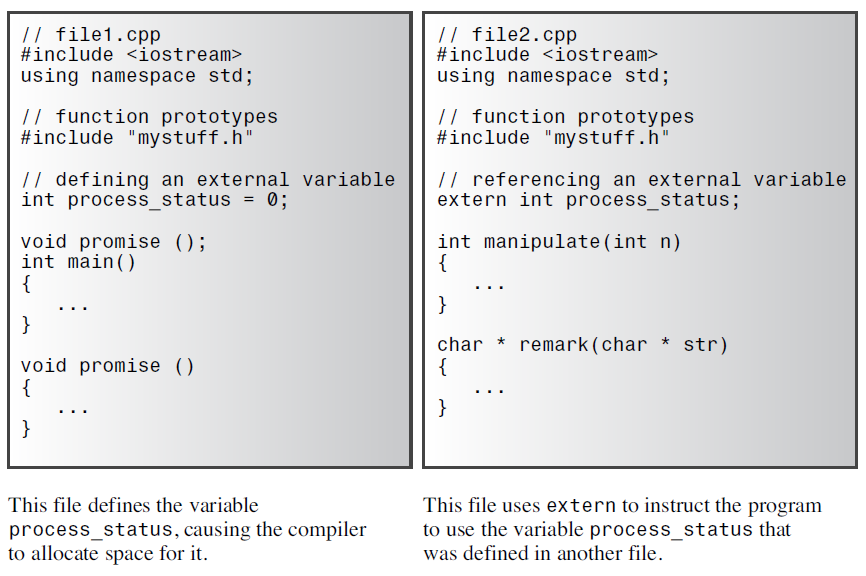
_ch9_external.cpp - external variables
// external.cpp -- external variables
// compile with support.cpp
#include <iostream>
using namespace std;
// external variable
double warming = 0.3; // warming defined
// function prototypes
void update(double dt);
void local();
int main() // uses global variable
{
cout << "Global warming is " << warming << " degrees.\n";
update(0.1); // call function to change warming
cout << "Global warming is " << warming << " degrees.\n";
local(); // call function with local warming
cout << "Global warming is " << warming << " degrees.\n";
return 0;
}
/*
Global warming is 0.3 degrees.
Updating global warming to 0.4 degrees.
Global warming is 0.4 degrees.
Local warming = 0.8 degrees.
But global warming = 0.4 degrees.
Global warming is 0.4 degrees
*/
_ch9_support.cpp - use external variable
// support.cpp -- use external variable
// compile with external.cpp
#include <iostream>
extern double warming; // use warming from another file
// function prototypes
void update(double dt);
void local();
using std::cout;
void update(double dt) // modifies global variable
{
extern double warming; // optional redeclaration
warming += dt; // uses global warming
cout << "Updating global warming to " << warming;
cout << " degrees.\n";
}
void local() // uses local variable
{
double warming = 0.8; // new variable hides external one
cout << "Local warming = " << warming << " degrees.\n";
// Access global variable with the
// scope resolution operator
cout << "But global warming = " << ::warming;
cout << " degrees.\n";
}
Global Versus Local Variables
Now that you have a choice of using global or local variables, which should you use? At first, global variables have a seductive appeal—because all functions have access to a global variable, you don’t have to bother passing arguments. But this easy access has a heavy price: unreliable programs. Computing experience has shown that the better job your program does of isolating data from unnecessary access, the better job the program does in preserving the integrity of the data. Most often, you should use local variables and pass data to functions on a need-to-know basis rather than make data available indiscriminately by using global variables. As you will see, OOP takes this data isolation a step further. Global variables do have their uses, however. For example, you might have a block of data that’s to be used by several functions, such as an array of month names or the atomic weights of the elements. The external storage class is particularly suited to representing constant data because you can use the keyword `const` to protect the data from change: In this example, the first `const` protects the strings from change, and the second `const` makes sure that each pointer in the array remains pointing to the same string to which it pointed initially.Static Duration, Internal Linkage
Applying the static modifier to a file-scope variable gives it internal linkage.The difference between internal linkage and external linkage becomes meaningful in multifile programs. In that context, a variable with internal linkage is local to the file that contains it. But a regular external variable has external linkage, meaning that it can be used in different files, as the previous example showed.
Declaration of a static external variable that has the same name as an ordinary external variable declared in another file, the static version is the one in scope for that file:
_ch9_twofile1.cpp - variables with external and internal linkage
// twofile1.cpp -- variables with external and internal linkage
#include <iostream> // to be compiled with two file2.cpp
int tom = 3; // external variable definition
int dick = 30; // external variable definition
static int harry = 300; // static, internal linkage
// function prototype
void remote_access();
int main()
{
using namespace std;
cout << "main() reports the following addresses:\n";
cout << &tom << " = &tom, " << &dick << " = &dick, ";
cout << &harry << " = &harry\n";
remote_access();
return 0;
}
/*
main() reports the following addresses:
0x0041a020 = &tom, 0x0041a024 = &dick, 0x0041a028 = &harry
remote_access() reports the following addresses:
0x0041a020 = &tom, 0x0041a450 = &dick, 0x0041a454 = &harry
*/
_ch9_twofile2.cpp - variables with internal and external linkage
// twofile2.cpp -- variables with internal and external linkage
#include <iostream>
extern int tom; // tom defined elsewhere
static int dick = 10; // overrides external dick
int harry = 200; // external variable definition,
// no conflict with twofile1 harry
void remote_access()
{
using namespace std;
cout << "remote_access() reports the following addresses:\n";
cout << &tom << " = &tom, " << &dick << " = &dick, ";
cout << &harry << " = &harry\n";
}
// file1
int errors = 20; // external declaration
...
---------------------------------------------
// file2
static int errors = 5; // known to file2 only
void froobish()
{
cout << errors; // uses errors defined in file2
...
This doesn’t violate the one definition rule because the keyword static establishes that the identifier errors has internal linkage, so no attempt is made to bring in an external definition.
Static Storage Duration, No Linkage
You create such a variable by applying the static modifier to a variable defined inside a block.When you use it inside a block, static causes a local variable to have static storage duration.This means that even though the variable is known within that block, it exists even while the block is inactive.Thus a static local variable can preserve its value between function calls.
static.cpp - variables with external and internal linkage
// static.cpp -- using a static local variable
#include <iostream>
// constants
const int ArSize = 10;
// function prototype
void strcount(const char *str);
int main()
{
using namespace std;
char input[ArSize];
char next;
cout << "Enter a line:\n";
cin.get(input, ArSize);
while (cin)
{
cin.get(next);
while (next != '\n') // string didn't fit!
cin.get(next); // dispose of remainder
strcount(input);
cout << "Enter next line (empty line to quit):\n";
cin.get(input, ArSize);
}
cout << "Bye\n";
return 0;
}
void strcount(const char *str)
{
using namespace std;
static int total = 0; // static local variable
int count = 0; // automatic local variable
cout << "\"" << str << "\" contains ";
while (*str++) // go to end of string
count++;
total += count;
cout << count << " characters\n";
cout << total << " characters total\n";
}
/*
Enter a line:
nice pants
"nice pant" contains 9 characters
9 characters total
Enter next line (empty line to quit):
thanks
"thanks" contains 6 characters
15 characters total
Enter next line (empty line to quit):
parting is such sweet sorrow
"parting i" contains 9 characters
24 characters total
Enter next line (empty line to quit):
ok
"ok" contains 2 characters
26 characters total
Enter next line (empty line to quit):
Bye
*/
Specifiers and Qualifiers
Certain C++ keywords, called storage class specifiers and cv-qualifiers, provide additional
information about storage. Here’s a list of the storage class specifiers:
auto (eliminated as a specifier in C++11)
register
static
extern
thread_local (added by C++11)
mutable
A thread_local variable is to a thread much as a regular static variable is to the whole program.The keyword mutable
is explained in terms of const, so let’s look at the cv-qualifiers first before returning to mutable.
Cv-Qualifiers
(As you may have guessed, cv stands for const and volatile.) The most commonly used
cv-qualifier is const, and you’ve already seen its purpose: It indicates that memory, after initialized,
should not be altered by a program.
The volatile keyword indicates that the value in a memory location can be altered
even though nothing in the program code modifies the contents.
mutable
struct data
{
char name[30];
mutable int accesses;
...
};
const data veep = {"Claybourne Clodde", 0, ... };
strcpy(veep.name, "Joye Joux"); // not allowed
veep.accesses++; // allowed
The const qualifier to veep prevents a program from changing veep’s members, but
the mutable specifier to the accesses member shields accesses from that restriction.
This book doesn’t use volatile or mutable, but there is more to learn about const
More About const
In C++ (but not C), the const modifier alters the default storage classes slightly.Whereas a global variable has external linkage by default, a const global variable has internal linkage by default.That is, C++ treats a global const definition, such as in the following code fragment, as if the static specifier had been used:
const int fingers = 10; // same as static const int fingers = 10;
int main(void)
{
// extern would be required if const had external linkage
extern const int fingers; // can't be initialized
extern const char * warning;
// If, for some reason, you want to make a constant have external linkage, you can use the
// extern keyword to override the default internal linkage:
extern const int states = 50; // definition with external linkage
...
Where C++ Finds Functions
Language Linking
suppose you want to use a precompiled function from a C library in a C++ program? For example, suppose you have this code:
Its hypothetical symbolic name in the C library file is _spiff, but for our hypothetical
linker, the C++ look-up convention is to look for the symbolic name _spiff_i. To get
around this problem, you can use the function prototype to indicate which protocol to use:
extern "C" void spiff(int); // use C protocol for name look-up
extern void spoff(int); // use C++ protocol for name look-up
extern "C++" void spaff(int); // use C++ protocol for name look-up```
The Placement new Operator
With new header file, you can create your own memory-management
procedures or to deal with hardware that is accessed via a particular address or to construct objects in a particular
memory location.
#include <new>
struct chaff
{
char dross[20];
int slag;
};
char buffer1[50];
char buffer2[500];
int main()
{
chaff *p1, *p2;
int *p3, *p4;
// first, the regular forms of new
p1 = new chaff; // place structure in heap
p3 = new int[20]; // place int array in heap
// now, the two forms of placement new
p2 = new (buffer1) chaff; // place structure in buffer1
p4 = new (buffer2) int[20]; // place int array in buffer2
...
// ----
// Just as regular new invokes a new function with one argument, the
// standard placement new invokes a new function with two arguments:
int * pi = new int; // invokes new(sizeof(int))
int * p2 = new(buffer) int; // invokes new(sizeof(int), buffer)
int * p3 = new(buffer) int[40]; // invokes new(40*sizeof(int), buffer)
newplace.cpp - using placement new
#include <iostream>
#include <new> // for placement new
const int BUF = 512;
const int N = 5;
char buffer[BUF]; // chunk of memory
int main()
{
using namespace std;
double *pd1, *pd2;
int i;
cout << "Calling new and placement new:\n";
pd1 = new double[N]; // use heap
pd2 = new (buffer) double[N]; // use buffer array
for (i = 0; i < N; i++)
pd2[i] = pd1[i] = 1000 + 20.0 * i;
cout << "Memory addresses:\n"
<< " heap: " << pd1
<< " static: " << (void *)buffer << endl;
cout << "Memory contents:\n";
for (i = 0; i < N; i++)
{
cout << pd1[i] << " at " << &pd1[i] << "; ";
cout << pd2[i] << " at " << &pd2[i] << endl;
}
cout << "\nCalling new and placement new a second time:\n";
double *pd3, *pd4;
pd3 = new double[N]; // find new address
pd4 = new (buffer) double[N]; // overwrite old data
for (i = 0; i < N; i++)
pd4[i] = pd3[i] = 1000 + 40.0 * i;
cout << "Memory contents:\n";
for (i = 0; i < N; i++)
{
cout << pd3[i] << " at " << &pd3[i] << "; ";
cout << pd4[i] << " at " << &pd4[i] << endl;
}
cout << "\nCalling new and placement new a third time:\n";
delete[] pd1;
pd1 = new double[N];
pd2 = new (buffer + N * sizeof(double)) double[N];
for (i = 0; i < N; i++)
pd2[i] = pd1[i] = 1000 + 60.0 * i;
cout << "Memory contents:\n";
for (i = 0; i < N; i++)
{
cout << pd1[i] << " at " << &pd1[i] << "; ";
cout << pd2[i] << " at " << &pd2[i] << endl;
}
delete[] pd1;
delete[] pd3;
return 0;
}
/*
Calling new and placement new:
Memory addresses:
heap: 006E4AB0 static: 00FD9138
Memory contents:
1000 at 006E4AB0; 1000 at 00FD9138
1020 at 006E4AB8; 1020 at 00FD9140
1040 at 006E4AC0; 1040 at 00FD9148
1060 at 006E4AC8; 1060 at 00FD9150
1080 at 006E4AD0; 1080 at 00FD9158
Calling new and placement new a second time:
Memory contents:
1000 at 006E4B68; 1000 at 00FD9138
1040 at 006E4B70; 1040 at 00FD9140
1080 at 006E4B78; 1080 at 00FD9148
1120 at 006E4B80; 1120 at 00FD9150
1160 at 006E4B88; 1160 at 00FD9158
Calling new and placement new a third time:
Memory contents:
1000 at 006E4AB0; 1000 at 00FD9160
1060 at 006E4AB8; 1060 at 00FD9168
1120 at 006E4AC0; 1120 at 00FD9170
1180 at 006E4AC8; 1180 at 00FD9178
1240 at 006E4AD0; 1240 at 00FD9180
*/
Namespaces
You might want the List class from one library and the Tree from the other,
and each might expect its own version of Node.
Such conflicts are termed namespace problems.
declarative region - region in which declarations can be made
potential scope - for a variable it begins at its point of declaration and extends to the end of its declarative region.
So the potential scope is more limited than the declarative region because you can’t use a variable above the point
where it is first defined. However, a variable might not be visible everywhere in its potential scope.
scope - The portion of the program that can actually see the variable
Traditional C++ Namespaces
C++’s rules about global and local variables define a kind of namespace hierarchy. Each declarative region can declare names that are independent of names declared in other declarative regions. A local variable declared in one function doesn’t conflict with a local variable declared in a second function.
New Namespace Features
C++ now adds the ability to create named namespaces by defining a new kind of declarative region, one whose main purpose is to provide an area in which to declare names.
New keyword namespace to create two namespaces, Jack and Jill:
namespace Jack {
double pail; // variable declaration
void fetch(); // function prototype
int pal; // variable declaration
struct Well { ... }; // structure declaration
}
namespace Jill {
double bucket(double n) { ... } // function definition
double fetch; // variable declaration
int pal; // variable declaration
struct Hill { ... }; // structure declaration
}
The simplest way is to use ::, the scope-resolution operator, to qualify a name with its namespace:
Jack::pail = 12.34; // use a variable
Jill::Hill mole; // create a type Hill structure
Jack::fetch(); // use a function
An unadorned name, such as pail, is termed the unqualified name, whereas a name with
the namespace, as in Jack::pail, is termed a qualified name.
One thing to keep in mind about using directives and using declarations is that they increase the possibility of name conflicts
using Declarations and using Directives
A using declaration, then, makes a single name available. In contrast, the using directive
makes all the names available
Having to qualify names every time they are used is not always an appealing prospect, so
C++ provides two mechanisms—the using declaration and the using directive — to simplify
using namespace names.
using directive in a function treats the
namespace names as being declared outside the function, it doesn’t make those names
available to other functions in the file.
using Declaration
For example, the using declaration of Jill::fetch in main() adds fetch to the
declarative region defined by main().
After making this declaration, you can use the name fetch instead of Jill::fetch.
namespace Jill {
double bucket(double n) { ... }
double fetch;
struct Hill { ... };
}
char fetch;
int main()
{
using Jill::fetch; // put fetch into local namespace
double fetch; // Error! Already have a local fetch
cin >> fetch; // read a value into Jill::fetch
cin >> ::fetch; // read a value into global fetch
...
}
using Directive
More Namespace Features
You can nest namespace declarations, like this:
Also you can use using directives and using declarations inside namespaces, like this:
Suppose you want to access Jill::fetch. Because Jill::fetch is now part of the
myth namespace, where it can be called fetch, you can access it this way:
unnamed namespace:
This code behaves as if it were followed by a using directive; that is, the names declared in this namespace are in potential scope until the end of the declarative region that contains the unnamed namespace
Namespace's Program Example
Explanation:
The first file in this example (see Listing 9.11) is a header file that contains some items normally found in header files—constants, structure definitions, and function prototypes. In this case, the items are placed in two namespaces.The first namespace, pers, contains a definition of a Person structure, plus prototypes for a function that fills a structure with a person’s name and a function that displays the structure’s contents.The second namespace, debts, defines a structure for storing the name of a person and the amount of money owed to that person.This structure uses the Person structure, so the debts namespace has a using directive to make the names in the pers namespace available in the debts namespace.The debts namespace also contains some prototypes. The second file in this example (see Listing 9.12) follows the usual pattern of having a source code file provide definitions for functions prototyped in a header file.The function names, which are declared in a namespace, have namespace scope, so the definitions need to be in the same namespace as the declarations.This is where the open nature of namespaces comes in handy.The original namespaces are brought in by including namesp.h (refer to Listing 9.11).The file then adds the function definitions to the two namespaces, as shown in Listing 9.12.Also the namesp.cpp file illustrates bringing in elements of the std namespace with the using declaration and the scope-resolution operator. Finally, the third file of this program (see Listing 9.13) is a source code file that uses the structures and functions declared and defined in the namespaces. Listing 9.13 shows several methods of making the namespace identifiers available.namesp.h
// namesp.h
#include <string>
// create the pers and debts namespaces
namespace pers
{
struct Person
{
std::string fname;
std::string lname;
};
void getPerson(Person &);
void showPerson(const Person &);
}
namespace debts
{
using namespace pers;
struct Debt
{
Person name;
double amount;
};
void getDebt(Debt &);
void showDebt(const Debt &);
double sumDebts(const Debt ar[], int n);
}
namesp.cpp - namespaces
// namesp.cpp -- namespaces
#include <iostream>
#include "namesp.h"
namespace pers
{
using std::cin;
using std::cout;
void getPerson(Person &rp)
{
cout << "Enter first name: ";
cin >> rp.fname;
cout << "Enter last name: ";
cin >> rp.lname;
}
void showPerson(const Person &rp)
{
std::cout << rp.lname << ", " << rp.fname;
}
}
namespace debts
{
void getDebt(Debt &rd)
{
getPerson(rd.name);
std::cout << "Enter debt: ";
std::cin >> rd.amount;
}
void showDebt(const Debt &rd)
{
showPerson(rd.name);
std::cout << ": $" << rd.amount << std::endl;
}
double sumDebts(const Debt ar[], int n)
{
double total = 0;
for (int i = 0; i < n; i++)
total += ar[i].amount;
return total;
}
}
usenmsp.cpp - using namespaces
// usenmsp.cpp -- using namespaces
#include <iostream>
#include "namesp.h"
void other(void);
void another(void);
int main(void)
{
using debts::Debt;
using debts::showDebt;
Debt golf = {{"Benny", "Goatsniff"}, 120.0};
showDebt(golf);
other();
another();
return 0;
}
void other(void)
{
using std::cout;
using std::endl;
using namespace debts;
Person dg = {"Doodles", "Glister"};
showPerson(dg);
cout << endl;
Debt zippy[3];
int i;
for (i = 0; i < 3; i++)
getDebt(zippy[i]);
for (i = 0; i < 3; i++)
showDebt(zippy[i]);
cout << "Total debt: $" << sumDebts(zippy, 3) << endl;
return;
}
void another(void)
{
using pers::Person;
Person collector = {"Milo", "Rightshift"};
pers::showPerson(collector);
std::cout << std::endl;
}
/*
Goatsniff, Benny: $120
Glister, Doodles
Enter first name: Arabella
Enter last name: Binx
Enter debt: 100
Enter first name: Cleve
Enter last name: Delaproux
Enter debt: 120
Enter first name: Eddie
Enter last name: Fiotox
Enter debt: 200
Binx, Arabella: $100
Delaproux, Cleve: $120
Fiotox, Eddie: $200
Total debt: $420
Rightshift, Milo
*/
Namespace's using guidlines
- Use variables in a named namespace instead of using external global variables.
- Use variables in an unnamed namespace instead of using static global variables.
- If you develop a library of functions or classes, place them in a namespace. Indeed,
C++ currently already calls for placing standard library functions in a namespace
called std.This extends to functions brought in from C. For example, the
math.cheader file, which is C-compatible, doesn’t use namespaces, but the C++cmathheader file should place the various math library functions inthestd namespace. - Use the
usingdirective only as a temporary means of converting old code to namespace usage. - Don’t use
usingdirectives in header files; for one thing, doing so conceals which names are being made available.Also the ordering of header files may affect behavior. If you use ausingdirective, place it after all the preprocessor#includedirectives. - Preferentially import names by using the scope-resolution operator or a
usingdeclaration. - Preferentially use local scope instead of global scope for
usingdeclarations.
Bear in mind that the main motivation for using namespaces is to simplify management
of large programming projects. For simple, one-file programs, using a using directive
is no great sin.
Chapter 10: Objects and Classes
List of what you will learn
- Procedural and object-oriented programming
- The concept of classes
- How to define and implement a class
- Public and private class access
- Class data members
- Class methods (also called class function members)
- Creating and using class objects
- Class constructors and destructors
- const member functions
- The this pointer
- Creating arrays of objects
- Class scope
- Abstract data types
Object-oriented programming (OOP) is a particular conceptual approach to designing programs, and C++ has enhanced C with features that ease the way to applying that approach.The following are the most important OOP features:
- Abstraction
- Encapsulation and data hiding
- Polymorphism
- Inheritance
- Reusability of code
Abstraction and Classes
Abstraction is the crucial step of representing information in terms of its interface with the user. That is, you abstract the essential operational features of a problem and express a solution in those terms. In the softball statistics example, the interface describes how the user initializes, updates, and displays the data. From abstraction, it is a short step to the user-defined type, which in C++ is a class design that implements the abstract interface
Basic data type does three things:
- It determines how much memory is needed for a data object.
- It determines how the bits in memory are interpreted. (A long and a float might use the same number of bits in memory, but they are translated into numeric values differently.)
- It determines what operations, or methods, can be performed using the data object.
class is a C++ vehicle for translating an abstraction to a user-defined type. It combines
data representation and methods for manipulating that data into one neat package.
Interface - shared framework for interactions between two systems—for instance,
between a computer and a printer or between a user and a computer program.
Access Control
Also new are the keywords private and public. These labels describe access control for
class members.Any program that uses an object of a particular class can access the public
portions directly. A program can access the private members of an object only by using the
public member functions.
This insulation of data from direct access by a pro-
gram is called data hiding
Implementing Class Member Functions
Member function definitions are much like regular function definitions. Each has a function header and a function body. Member function definitions can have return types and arguments. But they also have two special characteristics:
- When you define a member function, you use the scope-resolution operator (::) to identify the class to which the function belongs.
- Class methods can access the private components of the class.
This notation means you are defining the update() function that is a member of the Stock class:
Method can access the private members of a class.
Any function with a definition in the class declaration automatically becomes an inline function.
You can define a member function outside the class declaration and still make it inline.To do so, you just use the inline qualifier
-- 001 png
The Client/Server model
OOP programmers often discuss program design in terms of a client/server model. In this conceptualization, the client is a program that uses the class. The class declaration, includ- ing the class methods, constitute the server, which is a resource that is available to the pro- grams that need it. The client uses the server through the publicly defined interface only. This means that the client’s only responsibility, and, by extension, the client’s programmer’s only responsibility, is to know that interface. The server’s responsibility, and, by extension, the server’s designer’s responsibility, is to see that the server reliably and accurately per- forms according to that interface.Change of precision for vars
void Stock::show()
{
using std::cout;
using std::ios_base;
// set format to #.###
ios_base::fmtflags orig =
cout.setf(ios_base::fixed, ios_base::floatfield);
std::streamsize prec = cout.precision(3);
cout << "Company: " << company
<< " Shares: " << shares << ‘\n’;
cout << " Share Price: $" << share_val;
// set format to #.##
cout.precision(2);
cout << " Total Worth: $" << total_val << ‘\n’;
// restore original format
cout.setf(orig, ios_base::floatfield);
cout.precision(prec);
}
Class Constructors and Destructors
you need to devise an appropriate member function if you’re to suc- ceed in initializing an object. (You could initialize a class object as just shown if you made the data members public instead of private, but making the data public goes against one of the main justifications for using classes: data hiding.)
C++ uses a class constructor whenever you create an object of that class, even when you use new for dynamic memory allocation. Here’s how to use the constructor with new:
A default constructor is a constructor that is used to create an object when you don’t provide
explicit initialization values.That is, it’s a constructor used for declarations like this:
The destructor should clean
up any debris, so it actually serves a useful purpose. For example, if your constructor uses
new to allocate memory, the destructor should use delete to free that memory.
A destructor must have no arguments. Thus, the prototype for a Stock destructor must be this:
Because a Stock destructor has no vital duties, you can code it as a do-nothing function:
Member Names and Parameter Names
Often those new to constructors try to use the class member names as parameter names in the constructor, as in this example: This is wrong. The constructor arguments don’t represent the class members; they repre- sent values that are assigned to the class members. Thus, they must have distinct names, or you end up with confusing code like this:stock10.cpp - Implementation of a Stock class program file
// stock10.cpp -- Stock class with constructors, destructor added
#include <iostream>
#include "stock10.h"
// constructors (verbose versions)
Stock::Stock()
// default constructor
{
std::cout << "Default constructor called\n";
company = "no name";
shares = 0;
share_val = 0.0;
total_val = 0.0;
}
Stock::Stock(const std::string &co, long n, double pr)
{
std::cout << "Constructor using " << co << " called\n";
company = co;
if (n < 0)
{
std::cout << "Number of shares can't be negative; "
<< company << " shares set to 0.\n";
shares = 0;
}
else
shares = n;
share_val = pr;
set_tot();
}
// class destructor
Stock::~Stock()
// verbose class destructor
{
std::cout << "Bye, " << company << "!\n";
}
// other methods
void Stock::buy(long num, double price)
{
if (num < 0)
{
std::cout << "Number of shares purchased can't be negative. "
<< "Transaction is aborted.\n";
}
else
{
shares += num;
share_val = price;
set_tot();
}
}
void Stock::sell(long num, double price)
{
using std::cout;
if (num < 0)
{
cout << "Number of shares sold can't be negative. "
<< "Transaction is aborted.\n";
}
else if (num > shares)
{
cout << "You can't sell more than you have! "
<< "Transaction is aborted.\n";
}
else
{
shares -= num;
share_val = price;
set_tot();
}
}
void Stock::update(double price)
{
share_val = price;
set_tot();
}
void Stock::show()
{
using std::cout;
using std::ios_base;
// set format to #.###
ios_base::fmtflags orig =
cout.setf(ios_base::fixed, ios_base::floatfield);
std::streamsize prec = cout.precision(3);
cout << "Company: " << company
<< " Shares: " << shares << '\n';
cout << " Share Price: $" << share_val;
// set format to #.##
cout.precision(2);
cout << " Total Worth: $" << total_val << '\n';
// restore original format
cout.setf(orig, ios_base::floatfield);
cout.precision(prec);
}
stock10.h -- Stock class declaration with constructors, destructor added
// stock10.h -- Stock class declaration with constructors, destructor added
#ifndef STOCK10_H_
#define STOCK01_H_
#include <string>
class Stock
{
private:
std::string company;
long shares;
double share_val;
double total_val;
void set_tot() { total_val = shares * share_val; }
public:
// two constructors
Stock(); // default constructor
Stock(const std::string &co, long n = 0, double pr = 0.0);
~Stock(); // noisy destructor
void buy(long num, double price);
void sell(long num, double price);
void update(double price);
void show();
};
#endif
usestock1.cpp - Client file
// usestok1.cpp -- using the Stock class
// compile with stock10.cpp
#include <iostream>
#include "stock10.h"
int main()
{
{
using std::cout;
cout << "Using constructors to create new objects\n";
Stock stock1("NanoSmart", 12, 20.0);
// syntax 1
stock1.show();
Stock stock2 = Stock("Boffo Objects", 2, 2.0); // syntax 2
stock2.show();
cout << "Assigning stock1 to stock2:\n";
stock2 = stock1;
cout << "Listing stock1 and stock2:\n";
stock1.show();
stock2.show();
cout << "Using a constructor to reset an object\n";
stock1 = Stock("Nifty Foods", 10, 50.0);
// temp object
cout << "Revised stock1:\n";
stock1.show();
cout << "Done\n";
}
return 0;
}
Note
You may have noticed that `Client file` has an extra brace at the beginning and near the end of main(). Automatic variables such as stock1 and stock2 expire when the program exits the block that contains their definitions. Without the extra braces, that block would be the body of main(), so the destructors would not be called until after main() completed execu- tion. In a windowing environment, this would mean that the window would close before the last two destructor calls, preventing you from seeing the last two messages. But with the braces, the last two destructor calls occur before the return statement is reached, so the messages are displayed.C++11 List Initialization
With C++11, can you use the list-initialization syntax with classes? Yes, you can, providing the brace contents match the argument list of a constructor:
Stock hot_tip = {"Derivatives Plus Plus", 100, 45.0};
Stock jock {"Sport Age Storage, Inc"};
Stock temp {};
The braced lists in the first two declarations match the following constructor: Therefore, that constructor will be used to create the two objects.
const Member Functions
Consider the following code snippet:
With current C++, the compiler should object to the second line.Why? Because the code for show() fails to guarantee that it won’t modify the invoking object, which, because it is const, should not be altered.
That is, the show() declaration should look like this:
Similarly, the beginning of the function definition should look like this:
Class functions declared and defined this way are called const member functions.
The this Pointer
Suppose, then, that you want to compare the Stock objects stock1 and stock2 and assign the one with the greater total value to the object top.You can use either of the fol- lowing statements to do so:
Here’s a partial implementation that highlights the problem:
const Stock & Stock::topval(const Stock & s) const
{
if (s.total_val > total_val)
return s; // argument object
else
return ?????; // invoking object -> should be *this
}
*this is as an alias for the invoking object.
The fact that the return type is a reference means that the returned object is the
invoking object itself rather than a copy passed by the return mechanism.
An Array of Objects
Stock mystuff[4]; // creates an array of 4 Stock object
const Stock * tops = mystuff[2].topval(mystuff[1]);
// compare 3rd and 2nd elements and set tops
// to point at the one with a higher total value
// You can use a constructor to initialize the array elements
const int STKS = 4;
Stock stocks[STKS] = {
Stock("NanoSmart", 12.5, 20),
Stock("Boffo Objects", 200, 2.0),
Stock("Monolithic Obelisks", 130, 3.25),
Stock("Fleep Enterprises", 60, 6.5)
};
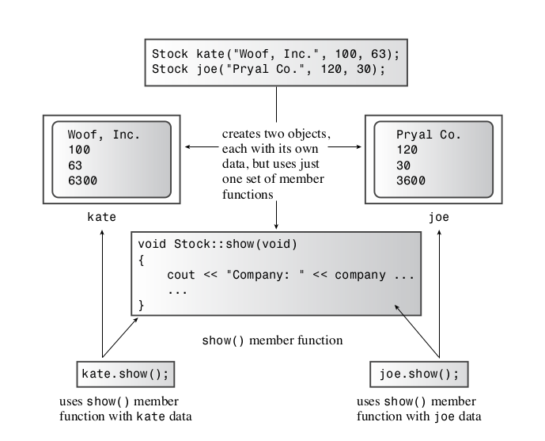
Abstract Data Types
Using classes is a good way to implement what computer scientists describe as abstract data types (ADTs) ADT describes a data type in a general fashion without bringing in language or implementa- tion details.
Stack example: you can store data so that Abstract Data Types data is always added to or deleted from the top of the stack. For example, C++ programs use a stack to manage automatic variables.As new automatic variables are generated, they are added to the top of the stack.When they expire, they are removed from the stack.
Stack is characterized by the operations you can perform on it:
- You can create an empty stack.
- You can add an item to the top of a stack (that is, you can push an item).
- You can remove an item from the top (that is, you can pop an item).
- You can check whether the stack is full.
- You can check whether the stack is empty.
stack.h - stack data type library
// stack.h -- class definition for the stack ADT
#ifndef STACK_H_
#define STACK_H_
typedef unsigned long Item;
class Stack
{
private:
enum
{
MAX = 10
}; // constant specific to class
Item items[MAX]; // holds stack items
int top; // index for top stack item
public:
Stack();
bool isempty() const;
bool isfull() const;
// push() returns false if stack already is full, true otherwise
bool push(const Item &item); // add item to stack
// pop() returns false if stack already is empty, true otherwise
bool pop(Item &item); // pop top into item
};
#endif
stack.cpp - implementation of class methods
// stack.cpp -- Stack member functions
#include "stack.h"
Stack::Stack() // create an empty stack
{
top = 0;
}
bool Stack::isempty() const
{
return top == 0;
}
bool Stack::isfull() const
{
return top == MAX;
}
bool Stack::push(const Item &item)
{
if (top < MAX)
{
items[top++] = item;
return true;
}
else
return false;
}
bool Stack::pop(Item &item)
{
if (top > 0)
{
item = items[--top];
return true;
}
else
return false;
}
/*
The default constructor guarantees that all stacks are created empty.The code for
pop() and push() guarantees that the top of the stack is managed properly.
*/
stacker.cpp - testing stack program - LIFO approach
// stacker.cpp -- testing the Stack class
#include <iostream>
#include <cctype> // or ctype.h
#include "stack.h"
int main()
{
using namespace std;
Stack st; // create an empty stack
char ch;
unsigned long po;
cout << "Please enter A to add a purchase order,\n"
<< "P to process a PO, or Q to quit.\n";
while (cin >> ch && toupper(ch) != 'Q')
{
while (cin.get() != '\n')
continue;
if (!isalpha(ch))
{
cout << '\a';
continue;
}
switch (ch)
{
case 'A':
case 'a':
cout << "Enter a PO number to add: ";
cin >> po;
if (st.isfull())
cout << "stack already full\n";
else
st.push(po);
break;
case 'P':
case 'p':
if (st.isempty())
cout << "stack already empty\n";
else
{
st.pop(po);
cout << "PO #" << po << " popped\n";
}
break;
}
cout << "Please enter A to add a purchase order,\n"
<< "P to process a PO, or Q to quit.\n";
}
cout << "Bye\n";
return 0;
}
/*
Here’s a sample run:
Please enter A to add a purchase order,
P to process a PO, or Q to quit.
A
Enter a PO number to add: 17885
Please enter A to add a purchase order,
P to process a PO, or Q to quit.
P
PO #17885 popped
Please enter A to add a purchase order,
P to process a PO, or Q to quit.
A
Enter a PO number to add: 17965
Please enter A to add a purchase order,
P to process a PO, or Q to quit.
A
Enter a PO number to add: 18002
Please enter A to add a purchase order,
P to process a PO, or Q to quit.
P
PO #18002 popped
Please enter A to add a purchase order,
P to process a PO, or Q to quit.
P
PO #17965 popped
Please enter A to add a purchase order,
P to process a PO, or Q to quit.
P
stack already empty
Please enter A to add a purchase order,
P to process a PO, or Q to quit.
Q
Bye
*/
Chapter 11: Working with Classes
List of what you will learn
Operator Overloading
To overload an operator, you use a special function form called an operator function. An
operator function has the following form, where <sbl> is the symbol for the operator being
overloaded:
operator<sbl>(argument-list)
// For example, operator+() overloads the + operator
// To overload the + operator so that it adds
// sales figures of one salesperson object to another -> if `district2``, `sid`, and `sara` are
// all objects of the `Salesperson` class, you can write this equation:
district2 = sid + sara;
// The compiler, recognizing the operands as belonging to the Salesperson class,
// replaces the operator with the corresponding operator function:
district2 = sid.operator+(sara);
Note
Don’t return a reference to a local variable or another temporary object. When the function terminates and the local variable or temporary object disappears, the reference becomes a reference to non-existent data.
Practical example - class for calculating time with + operator:
mytime.h - Prototypes
// mytime2.h -- Time class after operator overloading
#ifndef MYTIME2_H_
#define MYTIME2_H_
class Time
{
private:
int hours;
int minutes;
public:
Time();
Time(int h, int m = 0);
void AddMin(int m);
void AddHr(int h);
void Reset(int h = 0, int m = 0);
Time operator+(const Time &t) const;
Time operator-(const Time &t) const;
Time operator*(double n) const;
void Show() const;
};
#endif
mytime.cpp - Methods
// mytime1.cpp -- implementing Time methods
#include <iostream>
#include "mytime.h"
Time::Time()
{
hours = minutes = 0;
}
Time::Time(int h, int m)
{
hours = h;
minutes = m;
}
void Time::AddMin(int m)
{
minutes += m;
hours += minutes / 60;
minutes %= 60;
}
void Time::AddHr(int h)
{
hours += h;
}
void Time::Reset(int h, int m)
{
hours = h;
minutes = m;
}
Time Time::operator+(const Time &t) const
{
Time sum;
sum.minutes = minutes + t.minutes;
sum.hours = hours + t.hours + sum.minutes / 60;
sum.minutes %= 60;
return sum;
}
Time Time::operator-(const Time &t) const
{
Time diff;
int tot1, tot2;
tot1 = t.minutes + 60 * t.hours;
tot2 = minutes + 60 * hours;
diff.minutes = (tot2 - tot1) % 60;
diff.hours = (tot2 - tot1) / 60;
return diff;
}
Time Time::operator*(double mult) const
{
Time result;
long totalminutes = hours * mult * 60 + minutes * mult;
result.hours = totalminutes / 60;
result.minutes = totalminutes % 60;
return result;
}
void Time::Show() const
{
std::cout << hours << " hours, " << minutes << " minutes";
}
usetime.cpp - Program
// usetime1.cpp -- using the second draft of the Time class
// compile usetime1.cpp and mytime1.cpp together
#include <iostream>
#include "mytime.h"
int main()
{
using std::cout;
using std::endl;
Time planning;
Time coding(2, 40);
Time fixing(5, 55);
Time total;
cout << "planning time = ";
planning.Show();
cout << endl;
cout << "coding time = ";
coding.Show();
cout << endl;
cout << "fixing time = ";
fixing.Show();
cout << endl;
total = coding + fixing;
// operator notation
cout << "coding + fixing = ";
total.Show();
cout << endl;
Time morefixing(3, 28);
cout << "more fixing time = ";
morefixing.Show();
cout << endl;
total = morefixing.operator+(total);
// function notation
cout << "morefixing.operator+(total) = ";
total.Show();
cout << endl;
// --- Different example --- //
Time weeding(4, 35);
Time waxing(2, 47);
Time total;
Time diff;
Time adjusted;
cout << "weeding time = ";
weeding.Show();
cout << endl;
cout << "waxing time = ";
waxing.Show();
cout << endl;
cout << "total work time = ";
total = weeding + waxing; // use operator+()
total.Show();
cout << endl;
diff = weeding - waxing; // use operator-()
cout << "weeding time - waxing time = ";
diff.Show();
cout << endl;
adjusted = total * 1.5; // use operator+()
cout << "adjusted work time = ";
adjusted.Show();
cout << endl;
return 0;
}
/*
Here is the output of the program in Listings:
planning time = 0 hours, 0 minutes
coding time = 2 hours, 40 minutes
fixing time = 5 hours, 55 minutes
coding + fixing = 8 hours, 35 minutes
more fixing time = 3 hours, 28 minutes
morefixing.operator+(total) = 12 hours, 3 minutes
weeding time = 4 hours, 35 minutes
waxing time = 2 hours, 47 minutes
total work time = 7 hours, 22 minutes
weeding time - waxing time = 1 hours, 48 minutes
adjusted work time = 11 hours, 3 minutes
*/
Overloading restrictions
- Overloaded operator must have at least one operand that is a user-defined type (Prevents overloading for standard types)
- You can’t use an operator in a manner that violates the syntax rules for the original operator (eg. use
%with only single operand) - You can’t create new operator symbols
- You cannot overload the following operators:
| Operator | Description |
|---|---|
sizeof |
The sizeof operator |
. |
The membership operator |
.* |
The pointer-to-member operator |
:: |
The scope-resolution operator |
?: |
The conditional operator |
typeid |
An RTTI operator |
const_cast |
A type cast operator |
dynamic_cast |
A type cast operator |
reinterpret_cast |
A type cast operator |
static_cast |
A type cast operator |
= |
Assignment operator |
() |
Function call operator |
[] |
Subscripting operator |
-> |
Class member access by pointer operator |
Operators That Can Be Overloaded
+ |
- |
* |
/ |
% |
^ |
& |
\| |
~ |
! |
= |
< |
> |
+= |
-= |
*= |
/= |
%= |
^= |
&= |
\|= |
<< |
>> |
>>= |
<<= |
== |
!= |
<= |
>= |
&& |
\|\| |
++ |
-- |
, |
->* |
-> |
() |
[] |
new |
delete |
new[] |
delete[] |
Friends (578)
Operator Overloading
To overload an operator, you use a special function form called an operator function. An
operator function has the following form, where <sbl> is the symbol for the operator being
overloaded:
operator<sbl>(argument-list)
// For example, operator+() overloads the + operator
// To overload the + operator so that it adds
// sales figures of one salesperson object to another -> if `district2``, `sid`, and `sara` are
// all objects of the `Salesperson` class, you can write this equation:
district2 = sid + sara;
// The compiler, recognizing the operands as belonging to the Salesperson class,
// replaces the operator with the corresponding operator function:
district2 = sid.operator+(sara);
Note
Don’t return a reference to a local variable or another temporary object. When the function terminates and the local variable or temporary object disappears, the reference becomes a reference to non-existent data.
Practical example - class for calculating time with + operator:
mytime.h - Prototypes
// mytime2.h -- Time class after operator overloading
#ifndef MYTIME2_H_
#define MYTIME2_H_
class Time
{
private:
int hours;
int minutes;
public:
Time();
Time(int h, int m = 0);
void AddMin(int m);
void AddHr(int h);
void Reset(int h = 0, int m = 0);
Time operator+(const Time &t) const;
Time operator-(const Time &t) const;
Time operator*(double n) const;
void Show() const;
};
#endif
mytime.cpp - Methods
// mytime1.cpp -- implementing Time methods
#include <iostream>
#include "mytime.h"
Time::Time()
{
hours = minutes = 0;
}
Time::Time(int h, int m)
{
hours = h;
minutes = m;
}
void Time::AddMin(int m)
{
minutes += m;
hours += minutes / 60;
minutes %= 60;
}
void Time::AddHr(int h)
{
hours += h;
}
void Time::Reset(int h, int m)
{
hours = h;
minutes = m;
}
Time Time::operator+(const Time &t) const
{
Time sum;
sum.minutes = minutes + t.minutes;
sum.hours = hours + t.hours + sum.minutes / 60;
sum.minutes %= 60;
return sum;
}
Time Time::operator-(const Time &t) const
{
Time diff;
int tot1, tot2;
tot1 = t.minutes + 60 * t.hours;
tot2 = minutes + 60 * hours;
diff.minutes = (tot2 - tot1) % 60;
diff.hours = (tot2 - tot1) / 60;
return diff;
}
Time Time::operator*(double mult) const
{
Time result;
long totalminutes = hours * mult * 60 + minutes * mult;
result.hours = totalminutes / 60;
result.minutes = totalminutes % 60;
return result;
}
void Time::Show() const
{
std::cout << hours << " hours, " << minutes << " minutes";
}
usetime.cpp - Program
// usetime1.cpp -- using the second draft of the Time class
// compile usetime1.cpp and mytime1.cpp together
#include <iostream>
#include "mytime.h"
int main()
{
using std::cout;
using std::endl;
Time planning;
Time coding(2, 40);
Time fixing(5, 55);
Time total;
cout << "planning time = ";
planning.Show();
cout << endl;
cout << "coding time = ";
coding.Show();
cout << endl;
cout << "fixing time = ";
fixing.Show();
cout << endl;
total = coding + fixing;
// operator notation
cout << "coding + fixing = ";
total.Show();
cout << endl;
Time morefixing(3, 28);
cout << "more fixing time = ";
morefixing.Show();
cout << endl;
total = morefixing.operator+(total);
// function notation
cout << "morefixing.operator+(total) = ";
total.Show();
cout << endl;
// --- Different example --- //
Time weeding(4, 35);
Time waxing(2, 47);
Time total;
Time diff;
Time adjusted;
cout << "weeding time = ";
weeding.Show();
cout << endl;
cout << "waxing time = ";
waxing.Show();
cout << endl;
cout << "total work time = ";
total = weeding + waxing; // use operator+()
total.Show();
cout << endl;
diff = weeding - waxing; // use operator-()
cout << "weeding time - waxing time = ";
diff.Show();
cout << endl;
adjusted = total * 1.5; // use operator+()
cout << "adjusted work time = ";
adjusted.Show();
cout << endl;
return 0;
}
/*
Here is the output of the program in Listings:
planning time = 0 hours, 0 minutes
coding time = 2 hours, 40 minutes
fixing time = 5 hours, 55 minutes
coding + fixing = 8 hours, 35 minutes
more fixing time = 3 hours, 28 minutes
morefixing.operator+(total) = 12 hours, 3 minutes
weeding time = 4 hours, 35 minutes
waxing time = 2 hours, 47 minutes
total work time = 7 hours, 22 minutes
weeding time - waxing time = 1 hours, 48 minutes
adjusted work time = 11 hours, 3 minutes
*/
Overloading restrictions
- Overloaded operator must have at least one operand that is a user-defined type (Prevents overloading for standard types)
- You can’t use an operator in a manner that violates the syntax rules for the original operator (eg. use
%with only single operand) - You can’t create new operator symbols
- You cannot overload the following operators:
| Operator | Description |
|---|---|
sizeof |
The sizeof operator |
. |
The membership operator |
.* |
The pointer-to-member operator |
:: |
The scope-resolution operator |
?: |
The conditional operator |
typeid |
An RTTI operator |
const_cast |
A type cast operator |
dynamic_cast |
A type cast operator |
reinterpret_cast |
A type cast operator |
static_cast |
A type cast operator |
= |
Assignment operator |
() |
Function call operator |
[] |
Subscripting operator |
-> |
Class member access by pointer operator |
Operators That Can Be Overloaded
+ |
- |
* |
/ |
% |
^ |
& |
\| |
~ |
! |
= |
< |
> |
+= |
-= |
*= |
/= |
%= |
^= |
&= |
\|= |
<< |
>> |
>>= |
<<= |
== |
!= |
<= |
>= |
&& |
\|\| |
++ |
-- |
, |
->* |
-> |
() |
[] |
new |
delete |
new[] |
delete[] |
Friends
Friends come in three varieties:
- Friend functions
- Friend classes
- Friend member functions
Overloading a binary operator (operator with two arguments) for a class generates
a need for friends. Multiplying a Time object by a real number provides just such a situation.
In Time class example, overloaded multiplication operator is different
from the other two overloaded operators, it combines two different types -
addition and subtraction operators each combine two Time values, but the multiplication
operator combines a Time value with a double value. This restricts how the operator
can be used. Remember, the left operand is the invoking object.That is,
A = 2.75 * B; // cannot correspond to a member function
// nonmember funtion call from above
A = operator*(2.75, B);
// Would be handled by function with prototype
Time operator*(double m, const Time & t);
Create Friend
// Prototype in class declaration
friend Time operator*(double m, const Time & t); // goes in class declaration
// definition
Time operator*(double m, const Time & t) // friend not used in definition
{
Time result;
long totalminutes = t.hours * mult * 60 +t. minutes * mult;
result.hours = totalminutes / 60;
result.minutes = totalminutes % 60;
return result;
}
//...
// It will make statement like below work
A = 2.75 * B; // A = operator*(2.75, B);
Note
At first glance, it might seem that friends violate the OOP principle of data hiding because
the friend mechanism allows nonmember functions to access private data. However, that’s
an overly narrow view. Instead, you should think of friend functions as part of an extended
interface for a class. For example, from a conceptual point of view, multiplying a double by a
Time value is pretty much the same as multiplying a Time value by a double. That the first
requires a friend function whereas the second can be done with a member function is the
result of C++ syntax, not of a deep conceptual difference. By using both a friend function
and a class method, you can express either operation with the same user interface. Also
keep in mind that only a class declaration can decide which functions are friends, so the
class declaration still controls which functions access private data. In short, class methods
and friends are simply two different mechanisms for expressing a class interface.
You can write this particular friend function as a non-friend by altering the definition so that it switches which value comes first in the multiplication
Overload << Operator
Definition
void operator<<(ostream & os, const Time & t)
{
os << t.hours << " hours, " << t.minutes << " minutes";
}
The function access individual members of the Time object but only uses the ostream object as a whole.
Because operator<<() accesses private Time object members directly, it has to be a friend to the Time class
But the implementation doesn’t allow you to combine the redefined << operator with
the ones cout normally uses:
cout << "Trip time: " << trip << " (Tuesday)\n"; // can't do
// ---
cout << x << y; // The compiler reads such code
(cout << x) << y; // As if it were this
// ---
Thus expression cout << x satisfies requirement because cout is an ostream object.
But the output statement also requires that the whole expression (cout << x) be a type
ostream object because that expression is to the left of << y.
ostream & operator<<(ostream & os, const Time & t)
{
os << t.hours << " hours, " << t.minutes << " minutes";
return os;
}
this version of operator<<() also can be used for file output
ofstream fout;
fout.open("savetime.txt");
Time trip(12, 40);
// ---
fout << trip; // this statement
operator<<(fout, trip); // becomes this
// ---
Program mytime changed for class definition as modified to include the two friend functions
operator*() and operator<<().
mytime2.h - Prototypes
// mytime2.h -- Time class after operator overloading
#ifndef MYTIME3_H_
#define MYTIME3_H_
#include <iostream>
class Time
{
private:
int hours;
int minutes;
public:
Time();
Time(int h, int m = 0);
void AddMin(int m);
void AddHr(int h);
void Reset(int h = 0, int m = 0);
Time operator+(const Time &t) const;
Time operator-(const Time &t) const;
Time operator*(double n) const;
friend Time operator*(double m, const Time &t)
{
return t * m;
} // inline definition
friend std::ostream &operator<<(std::ostream &os, const Time &t);
};
#endif
mytime2.cpp - Methods
// mytime1.cpp -- implementing Time methods
#include <iostream>
#include "mytime2.h"
Time::Time()
{
hours = minutes = 0;
}
Time::Time(int h, int m)
{
hours = h;
minutes = m;
}
void Time::AddMin(int m)
{
minutes += m;
hours += minutes / 60;
minutes %= 60;
}
void Time::AddHr(int h)
{
hours += h;
}
void Time::Reset(int h, int m)
{
hours = h;
minutes = m;
}
Time Time::operator+(const Time &t) const
{
Time sum;
sum.minutes = minutes + t.minutes;
sum.hours = hours + t.hours + sum.minutes / 60;
sum.minutes %= 60;
return sum;
}
Time Time::operator-(const Time &t) const
{
Time diff;
int tot1, tot2;
tot1 = t.minutes + 60 * t.hours;
tot2 = minutes + 60 * hours;
diff.minutes = (tot2 - tot1) % 60;
diff.hours = (tot2 - tot1) / 60;
return diff;
}
Time Time::operator*(double mult) const
{
Time result;
long totalminutes = hours * mult * 60 + minutes * mult;
result.hours = totalminutes / 60;
result.minutes = totalminutes % 60;
return result;
}
std::ostream &operator<<(std::ostream &os, const Time &t)
{
os << t.hours << " hours, " << t.minutes << " minutes";
return os;
}
usetime2.cpp - Program
// usetime3.cpp -- using the fourth draft of the Time class
// compile usetime3.cpp and mytime3.cpp together
#include <iostream>
#include "mytime2.h"
int main()
{
using std::cout;
using std::endl;
Time aida(3, 35);
Time tosca(2, 48);
Time temp;
cout << "Aida and Tosca:\n";
cout << aida << "; " << tosca << endl;
temp = aida + tosca; // operator+()
cout << "Aida + Tosca: " << temp << endl;
temp = aida * 1.17; // member operator*()
cout << "Aida * 1.17: " << temp << endl;
cout << "10.0 * Tosca: " << 10.0 * tosca << endl;
return 0;
}
/*
Aida and Tosca:
3 hours, 35 minutes; 2 hours, 48 minutes
Aida + Tosca: 6 hours, 23 minutes
Aida * 1.17: 4 hours, 11 minutes
10.0 * Tosca: 28 hours, 0 minutes
*/
A nonmember version of an overloaded operator function requires as many formal parameters as the operator has operands. A member version of the same operator requires one fewer parameter because one operand is passed implicitly as the invoking object.
Time operator+(const Time & t) const; // member version
// nonmember version
friend Time operator+(const Time & t1, const Time & t2);
Vector class - abstract data type, overloading and friend functions
Vectors - phisics and math basics
Say you’re a worker bee and have discovered a marvelous nectar cache. You rush back to the hive and announce that you’ve found nectar 120 yards away. “Not enough information,” buzz the other bees. “You have to tell us the direction, too!” You answer, “It’s 30 degrees north of the sun direction.” Knowing both the distance (magnitude) and the direction, the other bees rush to the sweet site. Bees know vectors. Many quantities involve both a magnitude and a direction. The effect of a push, for example, depends on both its strength and direction. Moving an object on a computer screen involves a distance and a direction. You can describe such things by using vectors. For example, you can describe moving (displacing) an object onscreen with a vector, which you can visualize as an arrow drawn from the starting position to the final position. The length of the vector is its magnitude, and that describes how far the point has been displaced. The orientation of the arrow describes the direction (see figure below). A vector representing such a change in position is called a displacement vector.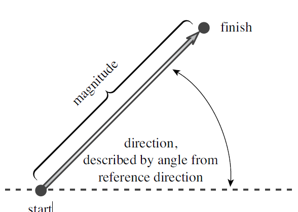
Now say you’re Lhanappa, the great mammoth hunter. Scouts report a mammoth herd 14.1 kilometers to the northwest. But because of a southeast wind, you don’t want to approach from the southeast. So you go 10 kilometers west and then 10 kilometers north, approaching the herd from the south. You know these two displacement vectors bring you to the same location as the single 14.1-kilometer vector pointing northwest. Lhanappa, the great mammoth hunter, also knows how to add vectors. Adding two vectors has a simple geometric interpretation. First, draw one vector. Then draw the second vector, starting from the arrow end of the first vector. Finally, draw a vector from the starting point of the first vector to the endpoint of the second vector. This third vector represents the sum of the first two (see figure below). Note that the length of the sum can be less than the sum of the individual lengths.
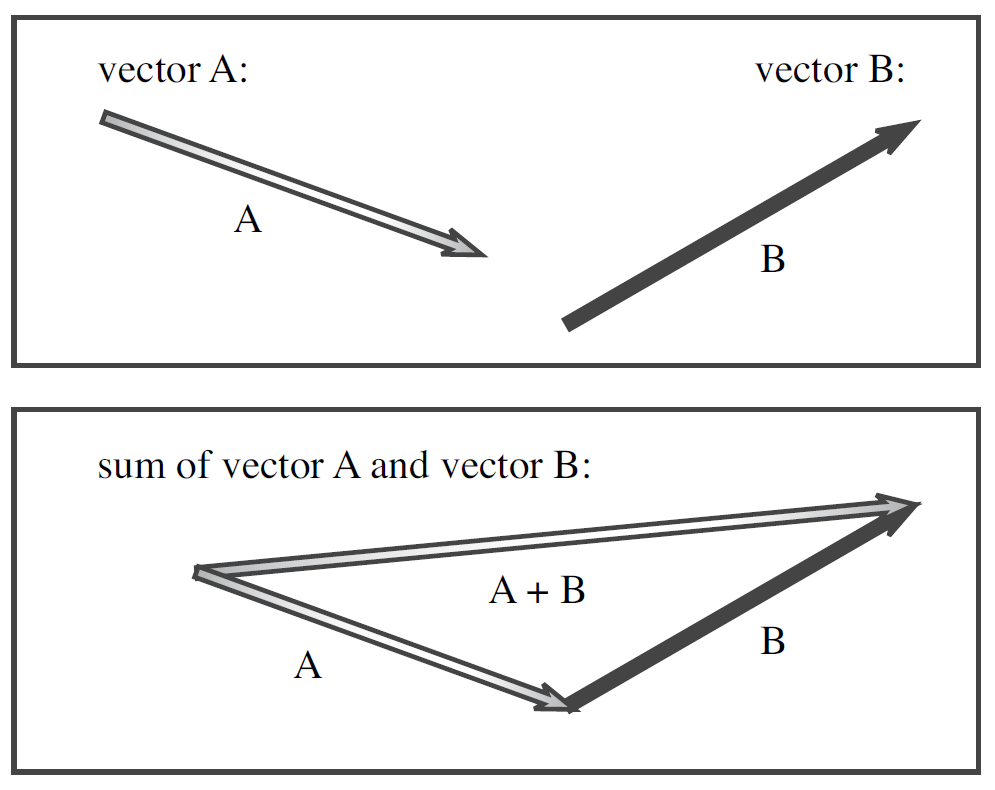
- You can describe a vector by its
magnitude (length)anddirection (an angle). - You can represent a vector by its
xandycomponents.
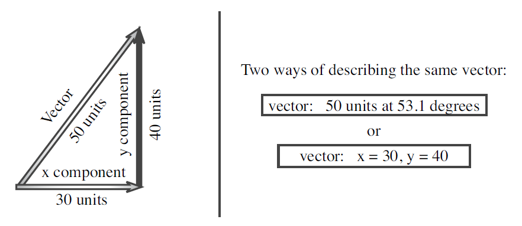
Vector Class on a Random Walk Algorithm example
vect.h - Prototypes
// vect.h -- Vector class with <<, mode state
#ifndef VECTOR_H_
#define VECTOR_H_
#include <iostream>
namespace VECTOR
{
class Vector
{
public:
enum Mode
{
RECT,
POL
};
// RECT for rectangular, POL for Polar modes
private:
double x; // horizontal value
double y; // vertical value
double mag; // length of vector
double ang; // direction of vector in degrees
Mode mode; // RECT or POL
// private methods for setting values
void set_mag();
void set_ang();
void set_x();
void set_y();
public:
Vector();
Vector(double n1, double n2, Mode form = RECT);
void reset(double n1, double n2, Mode form = RECT);
~Vector();
double xval() const { return x; } // report x value
double yval() const { return y; } // report y value
double magval() const { return mag; } // report magnitude
double angval() const { return ang; } // report angle
void polar_mode(); // set mode to POL
void rect_mode(); // set mode to RECT
// operator overloading
Vector operator+(const Vector &b) const;
Vector operator-(const Vector &b) const;
Vector operator-() const;
Vector operator*(double n) const;
// friends
friend Vector operator*(double n, const Vector &a);
friend std::ostream &
operator<<(std::ostream &os, const Vector &v);
};
} // end namespace VECTOR
#endif
/*
Notice that the four functions in this that report component values are
defined in the class declaration.This automatically makes them inline functions.The fact
that these functions are so short makes them excellent candidates for inlining. None of
them should alter object data, so they are declared using the const modifier.As you may
recall from Chapter 10, this is the syntax for declaring a function that doesn’t modify the
object it implicitly accesses.
*/
vect.cpp - Methods
// vect.cpp -- methods for the Vector class
#include <cmath>
#include "vect.h" // includes <iostream>
using std::atan;
using std::atan2;
using std::cos;
using std::cout;
using std::sin;
using std::sqrt;
namespace VECTOR
{
// compute degrees in one radian
const double Rad_to_deg = 45.0 / atan(1.0);
// should be about 57.2957795130823
// private methods
// calculates magnitude from x and y
void Vector::set_mag()
{
mag = sqrt(x * x + y * y);
}
void Vector::set_ang()
{
if (x == 0.0 && y == 0.0)
ang = 0.0;
else
ang = atan2(y, x);
}
// set x from polar coordinate
void Vector::set_x()
{
x = mag * cos(ang);
}
// set y from polar coordinate
void Vector::set_y()
{
y = mag * sin(ang);
}
// public methods
Vector::Vector() // default constructor
{
x = y = mag = ang = 0.0;
mode = RECT;
}
// construct vector from rectangular coordinates if form is r
// (the default) or else from polar coordinates if form is p
Vector::Vector(double n1, double n2, Mode form)
{
mode = form;
if (form == RECT)
{
x = n1;
y = n2;
set_mag();
set_ang();
}
else if (form == POL)
{
mag = n1;
ang = n2 / Rad_to_deg;
set_x();
set_y();
}
else
{
cout << "Incorrect 3rd argument to Vector() -- ";
cout << "vector set to 0\n";
x = y = mag = ang = 0.0;
mode = RECT;
}
}
// reset vector from rectangular coordinates if form is
// RECT (the default) or else from polar coordinates if
// form is POL
void Vector::reset(double n1, double n2, Mode form)
{
mode = form;
if (form == RECT)
{
x = n1;
y = n2;
set_mag();
set_ang();
}
else if (form == POL)
{
mag = n1;
ang = n2 / Rad_to_deg;
set_x();
set_y();
}
else
{
cout << "Incorrect 3rd argument to Vector() -- ";
cout << "vector set to 0\n";
x = y = mag = ang = 0.0;
mode = RECT;
}
}
Vector::~Vector() // destructor
{
}
void Vector::polar_mode() // set to polar mode
{
mode = POL;
}
void Vector::rect_mode() // set to rectangular mode
{
mode = RECT;
}
// operator overloading
// add two Vectors
Vector Vector::operator+(const Vector &b) const
{
return Vector(x + b.x, y + b.y);
}
// subtract Vector b from a
Vector Vector::operator-(const Vector &b) const
{
return Vector(x - b.x, y - b.y);
}
// reverse sign of Vector
Vector Vector::operator-() const
{
return Vector(-x, -y);
}
// multiply vector by n
Vector Vector::operator*(double n) const
{
return Vector(n * x, n * y);
}
// friend methods
// multiply n by Vector a
Vector operator*(double n, const Vector &a)
{
return a * n;
}
// display rectangular coordinates if mode is RECT,
// else display polar coordinates if mode is POL
std::ostream &operator<<(std::ostream &os, const Vector &v)
{
if (v.mode == Vector::RECT)
os << "(x,y) = (" << v.x << ", " << v.y << ")";
else if (v.mode == Vector::POL)
{
os << "(m,a) = (" << v.mag << ", "
<< v.ang * Rad_to_deg << ")";
}
else
os << "Vector object mode is invalid";
return os;
}
} // end namespace VECTOR
randwalk.cpp - Program
// randwalk.cpp -- using the Vector class
// compile with the vect.cpp file
#include <iostream>
#include <cstdlib> // rand(), srand() prototypes
#include <ctime> // time() prototype
#include "vect.h"
int main()
{
using namespace std;
using VECTOR::Vector;
srand(time(0)); // seed random-number generator
double direction;
Vector step;
Vector result(0.0, 0.0);
unsigned long steps = 0;
double target;
double dstep;
cout << "Enter target distance (q to quit): ";
while (cin >> target)
{
cout << "Enter step length: ";
if (!(cin >> dstep))
break;
while (result.magval() < target)
{
direction = rand() % 360;
step.reset(dstep, direction, Vector::POL);
result = result + step;
steps++;
}
cout << "After " << steps << " steps, the subject "
"has the following location:\n";
cout << result << endl;
result.polar_mode();
cout << " or\n"
<< result << endl;
cout << "Average outward distance per step = "
<< result.magval() / steps << endl;
steps = 0;
result.reset(0.0, 0.0);
cout << "Enter target distance (q to quit): ";
}
cout << "Bye!\n";
cin.clear();
while (cin.get() != '\n')
continue;
return 0;
}
/*
Enter target distance (q to quit): 50
Enter step length: 2
After 253 steps, the subject has the following location:
(x,y) = (46.1512, 20.4902)
or
(m,a) = (50.495, 23.9402)
Average outward distance per step = 0.199587
Enter target distance (q to quit): 50
Enter step length: 2
After 951 steps, the subject has the following location:
(x,y) = (-21.9577, 45.3019)
or
(m,a) = (50.3429, 115.8593)
Average outward distance per step = 0.0529362
Enter target distance (q to quit): 50
Enter step length: 1
After 1716 steps, the subject has the following location:
(x,y) = (40.0164, 31.1244)
or
(m,a) = (50.6956, 37.8755)
Average outward distance per step = 0.0295429
Enter target distance (q to quit): q
Bye!
*/
State Member - in the example above the Vector class stores both the rectangular coordinates and the polar coordinates for a
vector. It uses a member called mode to control which form the constructor, the reset()
method, and the overloaded operator<<() function use, with the enumerations RECT
representing the rectangular mode (the default) and POL the polar mode
Such a member
is termed a state member because it describes the state an object is in.
Automatic Conversions and Type Casts for Classes
Conversions for its built-in types - the following statements all generate numeric type conversions
long count = 8; // int value 8 converted to type long
double time = 11; // int value 11 converted to type double
int side = 3.33; // double value 3.33 converted to type int 3
The C++ language does not automatically convert types that are not compatible (left side is a pointer type, whereas the right side is a number)
When automatic conversions fail, you may use a type cast:
Example for classes
Stonewt myCat; // create a Stonewt object
myCat = 19.6; // not valid if Stonewt(double) is declared as explicit
mycat = Stonewt(19.6); // ok, an explicit conversion
mycat = (Stonewt) 19.6; // ok, old form for explicit typecast
Conversions for Stone classes program examples (Conversion of number to Stone object)
stonewt.h - Prototypes
// stonewt.h -- definition for the Stonewt class
#ifndef STONEWT_H_
#define STONEWT_H_
class Stonewt
{
private:
enum
{
Lbs_per_stn = 14
}; // pounds per stone
int stone; // whole stones
double pds_left; // fractional pounds
double pounds; // entire weight in pounds
public:
Stonewt(double lbs); // constructor for double pounds
Stonewt(int stn, double lbs); // constructor for stone, lbs
Stonewt(); // default constructor
~Stonewt();
void show_lbs() const; // show weight in pounds format
void show_stn() const; // show weight in stone format
};
#endif
stonewt.cpp - Methods
// stonewt.cpp -- Stonewt methods
#include <iostream>
using std::cout;
#include "stonewt.h"
// construct Stonewt object from double value
Stonewt::Stonewt(double lbs)
{
stone = int(lbs) / Lbs_per_stn; // integer division
pds_left = int(lbs) % Lbs_per_stn + lbs - int(lbs);
pounds = lbs;
}
// construct Stonewt object from stone, double values
Stonewt::Stonewt(int stn, double lbs)
{
stone = stn;
pds_left = lbs;
pounds = stn * Lbs_per_stn + lbs;
}
Stonewt::Stonewt() // default constructor, wt = 0
{
stone = pounds = pds_left = 0;
}
Stonewt::~Stonewt() // destructor
{
}
// show weight in stones
void Stonewt::show_stn() const
{
cout << stone << " stone, " << pds_left << " pounds\n";
}
// show weight in pounds
void Stonewt::show_lbs() const
{
cout << pounds << " pounds\n";
}
stone.cpp - Program
// stone.cpp -- user-defined conversions
// compile with stonewt.cpp
#include <iostream>
using std::cout;
#include "stonewt.h"
void display(const Stonewt &st, int n);
int main()
{
Stonewt incognito = 275; // uses constructor to initialize
Stonewt wolfe(285.7); // same as Stonewt wolfe = 285.7;
Stonewt taft(21, 8);
cout << "The celebrity weighed ";
incognito.show_stn();
cout << "The detective weighed ";
wolfe.show_stn();
cout << "The President weighed ";
taft.show_lbs();
incognito = 276.8; // uses constructor for conversion
taft = 325; // same as taft = Stonewt(325);
cout << "After dinner, the celebrity weighed ";
incognito.show_stn();
cout << "After dinner, the President weighed ";
taft.show_lbs();
display(taft, 2);
cout << "The wrestler weighed even more.\n";
display(422, 2);
cout << "No stone left unearned\n";
return 0;
}
void display(const Stonewt &st, int n)
{
for (int i = 0; i < n; i++)
{
cout << "Wow! ";
st.show_stn();
}
}
/*
The celebrity weighed 19 stone, 9 pounds
The detective weighed 20 stone, 5.7 pounds
The President weighed 302 pounds
After dinner, the celebrity weighed 19 stone, 10.8 pounds
After dinner, the President weighed 325 pounds
Wow! 23 stone, 3 pounds
Wow! 23 stone, 3 pounds
The wrestler weighed even more.
Wow! 30 stone, 2 pounds
Wow! 30 stone, 2 pounds
No stone left unearned
*/
Conversion Functions
(Conversion of Stone object to number)
stonewt1.h - Prototypes
// stonewt1.h -- revised definition for the Stonewt class
#ifndef STONEWT1_H_
#define STONEWT1_H_
class Stonewt
{
private:
enum
{
Lbs_per_stn = 14
}; // pounds per stone
int stone; // whole stones
double pds_left; // fractional pounds
double pounds; // entire weight in pounds
public:
Stonewt(double lbs); // construct from double pounds
Stonewt(int stn, double lbs); // construct from stone, lbs
Stonewt(); // default constructor
~Stonewt();
void show_lbs() const; // show weight in pounds format
void show_stn() const; // show weight in stone format
// conversion functions
operator int() const;
operator double() const;
};
#endif
stonewt1.cpp - Methods
// stonewt1.cpp -- Stonewt class methods + conversion functions
#include <iostream>
using std::cout;
#include "stonewt1.h"
// construct Stonewt object from double value
Stonewt::Stonewt(double lbs)
{
stone = int(lbs) / Lbs_per_stn; // integer division
pds_left = int(lbs) % Lbs_per_stn + lbs - int(lbs);
pounds = lbs;
}
// construct Stonewt object from stone, double values
Stonewt::Stonewt(int stn, double lbs)
{
stone = stn;
pds_left = lbs;
pounds = stn * Lbs_per_stn + lbs;
}
Stonewt::Stonewt() // default constructor, wt = 0
{
stone = pounds = pds_left = 0;
}
Stonewt::~Stonewt() // destructor
{
}
// show weight in stones
void Stonewt::show_stn() const
{
cout << stone << " stone, " << pds_left << " pounds\n";
}
// show weight in pounds
void Stonewt::show_lbs() const
{
cout << pounds << " pounds\n";
}
// conversion functions
Stonewt::operator int() const
{
return int(pounds + 0.5);
}
Stonewt::operator double() const
{
return pounds;
}
stone1.cpp - Program
// stone1.cpp -- user-defined conversion functions
// compile with stonewt1.cpp
#include <iostream>
#include "stonewt1.h"
int main()
{
using std::cout;
Stonewt poppins(9, 2.8); // 9 stone, 2.8 pounds
double p_wt = poppins; // implicit conversion
cout << "Convert to double => ";
cout << "Poppins: " << p_wt << " pounds.\n";
cout << "Convert to int => ";
cout << "Poppins: " << int(poppins) << " pounds.\n";
return 0;
}
Conversion functions are user-defined type casts, and you can use them the way you
would use a type cast. For example, if you define a Stonewt-to-double conversion function,
you can use the following conversions:
Stonewt wolfe(285.7);
double host = double (wolfe); // syntax #1
double thinker = (double) wolfe; // syntax #2
Stonewt wells(20, 3);
double star = wells; // implicit use of conversion function
Note the following points:
- The
conversion functionmust be aclassmethod. - The
conversion functionmust not specify areturntype. - The
conversion functionmust haveno arguments.
You should use implicit conversion functions with care. Often a function that can only be invoked explicitly is the best choice.
C++ provides the following type conversions for classes:
- A class constructor that has but a single argument serves as an instruction for converting
a value of the argument type to the class type. For example, the
Stonewtclass constructor with a type int argument is invoked automatically when you assign a type int value to aStonewtobject. However, using explicit in the constructor declaration eliminates implicit conversions and allows only explicit conversions. - A special class member operator function called a
conversion functionserves as an instruction for converting a class object to some other type. Theconversion functionis a class member, has no declared return type, has no arguments, and is called operatortypeName(), where typeName is the type to which the object is to be converted.Thisconversion functionis invoked automatically when you assign a class object to a variable of that type or use the type cast operator to that type.
Friend functions
total = jennySt.operator+(kennyD); // member function
// or else
total = operator+(jennySt, kennyD); // friend function
Chapter 12: Classes and Dynamic Memory Allocation
List of what you will learn
- Using dynamic memory allocation for class members
- Implicit and explicit copy constructors
- Implicit and explicit overloaded assignment operators
- What you must do if you use new in a constructor
- Using static class members
- Using placement new with objects
- Using pointers to objects
- Implementing a queue abstract data type (ADT)
Dynamic Memory and Classes
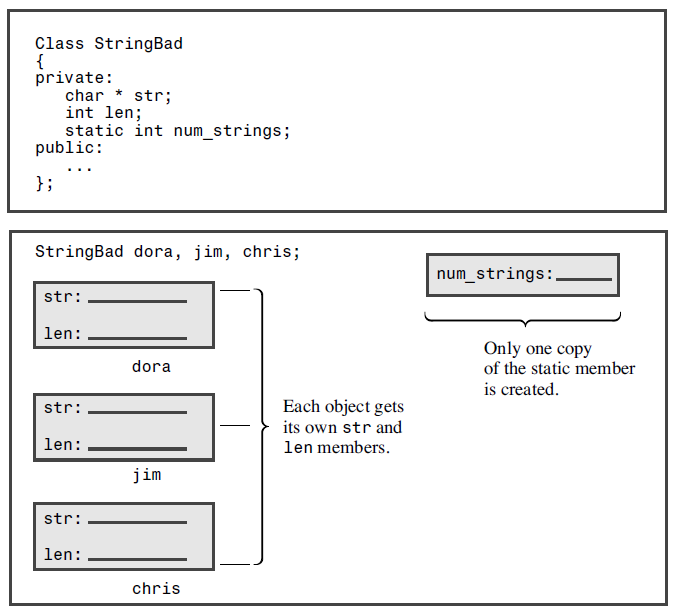
strngbad.h - Prototypes - flawed string class definition
// strngbad.h -- flawed string class definition
#include <iostream>
#ifndef STRNGBAD_H_
#define STRNGBAD_H_
class StringBad
{
private:
char *str; // pointer to string
int len; // length of string
static int num_strings; // number of objects
public:
StringBad(const char *s); // constructor
StringBad(); // default constructor
~StringBad(); // destructor
// friend function
friend std::ostream &operator<<(std::ostream &os,
const StringBad &st);
};
#endif
strngbad.cpp - Methods
// strngbad.cpp -- StringBad class methods
#include <cstring> // string.h for some
#include "strngbad.h"
using std::cout;
// initializing static class member
int StringBad::num_strings = 0;
// class methods
// construct StringBad from C string
StringBad::StringBad(const char *s)
{
len = std::strlen(s); // set size
str = new char[len + 1]; // allot storage
std::strcpy(str, s); // initialize pointer
num_strings++; // set object count
cout << num_strings << ": \"" << str
<< "\" object created\n"; // For Your Information
}
StringBad::StringBad() // default constructor
{
len = 4;
str = new char[4];
std::strcpy(str, "C++"); // default string
num_strings++;
cout << num_strings << ": \"" << str
<< "\" default object created\n"; // FYI
}
StringBad::~StringBad() // necessary destructor
{
cout << "\"" << str << "\" object deleted, "; // FYI
--num_strings; // required
cout << num_strings << " left\n"; // FYI
delete[] str; // required
}
std::ostream &operator<<(std::ostream &os, const StringBad &st)
{
os << st.str;
return os;
}
vegnews.cpp - Program
// vegnews.cpp -- using new and delete with classes
// compile with strngbad.cpp
#include <iostream>
using std::cout;
#include "strngbad.h"
void callme1(StringBad &); // pass by reference
void callme2(StringBad); // pass by value
int main()
{
using std::endl;
{
cout << "Starting an inner block.\n";
StringBad headline1("Celery Stalks at Midnight");
StringBad headline2("Lettuce Prey");
StringBad sports("Spinach Leaves Bowl for Dollars");
cout << "headline1: " << headline1 << endl;
cout << "headline2: " << headline2 << endl;
cout << "sports: " << sports << endl;
callme1(headline1);
cout << "headline1: " << headline1 << endl;
callme2(headline2);
cout << "headline2: " << headline2 << endl;
cout << "Initialize one object to another:\n";
StringBad sailor = sports;
cout << "sailor: " << sailor << endl;
cout << "Assign one object to another:\n";
StringBad knot;
knot = headline1;
cout << "knot: " << knot << endl;
cout << "Exiting the block.\n";
}
cout << "End of main()\n";
return 0;
}
void callme1(StringBad &rsb)
{
cout << "String passed by reference:\n";
cout << " \"" << rsb << "\"\n";
}
void callme2(StringBad sb)
{
cout << "String passed by value:\n";
cout << " \"" << sb << "\"\n";
}
/*
Starting an inner block.
1: "Celery Stalks at Midnight" object created
2: "Lettuce Prey" object created
3: "Spinach Leaves Bowl for Dollars" object created
headline1: Celery Stalks at Midnight
headline2: Lettuce Prey
sports: Spinach Leaves Bowl for Dollars
String passed by reference:
"Celery Stalks at Midnight"
headline1: Celery Stalks at Midnight
String passed by value:
"Lettuce Prey"
"Lettuce Prey" object deleted, 2 left
headline2: Dû°
Initialize one object to another:
sailor: Spinach Leaves Bowl for Dollars
Assign one object to another:
3: "C++" default object created
knot: Celery Stalks at Midnight
Exiting the block.
"Celery Stalks at Midnight" object deleted, 2 left
"Spinach Leaves Bowl for Dollars" object deleted, 1 left
"Spinach Leaves Bowl for Doll8" object deleted, 0 left
"@g" object deleted, -1 left // default copy constructor problem
"-|" object deleted, -2 left // assignment operator problem
End of main()
*/
The class definition declares and defines two constructors, but the program uses three constructors. Consider this line:
StringBad sailor = sports;
StringBad sailor = StringBad(sports); //<- how compiler see it /constructor using sports
StringBad(const StringBad &); // matching constructor could have this prototype:
//compiler automatically generates this constructor (called a copy constructor),
//which is Special Member Function
Default Copy Constructor
Automatically generated copy constructor make shallow copy (called memberwise copying) of the object - thus the problem.
memberwise copying - does not copy the string; it copies the pointer to a string (member-by-member, that is by value - pointer value is address).
You can solve this type of problems in the class design by making a deep copy.
Memberwise copying schema is presented on the image below
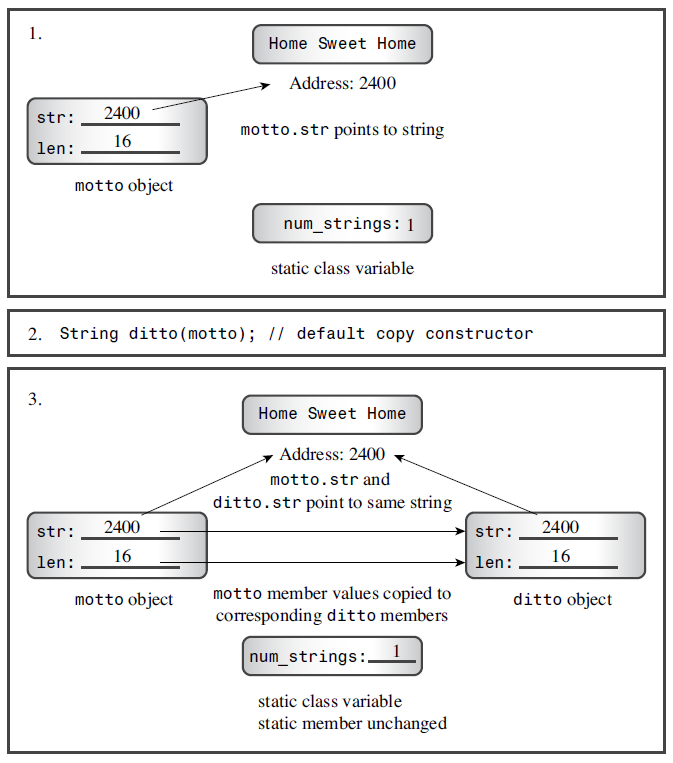
Compiler uses a copy constructor whenever a program generates copies of an object
Compiler might generate a temporary Vector object to hold an intermediate result when adding three Vector objects.
In vegnews.cpp program invokes a copy constructor callme2(headline2);
The program uses a copy constructor to initialize sb, the formal StringBad-type
parameter for the callme2() function.
Default Assignment Constructor
That is, it takes and returns a reference to an object of the class. For example, here’s the
prototype for the StringBad class:
Like a copy constructor, an implicit implementation of an assignment operator performs
a member-to-member (memberwise copying) copy. If a member is itself an object of some class, the program
uses the assignment operator defined for that class to do the copying for that
particular member. Static data members are unaffected.
Thus again, the address was copied instead of value.
??? danger "Necessary thing to do if new is used in class
If a class contains members that are pointers initialized by new, you should define a copy
constructor that copies the pointed-to data instead of copying the pointers themselves. This
is termed deep copying. The alternative form of copying (memberwise, or shallow, copying)
just copies pointer values. A shallow copy is just that—the shallow “scraping off” of pointer
information for copying, rather than the deeper “mining” required to copy the constructs
referred to by the pointers.
Special Member Functions
C++ automatically provides the following member functions:
Default constructorif you define no constructorsDefault destructorif you don’t define oneCopy constructorif you don’t define oneAssignment operatorif you don’t define oneAddress operatorif you don’t define one
C++11 provides two more special member functions—the move constructor and the
move assignment operator
Solve problem - Defining an Explicit Copy Constructor
Explicit Copy Constructor with a deep copy - eg. duplication of the string and
assigning the address of the duplicate to the str member.
In short:
deep copy- Copy the member data to the new locationmembership copy- Copy the location of the member data
StringBad::StringBad(const StringBad & st)
{
num_strings++; // handle static member update
len = st.len; // same length
str = new char [len + 1]; // allot space
std::strcpy(str, st.str); // copy string to new location
cout << num_strings << ": \"" << str
<< "\" object created\n"; // For Your Information
}
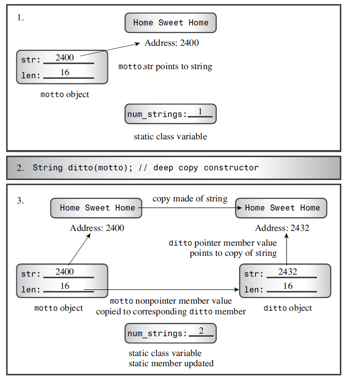
Solve problem - Overloading an Assignment Operator
StringBad & StringBad::operator=(const StringBad & st)
{
if (this == &st) // object assigned to itself
return *this; // all done
// If you don’t first apply the delete operator, the previous `string` will remain in memory.
// Because the program no longer has a pointer to the old string, that memory will be wasted.
delete [] str; // free old string
len = st.len;
str = new char [len + 1]; // get space for new string
std::strcpy(str, st.str); // copy the string
return *this; // return reference to invoking object
}
Implementation is similar to that of the copy constructor, but there are some differences:
- Because the target object may already refer to previously allocated data, the function
should use
delete []to free former obligations. - The function should protect against assigning an object to itself; otherwise, the freeing of memory described previously could erase the object’s contents before they are reassigned.
- The function returns a reference to the invoking object.
C++11 Null Pointer
In C++98, the literal 0 has two meanings—it can be the numeric value 0, and it can be the
null pointer — thus making it difficult for the reader and compiler to distinguish between the
two. Sometimes programmers use (void *) 0 to identify the pointer version. (The null
pointer itself may have a nonzero internal representation.) Other programmers use NULL, a
C macro defined to represent the null pointer. However, this proved to be an incomplete solution.
C++11 provides a better solution by introducing a new keyword, nullptr, to denote
the null pointer. You still can use 0 as before—otherwise an enormous amount of existing
code would be invalidated—but henceforth the recommendation is to use nullptr instead:
str = nullptr; // C++11 null pointer notation
Improved String Class from StringBad
With bracket notation and added few operators.
string1.h - Prototypes
// string1.h -- fixed and augmented string class definition
#ifndef STRING1_H_
#define STRING1_H_
#include <iostream>
using std::istream;
using std::ostream;
class String
{
private:
char *str; // pointer to string
int len; // length of string
static int num_strings; // number of objects
static const int CINLIM = 80; // cin input limit
public:
// constructors and other methods
String(const char *s); // constructor
String(); // default constructor
String(const String &); // copy constructor
~String(); // destructor
int length() const { return len; }
// overloaded operator methods
String &operator=(const String &);
String &operator=(const char *);
char &operator[](int i);
const char &operator[](int i) const;
// overloaded operator friends
friend bool operator<(const String &st, const String &st2);
friend bool operator>(const String &st1, const String &st2);
friend bool operator==(const String &st, const String &st2);
friend ostream &operator<<(ostream &os, const String &st);
friend istream &operator>>(istream &is, String &st);
// static function
static int HowMany();
};
#endif
string1.cpp - Methods
// string1.cpp -- String class methods
#include <cstring> // string.h for some
#include "string1.h" // includes <iostream>
using std::cin;
using std::cout;
// initializing static class member
int String::num_strings = 0;
// static method
int String::HowMany()
{
return num_strings;
}
// class methods
String::String(const char *s) // construct String from C string
{
len = std::strlen(s); // set size
str = new char[len + 1]; // allot storage
std::strcpy(str, s); // initialize pointer
num_strings++; // set object count
}
String::String() // default constructor
{
len = 4;
str = new char[1];
str[0] = '\0'; // default string
num_strings++;
}
String::String(const String &st)
{
num_strings++; // handle static member update
len = st.len; // same length
str = new char[len + 1]; // allot space
std::strcpy(str, st.str); // copy string to new location
}
String::~String() // necessary destructor
{
--num_strings; // required
delete[] str; // required
}
// overloaded operator methods
// assign a String to a String
String &String::operator=(const String &st)
{
if (this == &st)
return *this;
delete[] str;
len = st.len;
str = new char[len + 1];
std::strcpy(str, st.str);
return *this;
}
// assign a C string to a String
String &String::operator=(const char *s)
{
delete[] str;
len = std::strlen(s);
str = new char[len + 1];
std::strcpy(str, s);
return *this;
}
// read-write char access for non-const String
char &String::operator[](int i)
{
return str[i];
}
// read-only char access for const String
const char &String::operator[](int i) const
{
return str[i];
}
// overloaded operator friends
bool operator<(const String &st1, const String &st2)
{
return (std::strcmp(st1.str, st2.str) < 0);
}
bool operator>(const String &st1, const String &st2)
{
return st2 < st1;
}
bool operator==(const String &st1, const String &st2)
{
return (std::strcmp(st1.str, st2.str) == 0);
}
// simple String output
ostream &operator<<(ostream &os, const String &st)
{
os << st.str;
return os;
}
// quick and dirty String input
istream &operator>>(istream &is, String &st)
{
char temp[String::CINLIM];
is.get(temp, String::CINLIM);
if (is)
st = temp;
while (is && is.get() != '\n')
continue;
return is;
}
sayings1.cpp - Program
// sayings1.cpp -- using expanded String class
// compile with string1.cpp
#include <iostream>
#include "string1.h"
const int ArSize = 10;
const int MaxLen = 81;
int main()
{
using std::cin;
using std::cout;
using std::endl;
String name;
cout << "Hi, what's your name?\n>> ";
cin >> name;
cout << name << ", please enter up to " << ArSize
<< " short sayings <empty line to quit>:\n";
String sayings[ArSize]; // array of objects
char temp[MaxLen]; // temporary string storage
int i;
for (i = 0; i < ArSize; i++)
{
cout << i + 1 << ": ";
cin.get(temp, MaxLen);
while (cin && cin.get() != '\n')
continue;
if (!cin || temp[0] == '\0') // empty line?
break; // i not incremented
else
sayings[i] = temp; // overloaded assignment
}
int total = i; // total # of lines read
if (total > 0)
{
cout << "Here are your sayings:\n";
for (i = 0; i < total; i++)
cout << sayings[i][0] << ": " << sayings[i] << endl;
int shortest = 0;
int first = 0;
for (i = 1; i < total; i++)
{
if (sayings[i].length() < sayings[shortest].length())
shortest = i;
if (sayings[i] < sayings[first])
first = i;
}
cout << "Shortest saying:\n"
<< sayings[shortest] << endl;
;
cout << "First alphabetically:\n"
<< sayings[first] << endl;
cout << "This program used " << String::HowMany()
<< " String objects. Bye.\n";
}
else
cout << "No input! Bye.\n";
return 0;
}
/*
Hi, what's your name?
>> Misty Gutz
Misty Gutz, please enter up to 10 short sayings <empty line to quit>:
1: a fool and his money are soon parted
2: penny wise, pound foolish
3: the love of money is the root of much evil
4: out of sight, out of mind
5: absence makes the heart grow fonder
6: absinthe makes the hart grow fonder
7:
Here are your sayings:
a: a fool and his money are soon parted
p: penny wise, pound foolish
t: the love of money is the root of much evil
o: out of sight, out of mind
a: absence makes the heart grow fonder
a: absinthe makes the hart grow fonder
Shortest saying:
penny wise, pound foolish
First alphabetically:
a fool and his money are soon parted
This program used 11 String objects. Bye.
*/
Older versions of get(char *, int)
Older versions of get(char *, int) don’t evaluate to false upon reading an empty line.
For those versions, however, the first character in the string is a null character if an empty
line is entered. This example uses the following code:
if (!cin || temp[0] == '\0') // empty line?
break; // i not incremented
If the implementation follows the current C++ Standard, the first test in the if statement
detects an empty line, whereas the second test detects the empty line for older implementations
When Using new in Constructors
In particular, you should do the following:
- If you use
newto initialize a pointer member in a constructor, you should usedeletein the destructor. - The uses of
newanddeleteshould be compatible. You should pairnewwithdeleteandnew []withdelete []. - If there are multiple constructors, all should use
newthe same way—either all with brackets or all without brackets. There’s only one destructor, so all constructors have to be compatible with that destructor. However, it is permissible to initialize a pointer withnewin one constructor and with the null pointer (0, or, with C++11,nullptr) in another constructor because it’s okay to apply thedeleteoperation (with or without brackets) to the null pointer.
NULL or 0 or nullptr?
Historically, the null pointer can be represented by 0 or by NULL, a symbolic constant defined
as 0 in several header files. C programmers often use NULL instead of 0 as a visual
reminder that the value is a pointer value, just as they use '\0' instead of 0 for the null
character as a visual reminder that this value is a character. The C++ tradition, however, has
favored a simple 0 instead of the equivalent NULL. And, as mentioned earlier, C++11 offers
the nullptr keyword as a better alternative.
-
You should define a copy constructor that initializes one object to another by doing deep copying. Typically, the constructor should emulate the following example:
String::String(const String & st) { num_strings++; // handle static member update if necessary len = st.len; // same length as copied string str = new char [len + 1]; // allot space std::strcpy(str, st.str); // copy string to new location }In particular, the copy constructor should allocate space to hold the copied data, and it should copy the data, not just the address of the data.Also it should update any static class members whose value would be affected by the process.
-
You should define an assignment operator that copies one object to another by doing deep copying. Typically, the class method should emulate the following example:
String & String::operator=(const String & st) { if (this == &st) // object assigned to itself return *this; // all done delete [] str; // free old string len = st.len; str = new char [len + 1]; // get space for new string std::strcpy(str, st.str); // copy the string return *this; // return reference to invoking object }In particular, the method should check for self-assignment; it should free memory formerly pointed to by the member pointer; it should copy the data, not just the address of the data; and it should return a reference to the invoking object.
Do's and Don'ts
Constructor:
String::String()
{
str = "default string"; // oops, no new []
len = std::strlen(str);
}
String::String(const char * s)
{
len = std::strlen(s);
str = new char; // oops, no []
std::strcpy(str, s); // oops, no room
}
String::String(const String & st)
{
len = st.len;
str = new char[len + 1]; // good, allocate space
std::strcpy(str, st.str); // good, copy value
}
The result of applying delete to a pointer not initialized by new is undefined, but it is probably bad
Any of the following would be okay:
String::String()
{
len = 0;
str = new char[1]; // uses new with []
str[0] = '\0';
}
String::String()
{
len = 0;
str = 0; // or, with C++11, str = nullptr;
}
String::String()
{
static const char * s = "C++"; // initialized just once
len = std::strlen(s);
str = new char[len + 1]; // uses new with []
std::strcpy(str, s);
}
Destructor that doesn’t work correctly with the previous constructors:
Returning objects
- Reference to a
constObject - efficient, but with restrictions
Example
If a function returns an object that is passed to it, either by
object invocation or as a method argument, you can increase the efficiency of the method
by having it return a reference.
- Reference to a Non-
constObject - eg. overloading assignment operator (efficiency) and the<<operator (necessity)
Example
- Object return
If its local to called function, it shouldn't be returned by reference (local data is automatically destroyed)
In this case return an
object
constObject return
Vector::operator+() allows you to use:
net = force1 + force2; // 1: three Vector objects
force1 + force2 = net; // 2: dyslectic programming
cout << (force1 + force2 = net).magval() << endl; // 3: demented programming
If Vector::operator+() is declared to have return type const Vector, then Statement 1 is
still allowed but Statements 2 and 3 become invalid.
Pointers to Objects
Creating object using keyword new
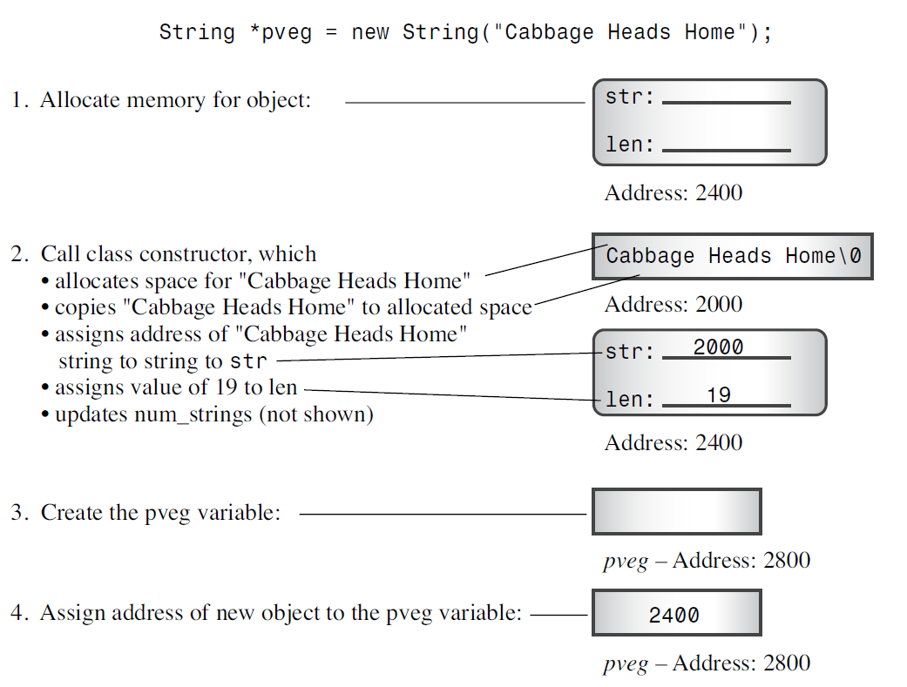
Using pointers with objects
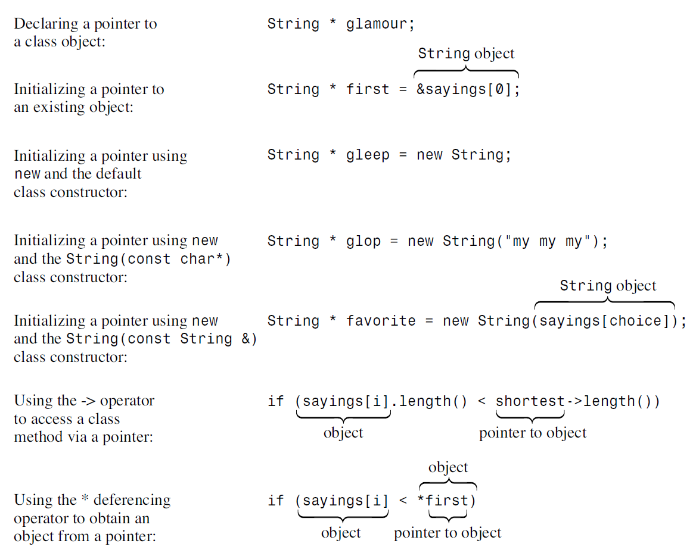
sayings2.cpp
// sayings2.cpp -- using pointers to objects
// compile with string1.cpp
#include <iostream>
#include <cstdlib> // (or stdlib.h) for rand(), srand()
#include <ctime> // (or time.h) for time()
#include "string1.h"
const int ArSize = 10;
const int MaxLen = 81;
int main()
{
using namespace std;
String name;
cout << "Hi, what's your name?\n>> ";
cin >> name;
cout << name << ", please enter up to " << ArSize
<< " short sayings <empty line to quit>:\n";
String sayings[ArSize];
char temp[MaxLen]; // temporary string storage
int i;
for (i = 0; i < ArSize; i++)
{
cout << i + 1 << ": ";
cin.get(temp, MaxLen);
while (cin && cin.get() != '\n')
continue;
if (!cin || temp[0] == '\0') // empty line?
break; // i not incremented
else
sayings[i] = temp; // overloaded assignment
}
int total = i; // total # of lines read
if (total > 0)
{
cout << "Here are your sayings:\n";
for (i = 0; i < total; i++)
cout << sayings[i] << "\n";
// use pointers to keep track of shortest, first strings
String *shortest = &sayings[0]; // initialize to first object
String *first = &sayings[0];
for (i = 1; i < total; i++)
{
if (sayings[i].length() < shortest->length())
shortest = &sayings[i];
if (sayings[i] < *first) // compare values
first = &sayings[i]; // assign address
}
cout << "Shortest saying:\n"
<< *shortest << endl;
cout << "First alphabetically:\n"
<< *first << endl;
srand(time(0));
int choice = rand() % total; // pick index at random
// use new to create, initialize new String object
String *favorite = new String(sayings[choice]);
cout << "My favorite saying:\n"
<< *favorite << endl;
delete favorite;
}
else
cout << "Not much to say, eh?\n";
cout << "Bye.\n";
return 0;
}
/*
Hi, what's your name?
>> Kirt Rood
Kirt Rood, please enter up to 10 short sayings <empty line to quit>:
1: a friend in need is a friend indeed
2: neither a borrower nor a lender be
3: a stitch in time saves nine
4: a niche in time saves stine
5: it takes a crook to catch a crook
6: cold hands, warm heart
7:
Here are your sayings:
a friend in need is a friend indeed
neither a borrower nor a lender be
a stitch in time saves nine
a niche in time saves stine
it takes a crook to catch a crook
cold hands, warm heart
Shortest saying:
cold hands, warm heart
First alphabetically:
a friend in need is a friend indeed
My favorite saying:
a stitch in time saves nine
Bye
*/
placenew1.cpp
// placenew1.cpp -- new, placement new, no delete
#include <iostream>
#include <string>
#include <new>
using namespace std;
const int BUF = 512;
class JustTesting
{
private:
string words;
int number;
public:
JustTesting(const string &s = "Just Testing", int n = 0)
{
words = s;
number = n;
cout << words << " constructed\n";
}
~JustTesting() { cout << words << " destroyed\n"; }
void Show() const { cout << words << ", " << number << endl; }
};
int main()
{
char *buffer = new char[BUF]; // get a block of memory
JustTesting *pc1, *pc2;
pc1 = new (buffer) JustTesting; // place object in buffer
pc2 = new JustTesting("Heap1", 20); // place object on heap
cout << "Memory block addresses:\n"
<< "buffer: "
<< (void *)buffer << " heap: " << pc2 << endl;
cout << "Memory contents:\n";
cout << pc1 << ": ";
pc1->Show();
cout << pc2 << ": ";
pc2->Show();
JustTesting *pc3, *pc4;
pc3 = new (buffer) JustTesting("Bad Idea", 6);
pc4 = new JustTesting("Heap2", 10);
cout << "Memory contents:\n";
cout << pc3 << ": ";
pc3->Show();
cout << pc4 << ": ";
pc4->Show();
delete pc2; // free Heap1
delete pc4; // free Heap2
delete[] buffer; // free buffer
cout << "Done\n";
return 0;
}
/*
Just Testing constructed
Heap1 constructed
Memory block addresses:
buffer: 00320AB0 heap: 00320CE0
Memory contents:
00320AB0: Just Testing, 0
00320CE0: Heap1, 20
Bad Idea constructed
Heap2 constructed
Memory contents:
00320AB0: Bad Idea, 6
00320EC8: Heap2, 10
Heap1 destroyed
Heap2 destroyed
Done
*/
placenew2.cpp (fixed placenew1)
/*
Fixed by managing memory locations used by placement new
and by adding appropriate uses of delete and of explicit destructor calls
The objects constructed by placement new should be
destroyed in order opposite that in which they were constructed.
(later object might have dependencies on an earlier object)
*/
// placenew2.cpp -- new, placement new, no delete
#include <iostream>
#include <string>
#include <new>
using namespace std;
const int BUF = 512;
class JustTesting
{
private:
string words;
int number;
public:
JustTesting(const string &s = "Just Testing", int n = 0)
{
words = s;
number = n;
cout << words << " constructed\n";
}
~JustTesting() { cout << words << " destroyed\n"; }
void Show() const { cout << words << ", " << number << endl; }
};
int main()
{
char *buffer = new char[BUF]; // get a block of memory
JustTesting *pc1, *pc2;
pc1 = new (buffer) JustTesting; // place object in buffer
pc2 = new JustTesting("Heap1", 20); // place object on heap
cout << "Memory block addresses:\n"
<< "buffer: "
<< (void *)buffer << " heap: " << pc2 << endl;
cout << "Memory contents:\n";
cout << pc1 << ": ";
pc1->Show();
cout << pc2 << ": ";
pc2->Show();
JustTesting *pc3, *pc4;
// fix placement new location
pc3 = new (buffer + sizeof(JustTesting))
JustTesting("Better Idea", 6);
pc4 = new JustTesting("Heap2", 10);
cout << "Memory contents:\n";
cout << pc3 << ": ";
pc3->Show();
cout << pc4 << ": ";
pc4->Show();
delete pc2; // free Heap1
delete pc4; // free Heap2
// explicitly destroy placement new objects
pc3->~JustTesting(); // destroy object pointed to by pc3
pc1->~JustTesting(); // destroy object pointed to by pc1
delete[] buffer; // free buffer
cout << "Done\n";
return 0;
}
/*
Just Testing constructed
Heap1 constructed
Memory block addresses:
buffer: 00320AB0 heap: 00320CE0
Memory contents:
00320AB0: Just Testing, 0
00320CE0: Heap1, 20
Better Idea constructed
Heap2 constructed
Memory contents:
00320AD0: Better Idea, 6
00320EC8: Heap2, 10
Heap1 destroyed
Heap2 destroyed
Better Idea destroyed
Just Testing destroyed
Done
*/
Object Initialization with new
In general, if Class_name is a class and if value is of type Type_name, the statement
invokes this constructor:
There may be trivial conversions, such as to this:
Also the usual conversions invoked by prototype matching, such as from int to double, takes place as long as there is no ambiguity. An initialization in the following form invokes the default constructor:
Overload << Operator
Define a friend operator function in form:
ostream & operator<<(ostream & os, const c_name & obj)
{
os << ... ; // display object contents
return os;
}
Queue Simulation
Problem: Client (Bank) want estimates of how long customers will have to wait in line
A queue is an abstract data type (ADT) and is a FIFO (first in, first out) structure.
- A queue holds an ordered sequence of items.
- A queue has a limit on the number of items it can hold.
- You should be able to create an empty queue.
- You should be able to check whether a queue is empty.
- You should be able to check whether a queue is full.
- You should be able to add an item to the end of a queue.
- You should be able to remove an item from the front of a queue.
- You should be able to determine the number of items in the queue.
For implementation of queue simulation, linked list was used, which consist of sequence of nodes,
which is represented by structure:
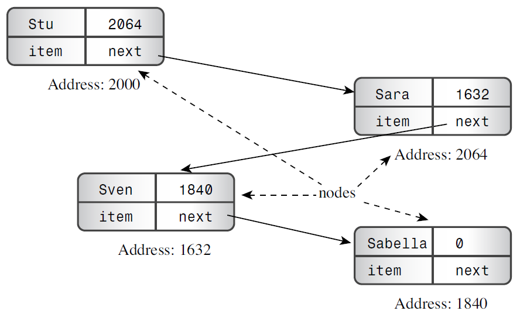
member initializer list
Problem: const int qsize need to be initialized
Solution:
// initializer-list syntax
//
// Data members are initialized in the order in which they appear in the class declaration,
// not in the order in which initializers are listed.
Queue::Queue(int qs) : qsize(qs) // initialize qsize to qs (via member initializer list)
{
front = rear = NULL;
items = 0;
}
Queue::Queue(int qs) : qsize(qs), front(NULL), rear(NULL), items(0) // Also acceptanble
{
}
// C++ 11 Member In-Class Initialization
class Classy
{
int mem1 = 10; // in-class initialization
const int mem2 = 20; // in-class initialization
...
}
Simulation program and class implementation:
queue.h - Prototypes
// queue.h -- interface for a queue
#ifndef QUEUE_H_
#define QUEUE_H_
// This queue will contain Customer items
class Customer
{
private:
long arrive; // arrival time for customer
int processtime; // processing time for customer
public:
Customer() { arrive = processtime = 0; }
void set(long when);
long when() const { return arrive; }
int ptime() const { return processtime; }
};
typedef Customer Item;
class Queue
{
private:
// class scope definitions
// Node is a nested structure definition local to this class
struct Node
{
Item item;
struct Node *next;
};
enum
{
Q_SIZE = 10
};
// private class members
Node *front; // pointer to front of Queue
Node *rear; // pointer to rear of Queue
int items; // current number of items in Queue
const int qsize; // maximum number of items in Queue
// preemptive definitions to prevent public copying
Queue(const Queue &q) : qsize(0) {}
Queue &operator=(const Queue &q) { return *this; }
public:
Queue(int qs = Q_SIZE); // create queue with a qs limit
~Queue();
bool isempty() const;
bool isfull() const;
int queuecount() const;
bool enqueue(const Item &item); // add item to end
bool dequeue(Item &item); // remove item from front
};
#endif
queue.cpp - Methods
// queue.cpp -- Queue and Customer methods
#include "queue.h"
#include <cstdlib> // (or stdlib.h) for rand()
// Queue methods
Queue::Queue(int qs) : qsize(qs)
{
front = rear = NULL; // or nullptr
items = 0;
}
Queue::~Queue()
{
Node *temp;
while (front != NULL) // while queue is not yet empty
{
temp = front; // save address of front item
front = front->next; // reset pointer to next item
delete temp; // delete former front
}
}
bool Queue::isempty() const
{
return items == 0;
}
bool Queue::isfull() const
{
return items == qsize;
}
int Queue::queuecount() const
{
return items;
}
// Add item to queue
bool Queue::enqueue(const Item &item)
{
if (isfull())
return false;
Node *add = new Node; // create node
// on failure, new throws std::bad_alloc exception
add->item = item; // set node pointers
add->next = NULL; // or nullptr;
items++;
if (front == NULL) // if queue is empty,
front = add; // place item at front
else
rear->next = add; // else place at rear
rear = add; // have rear point to new node
return true;
}
// Place front item into item variable and remove from queue
bool Queue::dequeue(Item &item)
{
if (front == NULL)
return false;
item = front->item; // set item to first item in queue
items--;
Node *temp = front; // save location of first item
front = front->next; // reset front to next item
delete temp; // delete former first item
if (items == 0)
rear = NULL;
return true;
}
// customer method
// when is the time at which the customer arrives
// the arrival time is set to when and the processing
// time set to a random value in the range 1 - 3
void Customer::set(long when)
{
processtime = std::rand() % 3 + 1;
arrive = when;
}
bank.cpp - Program
// bank.cpp -- using the Queue interface
// compile with queue.cpp
#include <iostream>
#include <cstdlib> // for rand() and srand()
#include <ctime> // for time()
#include "queue.h"
const int MIN_PER_HR = 60;
bool newcustomer(double x); // is there a new customer?
int main()
{
using std::cin;
using std::cout;
using std::endl;
using std::ios_base;
// setting things up
std::srand(std::time(0)); // random initializing of rand()
cout << "Case Study: Bank of Heather Automatic Teller\n";
cout << "Enter maximum size of queue: ";
int qs;
cin >> qs;
Queue line(qs); // line queue holds up to qs people
cout << "Enter the number of simulation hours: ";
int hours; // hours of simulation
cin >> hours;
// simulation will run 1 cycle per minute
long cyclelimit = MIN_PER_HR * hours; // # of cycles
cout << "Enter the average number of customers per hour: ";
double perhour; // average # of arrival per hour
cin >> perhour;
double min_per_cust; // average time between arrivals
min_per_cust = MIN_PER_HR / perhour;
Item temp; // new customer data
long turnaways = 0; // turned away by full queue
long customers = 0; // joined the queue
long served = 0; // served during the simulation
long sum_line = 0; // cumulative line length
int wait_time = 0; // time until autoteller is free
long line_wait = 0; // cumulative time in line
// running the simulation
for (int cycle = 0; cycle < cyclelimit; cycle++)
{
if (newcustomer(min_per_cust)) // have newcomer
{
if (line.isfull())
turnaways++;
else
{
customers++;
temp.set(cycle); // cycle = time of arrival
line.enqueue(temp); // add newcomer to line
}
}
if (wait_time <= 0 && !line.isempty())
{
line.dequeue(temp); // attend next customer
wait_time = temp.ptime(); // for wait_time minutes
line_wait += cycle - temp.when();
served++;
}
if (wait_time > 0)
wait_time--;
sum_line += line.queuecount();
}
// reporting results
if (customers > 0)
{
cout << "customers accepted: " << customers << endl;
cout << " customers served: " << served << endl;
cout << " turnaways: " << turnaways << endl;
cout << "average queue size: ";
cout.precision(2);
cout.setf(ios_base::fixed, ios_base::floatfield);
cout << (double)sum_line / cyclelimit << endl;
cout << " average wait time: "
<< (double)line_wait / served << " minutes\n";
}
else
cout << "No customers!\n";
cout << "Done!\n";
return 0;
}
// x = average time, in minutes, between customers
// return value is true if customer shows up this minute
bool newcustomer(double x)
{
return (std::rand() * x / RAND_MAX < 1);
}
/*
Case Study: Bank of Heather Automatic Teller
Enter maximum size of queue: 10
Enter the number of simulation hours: 100
Enter the average number of customers per hour: 15
customers accepted: 1485
customers served: 1485
turnaways: 0
average queue size: 0.15
average wait time: 0.63 minutes
Done!
Case Study: Bank of Heather Automatic Teller
Enter maximum size of queue: 10
Enter the number of simulation hours: 100
Enter the average number of customers per hour: 30
customers accepted: 2896
customers served: 2888
turnaways: 101
average queue size: 4.64
average wait time: 9.63 minutes
Done!
Case Study: Bank of Heather Automatic Teller
Enter maximum size of queue: 20
Enter the number of simulation hours: 100
Enter the average number of customers per hour: 30
customers accepted: 2943
customers served: 2943
turnaways: 93
average queue size: 13.06
average wait time: 26.63 minutes
Done!
*/